📝 Литературные проекты
Стихи, рассказы и литературные произведения, созданные с помощью ИИ-инструментов на темы безопасности, военной подготовки и патриотизма.
📚 Библиотека проектов
Цифровой фантом
🎭 Образовательный детектив
История о кибербезопасности и цифровых угрозах для подростков
📖 Читать онлайнКнига 2 — скоро
🚧 В разработке
Новый литературный проект будет добавлен позже
Книга 3 — скоро
🚧 В разработке
Новый литературный проект будет добавлен позже
Крутите книгу и разверните на весь экран
Цифровой фантом
О книге:
История, в которую не поверишь — пока не прочитаешь эту книгу.
Фишинг. Шантаж. Кибербуллинг. Фейковые друзья. Цифровой след, который не стереть.
Это не термины из учебника — это то, с чем однажды может столкнуться каждый подросток
с телефоном в руках.
Даша, Артём, Лиза и Стас не супергерои. Они обычные восьмиклассники, которые совершают ошибки,
боятся осуждения и не всегда знают, как поступить правильно. Но когда по школе начинает
орудовать загадочный хакер по прозвищу Призрак, именно им приходится разбираться —
кто он, что ему нужно и почему знает о них слишком много.
Двадцать глав. Двадцать вопросов, которые стыдно задать вслух. И ответы, которые могут
спасти — не только аккаунт.
Сможешь ли ты разгадать Призрака раньше, чем он доберётся до тебя?
📚 Главы книги
Двадцать глав в четырёх частях. Читайте прямо на странице или скачивайте любую главу в PDF. После финала — раздел «После прочтения»: вопросы для размышления, памятки «Что делать, если…», глоссарий, телефоны помощи и справка о законе.
Вступление
Всё, что случится с Дашей и её друзьями, каждый день происходит с настоящими подростками — и деньги, что исчезают с карты, и фейковые друзья, и фотографии, которые оказываются не там. Иногда читать про это легко. Иногда — нет: потому, что что-то похожее было с тобой или с тем, кого ты знаешь.
Если так — ты не один и ни в чём не виноват. В конце книги есть раздел «После прочтения» — с вопросами, разбором и справкой. А ещё там глоссарий и список, куда написать или позвонить, если станет тяжело или просто захочется поговорить. Он там не для галочки. Им можно пользоваться.
А теперь — идём разгадывать Призрака.
Невидимая угроза
Неделя первая · 7–11 октября[Даша. Понедельник, 7 октября]
Мяч летел прямо в меня, и я знала — это мой момент.
Прыжок. Блок!
— Молодец, Козлова! — крикнул тренер. — Ещё пару таких блоков, и областная сборная точно наша!
Я приземлилась, чувствуя, как адреналин разливается по венам. Волейбол — моя стихия, где всё понятно: есть правила, есть сетка, есть команда. Не то, что в интернете, где…
Бзз-бзз.
Телефон завибрировал в рюкзаке у стены. Я проигнорировала. До конца тренировки ещё двадцать минут, мама убьёт, если узнает, что я отвлекаюсь на телефон.
Бзз-бзз. Бзз-бзз.
Настойчивый какой-то.
— Козлова, приём! — крикнула Ника с другой стороны площадки.
Я встряхнулась и вернулась в игру. Телефон может подождать.
Но он не ждал. Вибрировал снова и снова, пока тренер, наконец, не свистнул, объявляя конец тренировки.
— Так, девочки, в пятницу контрольная игра с восьмой школой. Не опаздывать!
Я первая добежала до рюкзака. Среди уведомлений — два от банка. Сердце ухнуло вниз.
«Списание 500₽. Покупка: RobuxShop24. Карта 7293.»
Что?!
Я не покупала ничего в Roblox! Вообще ничего! Последний раз я играла… вчера? Позавчера? И точно ничего не покупала — на карте было ровно пятьсот рублей, карманные на эту неделю. Тем более мама вообще запретила эти сторонние магазины робуксов, где платишь рублями с карты, — говорила, что половина из них фейки.
— Да что у тебя там? — Лера заглянула через плечо. — Ого, пятьсот рублей! Круто шопишься.
— Я не… — начала я, но голос Кати из угла раздевалки прервал меня.
— Три тысячи… — она сидела на скамейке, уставившись в свой телефон. Лицо белое, как стена. — Три тысячи рублей. Мама убьёт меня.
— Что случилось? — я подошла к ней, всё ещё сжимая свой телефон.
— Я… я не знаю! — в её голосе звучала паника. — Смотри!
Она показала экран. Там было сообщение в Telegram:
@digital_friend_bot: «Поздравляем! Вы выиграли 10 000 робуксов! Для получения приза подтвердите вашу игровую учётную запись. Это БЕСПЛАТНО! Просто введите данные карты для верификации возраста. Средства НЕ будут списаны!»
Ниже — ссылка на какой-то сайт. RobIox[.]games[.]ru. С большой буквой i вместо маленькой L — почти не заметно.
— Катя… — я почувствовала, как по спине пробежал холодок. — Ты же не…
— Вводила, — её голос упал до шёпота. — Вчера вечером. Перешла по ссылке в группе про Roblox — там обещали бесплатные скины, — и бот сам мне написал. Они сказали, бесплатно же! А сейчас — бам! — она ткнула пальцем в экран. — Только что пришло уведомление. Три тысячи с моей карты! Всё, что на ней было!
В раздевалке повисла тишина — даже болтливая Ника замолчала.
— Надо родителям сказать, — наконец произнесла Лера.
— Не могу! — Катя практически закричала. — Они же… они заберут телефон! И планшет! И вообще всё! Мама говорила не связываться с незнакомцами в интернете, а я…
Слёзы покатились по её щекам. Я села рядом, не зная, что сказать. Пятьсот рублей у меня, три тысячи у неё. Кто-то неплохо заработал.
— А откуда этот бот узнал, что ты играешь в Roblox? — спросила я.
— Не знаю… Может, из моего профиля в TikTok? Я там выкладывала видео с постройками…
Бзз.
Мой телефон снова завибрировал. Новое сообщение в Telegram.
@digital_friend_bot: «Привет, Даша! Заметил, ты отличный игрок в Roblox. У меня есть эксклюзивное предложение только для избранных геймеров…»
Кровь застыла в жилах. Я не давала этому боту свой номер. Я вообще его не знаю.
— У меня тоже, — тихо сказала Аня с другого конца скамейки. — Пришло сообщение. Прямо сейчас.
— И у меня, — добавила Ника.
Лера ничего не сказала — просто повернула ко мне телефон. То же сообщение, слово в слово.
Мы переглянулись. Пять девочек. Пять сообщений. Один бот.
— Это не случайность, — медленно произнесла я. — Кто-то за нами следит.
Катя всхлипнула громче.
— Что мне делать? Родители узнают — конец. Заберут всё, посадят под домашний арест. Я же хотела как лучше, думала, правда выиграла…
Я посмотрела на сообщение от бота. Потом на Катю. Потом снова на сообщение.
— Слушай, — я взяла её за руку. — Давай разберёмся. Вместе. Выясним, кто этот бот и как он нас нашёл.
— Даш, ты что, с ума сошла? — Лера покачала головой. — Надо взрослым рассказать!
— И что? — я повернулась к ней. — Что они сделают? Ну, заберут телефоны, поставят родительский контроль на всё подряд, и мы будем как в тюрьме сидеть? Катя права — они паникуют и перекрывают кислород.
— Но… — Ника прикусила губу. — А если станет хуже?
Я задумалась. С одной стороны, Лера права — взрослые должны знать. С другой… Я представила лицо мамы. Её любимая фраза: «Я же говорила тебе быть осторожнее в интернете!» И потом — прощай, TikTok, прощай, свобода.
— Давайте так, — предложила я. — Даём себе пару дней. Попробуем сами разобраться. Если не получится или станет опаснее — идём к родителям. Договорились?
Девочки неуверенно закивали. Катя вытерла слёзы.
— А что, если бот напишет снова?
Я открыла сообщение от бота. Под текстом — три кнопки: «Получить бонус» «Узнать больше» «Пригласить друзей».
— Не отвечаем, — твёрдо сказала я. — Вообще. Ни слова. И предупреждаем всех в классе.
— Поздно, — Аня подняла телефон. — Я уже нажала «Узнать больше». Он прислал ссылку на какой-то сайт.
— Не переходи! — мы крикнули хором.
— Да не дура я, — обиделась Аня. — Просто хотела посмотреть, что он пришлёт.
Я взглянула на ссылку. RobIox[.]games[.]ru. Та же схема, что и у Кати, — таже буква «I» вместо «l». Один бот, одна ловушка, пять разных жертв.
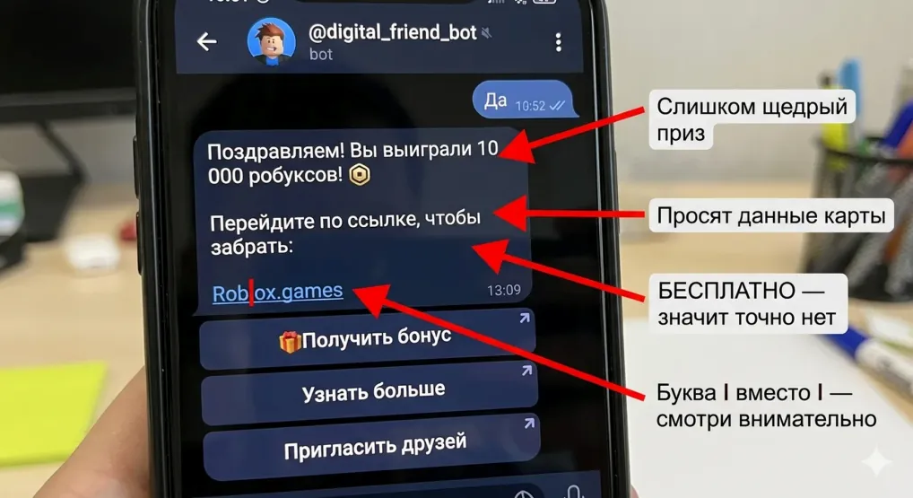
Домой я шла пешком, хотя обычно ездила на автобусе, — нужно было подумать.
Пятьсот рублей — не такая уж большая сумма. Но мама подключена к уведомлениям моей карты — увидит списание на RobuxShop24 и начнёт спрашивать. А я не знаю что ответить. Я ничего не покупала. Вообще ничего не делала! Не вводила данные карты, не переходила по ссылкам. Как они вообще…
Стоп.
Я остановилась посреди улицы. Вчера я скачала программу для бесплатных робуксов, которую Влад из параллельного класса скинул в общий чат. Сказал, она даёт бесплатные скины. Я скачала, установила, ввела логин и пароль от игры. Потом программа зависла и закрылась. Я подумала — глючит. Удалила.
Идиотка.
Теперь понятно, откуда у них мои данные. Никакие это были не скины. Логин и пароль я сама им отдала — вбила в это «приложение». А оно, судя по всему, забрало заодно и то, что я вводить не собиралась: данные карты, сохранённые в браузере. Той самой, с карманными. Но как бот вообще написал мне первым — вот что не укладывалось в голове. Я не подписывалась ни на какие рассылки, не переходила по ссылкам, вообще о нём не знала. Просто поставила программу — и он тут же меня нашёл. И не только у меня — наверняка половина школы скачала эту «чудо-программу». Катю поймали иначе — через ссылку в Telegram, без всяких файлов. Значит, ловушек было как минимум две.
Я дошла до подъезда. Достала из рюкзака тетрадь и быстро набросала — два столбца, стрелки. Даша. Катя. Как нас поймали. По-разному. Но результат один.
Телефон завибрировал снова.
@digital_friend_bot: «Даша, я вижу, ты не ответила на моё предложение. Это очень грустно. Кстати, красивые фотографии в твоём TikTok. Особенно та, с волейбольных соревнований. Твоей маме бы понравилось…»
Что?!
Я судорожно открыла TikTok. Мой аккаунт был открытый, да, но откуда бот знает про маму? Я никогда не упоминала её в постах.
Следующее сообщение пришло мгновенно:
@digital_friend_bot: «Ольга Викторовна работает в IT, да? Интересно, что она скажет, когда узнает, что её дочь установила вирус на домашний компьютер…»
Руки задрожали. Имя мамы. Место работы. Компьютер. Три вещи, которые я никому не говорила — и все три у него.
Это уже не просто мошенничество.
Это что-то гораздо хуже.
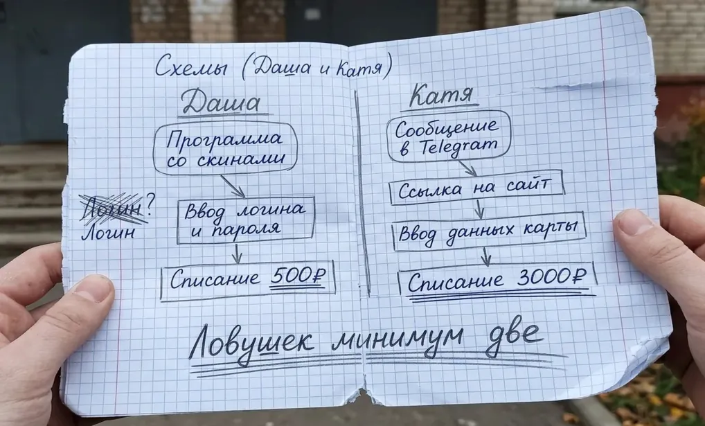
Конец главы 1
[Лиза. Вторник, 8 октября]
Вторник, после уроков. Библиотека была моим убежищем.
Тихая, спокойная, с запахом старых книг и лимонного освежителя воздуха. Здесь никто не пялился на меня, не шептался за спиной, не делал вид, что случайно толкнул в коридоре.
Я перевелась в эту школу всего месяц назад, но уже выучила главное правило выживания: быть невидимой. После звонка в коридорах толпа и толчея у гардероба — лучше переждать здесь, чем красться сквозь чужие взгляды.
Альбом лежал передо мной раскрытый на странице, где постепенно проступал портрет бабушки Маргариты Семёновны — я рисовала по памяти, как всегда. Её добрые глаза, морщинки вокруг них, седые волосы, аккуратно собранные в пучок. Бабушка — бывшая учительница музыки, строгая, но любящая. Родители работают на Севере вахтовым методом, приезжают только два раза в год.
«Лизонька, — говорила бабушка вчера за ужином, — ты слишком много времени проводишь одна. Почему не позовёшь кого-нибудь в гости?»
Как ей объяснить, что в прошлой школе меня травили восемь месяцев? Что девочки создали чат «Лиза-жиртрест» на сорок человек? Что я до сих пор просыпаюсь в холодном поту от кошмаров?
Бзз.
Телефон завибрировал в кармане. Я нахмурилась — звук был на минимум, но в тишине библиотеки казался оглушительным.
Сообщение от Миши в Telegram.
Миша Крылов: Привет! Нарисовала что-нибудь новое сегодня? 😊
Я улыбнулась, чувствуя, как щёки теплеют: Миша Крылов — тихий парень из параллельного 8-А. Мы познакомились онлайн две недели назад, когда он прокомментировал мой пейзаж в группе «Арт-таланты школы №7» в ВК. В реальной жизни мы ни разу не разговаривали — я слишком стеснялась подойти. И он, видимо, тоже.
Лиза: Да, портрет дорисовываю. Никак не получаются руки 😅
Миша Крылов: Не скромничай! У тебя настоящий талант, это видно!
Я перечитала сообщение три раза. Кто-то действительно замечает мои работы. Кто-то думает, что они хорошие. Уже две недели — и не надоело.
Миша Крылов: Слушай, есть классный бот здесь в Telegram. Он анализирует арт-стиль и даёт советы по улучшению техники. Хочешь попробовать?
Лиза: Бот? Не знаю… Звучит странно.
Миша Крылов: @art_master_bot — он реально крутой! Моя подруга из художки его использует. Помогает с композицией, светом, пропорциями. И бесплатно!
Бесплатно — магическое слово. Родители зарабатывают хорошо, но всё уходит на лечение бабушкиного сердца. Курсы рисования — непозволительная роскошь.
Лиза: А это безопасно?
Миша Крылов: Конечно! Это же просто анализ изображений. Типа как фильтры в соцсетях, только умнее. Я бы не советовал ерунду 😉
Последний смайлик заставил меня улыбнуться ещё шире. Экран телефона тёплый под пальцами — будто и правда кто-то по ту сторону рад именно мне. Может, в этой школе всё будет иначе?
Я нашла и открыла бота.
@art_master_bot: Добро пожаловать, юный художник! Я помогу раскрыть твой творческий потенциал. Для начала пришли мне несколько своих работ, чтобы я мог проанализировать твой уникальный стиль.
Звучало профессионально. Я сфотографировала портрет бабушки — ещё не законченный, но уже узнаваемый.
@art_master_bot: Обрабатываю… Вау! Потрясающая работа с тенями. Чувствуется эмоциональная связь с моделью. Для более точного анализа, можешь прислать ещё 2-3 работы? Желательно разные стили.
Я отправила пейзаж из парка и натюрморт с яблоками.
@art_master_bot: Невероятно! Ты определённо талантлива. Особенно для своего возраста. Кстати, сколько тебе лет?
Лиза: 13
@art_master_bot: Отлично! В этом возрасте формируется индивидуальный стиль. Для составления персональной программы развития мне нужно лучше понять твою личность как художника. Можешь прислать селфи? Чтобы я увидел, как ты держишь карандаш, какая у тебя осанка при рисовании — это важно для техники.
Что-то внутри меня напряглось. Селфи? Зачем боту моё фото?
Но тут же пришло новое сообщение от Миши.
Миша Крылов: Ну как? Попробовала бота?
Лиза: Да, он просит прислать селфи для анализа техники…
Миша Крылов: А, да, это нормально! Он анализирует, как ты сидишь, не портишь ли осанку. У художников часто проблемы со спиной. Забота о здоровье!
Логично. Бабушка постоянно делает замечания, что я сутулюсь над альбомом.
Я поднесла телефон, сделала фото — ничего особенного, кудрявые рыжие волосы, веснушки по всему лицу, зелёные глаза за очками. На заднем плане — стеллажи библиотеки.
Отправила — и тут же пожалела.
@art_master_bot: Спасибо! Вижу вдумчивого, серьёзного художника. И да — тебе стоит следить за осанкой, не наклоняйся слишком низко к бумаге. А теперь главное: я создам для тебя индивидуальную программу. Но сначала — можешь показать свой арт-уголок дома? Где ты обычно рисуешь?
Дом… Маленькая комната у бабушки, стол у окна, полка с красками и карандашами.
— Лиза?
Я подняла голову. В проходе между стеллажами стояла Даша Козлова — популярная волейболистка из моего класса. В первый день она заступилась за меня, когда кто-то «случайно» пролил сок на мои рисунки. С тех пор я восхищалась ею издалека — Даша была всем, чем я не была: уверенной, спортивной, популярной.
— Привет, — пробормотала я, инстинктивно прикрывая телефон.
— Рисуешь? — Даша подошла ближе, разглядывая портрет. — Ого, это же… твоя бабушка?
Я кивнула.
— Талантливо, — искренне сказала она и села напротив. — Слушай, у тебя всё нормально?
— Да, а что?
— Ну… — Даша замялась, поправляя свой вечный хвост. — Просто вчера на тренировке случилась странная история. Какой-то бот в Telegram начал писать всем девочкам из команды. Обещает всякие бонусы, подарки…
— Бот? — я нахмурилась, стараясь выглядеть безразличной. — Какой бот?
— @digital_friend_bot, — Даша понизила голос. — Пишет всякую чушь про бонусы в играх, просит данные карт. Катя повелась — потеряла три тысячи.
Моё сердце забилось быстрее. Другой бот. Не мой art_master.
— Ужас, — искренне сказала я. — Мне такой не писал.
— Повезло. Мы решили разобраться сами, пока родители не узнали. — Даша вздохнула, и я заметила тёмные круги под её глазами. — Если что-то странное заметишь — скажи, ладно?
Я кивнула. Даша встала, но задержалась.
— И ещё, Лиз… Если кто-то будет доставать тебя из-за рисунков или ещё чего — говори мне, хорошо? Я знаю, что в прошлой школе было… непросто.
Откуда она знает? Я ничего не рассказывала.
— Твоя бабушка и моя мама знакомы, — объяснила Даша, заметив моё удивление. — Маргарита Семёновна волнуется за тебя.
Комок подступил к горлу. Бабушка волнуется. Даша готова защищать. Может, в этой школе всё будет иначе?
Даша ушла, а я вернулась к телефону.
Миша Крылов: Эй, ты там? Не обижайся, если бот что-то не то сказал. Он иногда странный, но реально помогает!
@art_master_bot: Лиза, ты всё ещё здесь? Не хочу давить, но твой талант действительно особенный. Было бы жаль не развить его. Если неудобно показывать дом, давай начнём с простого — пришли фото своих художественных материалов?
Два сообщения одновременно. Забота с обеих сторон.
Наверное, я просто параноик, — подумала я. — Из-за того, что было в прошлой школе.
Фото материалов — это же не страшно? Просто карандаши и краски.
Я сфотографировала свой пенал с карандашами.
@art_master_bot: Отличный набор! Вижу, ты серьёзно относишься к творчеству. Я уже начал составлять твою индивидуальную программу. Полностью бесплатно. Нужно только зарегистрироваться через специальную форму — и мы начнём. Интересно?
Лиза: А что за программа?
@art_master_bot: Персональные уроки, разбор твоих работ профессионалами, возможность участия в конкурсах. Даже стипендия возможна! Отправлю ссылку на регистрацию?
Стипендия. Профессионалы. Бесплатно.
Слишком хорошо, чтобы быть правдой — прошептал тихий голос в голове. Но может, мне просто везёт? Может, наконец-то что-то хорошее?
Миша Крылов: Кстати, хотел спросить — может, встретимся как-нибудь? В реале? Можем вместе погулять в парке :)
Сердце пропустило удар. Миша хочет встретиться. Со мной. Девочкой, которую в прошлой школе называли «Лиза-жиртрест».
@art_master_bot: Ссылка на регистрацию: art-talent-program[.]ru/register. Заполни анкету, и мы свяжемся с тобой в течение дня!
Две возможности. Два пути вперёд. Что может пойти не так?
Я нажала на ссылку.
Страница загрузилась медленно, показывая простую форму: имя, возраст, телефоны родителей, домашний адрес, примеры работ.
И внизу, мелким шрифтом: «Загружая работы, вы даёте согласие на их использование в образовательных целях.»
Образовательные цели — это же нормально?
Я начала заполнять форму. Лиза Абрамова. 13 лет. Телефон…
Стоп.
Зачем им мой адрес? И телефон?
Я открыла чат с Мишей.
Лиза: Бот просит много личных данных…
Ответ пришёл мгновенно. Слишком быстро.
Миша Крылов: Это для связи с родителями, если выиграешь стипендию! Не волнуйся, я тоже заполнял. Всё ок!
Он тоже заполнял? Но Миша же не рисует… Или рисует?
Что-то было не так. Что-то…
Я открыла профиль Миши Крылова в ВК и стала листать — внимательно, медленно. Последний пост — три недели назад. Фотография с какого-то школьного мероприятия. Нигде ни слова о рисовании. Ни одного упоминания художки.
Телефон завибрировал снова.
Миша Крылов: Кстати, видел твои новые работы в группе! Тот портрет кота — огонь 🔥
Я замерла.
Какой кот?
Я никогда не рисовала котов. Никогда.
Телефон в руке вдруг показался чужим, будто принадлежал не мне.
Я быстро открыла группу «Арт-таланты школы №7». Последний мой пост — пейзаж из парка. Пять дней назад.
Никаких котов.
Пролистала свой профиль. Натюрморт с яблоками. Портрет бабушки. Зимний лес. Закат над городом.
Ни одного кота.
«Миша» перепутал меня с кем-то другим.
Холодок пробежал по спине. Если он действительно Миша, как он мог перепутать? Мы же общаемся две недели. Он хвалил именно мои работы. Помнил детали.
Если только… Если только он не Миша.
Настоящий Миша Крылов учился в 8-А. Я видела его от силы раз в неделю — в столовой или в коридоре между третьим и четвёртым уроком, когда наши классы шли навстречу друг другу. Тихий, всегда один, смотрит под ноги. Сегодня утром он прошёл мимо меня у раздевалки — я специально обернулась. Он даже не поднял взгляд. Кто же тогда писал мне все эти две недели?
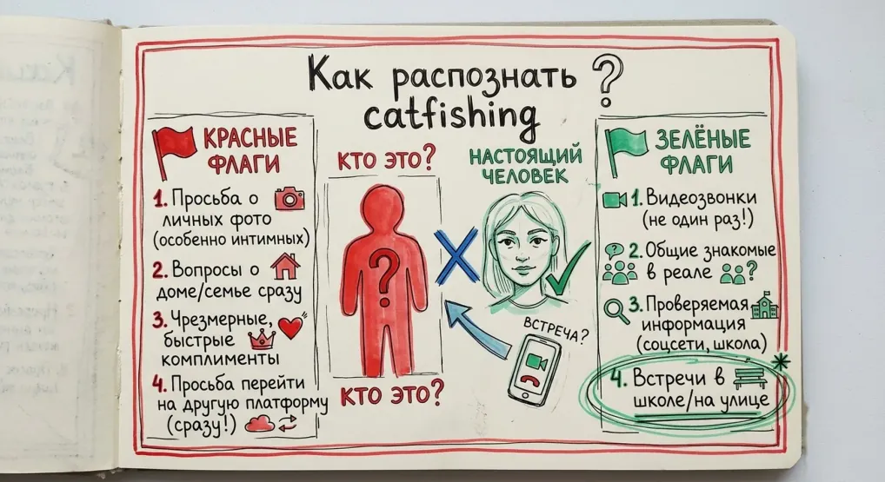
«Наверное…» — начала я писать в ответ фейковому Мише, но остановилась.
Сердце бешено колотилось — я посмотрела на свою фотографию, отправленную боту. Моё лицо. Моя школа, на заднем фоне — стеллажи библиотеки, через окно виден школьный двор.
Кто-то теперь знает, как я выгляжу и где учусь.
Кто-то, кто притворялся Мишей.
Кто-то, кто знает, что я одинокая. Что мне нужно внимание. Что я отчаянно хочу, чтобы кто-то увидел мой талант.
Тошнота подступила к горлу.
Пальцы слушались плохо, но я всё-таки написала Даше: «Можно спросить кое-что, если есть минутка?» Отправила — и уставилась на экран, ожидая ответа. Три точки появились и исчезли. Потом пришло: «Сейчас не могу, уже не в школе. Поговорим потом?»
Я убрала телефон, так и не дописав «наверное» — тому, кто называл себя Мишей. Библиотека вокруг была той же: тихая, пахнущая старыми книгами. Только я в ней — уже другая.
Конец главы 2
[Стас. Среда, 9 октября]
Пять тысяч рублей за один стрим. Неплохо для среды вечером.
Я откинулся в геймерском кресле за двести тысяч — подарок папы на четырнадцатилетие. На экране FIFA показывала финальные титры. 7:2, полный разгром какого-то нуба из Казани.
— Всем GG, братаны! — сказал я в микрофон Blue Yeti. — Завтра стримлю NHL, не пропустите!
Чат взорвался сообщениями — двести тридцать зрителей, мой личный рекорд для буднего дня. Обычно столько собирается только в выходные, когда я открываю лутбоксы на стриме.
CyberKnight228: Красава, Стас! Как всегда топ!
NikaGirl2010: Стасик, сыграй со мной!!!❤
ProGamer_47: Слабак этот казанец, я б тебя размазал
Я усмехнулся. ProGamer_47 пишет это каждый стрим, но играть почему-то не хочет.
Донат-алерт зазвенел снова.
Анонимный зритель донатит 5 000 ₽: Отличная игра, чемпион! Хочешь заработать в 10 раз больше? Пиши в Telegram боту @crypto_master_bot.
Пять тысяч за рекламу? Обычно мне платят максимум тысячу за упоминание канала.
— Спасибо за донат, Аноним! — прокричал я, хотя камера уже была выключена. Зрители любят, когда их благодаришь.
Я открыл Telegram, вбил в поиск «@crypto_master_bot» и нажал «Старт». Ответ пришёл мгновенно.
@crypto_master_bot: Привет, Стас! Это я только что донатил тебе — видел твой стрим, ты прирождённый лидер! У меня есть эксклюзивное предложение для таких крутых ребят как ты. Инвестиции в криптовалюту для молодых геймеров. Минимальный вход — 10К, прибыль до 1 000 % за неделю!
Тысяча процентов? Это же… если вложить пятьдесят тысяч, через неделю будет полмиллиона!
Стас: Ну это же скам, не?
@crypto_master_bot: Понимаю твои сомнения! Умные люди всегда проверяют. Вот доказательства.
Скриншоты посыпались один за другим. Какой-то Максим из Москвы вложил 20К, получил 187К через семь дней. София из Питера — 30К превратились в 278К. Даже видео-отзыв от парня в маске, который благодарит бота за «изменение жизни».
@crypto_master_bot: Это новый алгоритм торговли на разнице курсов. Пока про него знают только избранные. Твоя хоккейная команда могла бы купить новую форму на прибыль! Представь, как тебя будут уважать, когда ты спонсируешь команду!
Хоккейная форма… Тренер вчера говорил, что не хватает денег на поездку в Сочи на турнир. А если я оплачу всей команде?
Папа всегда говорит: «Деньги должны работать, а не лежать мёртвым грузом». У меня на карте 127 тысяч — накопил с донатов, подарков на дни рождения, плюс папа кидает каждый месяц «на карманные расходы» по двадцатке. Перевести за раз можно до пятидесяти — папа сам поднял такой лимит в прошлом году, сказал, надоело одобрять каждую мелкую покупку, доверяет мне сам решать.
Стас: А почему именно мне предлагаешь?
@crypto_master_bot: Слежу за перспективными стримерами. Ты популярный, умный, из хорошей семьи (да, я гуглил 😉). Такие как ты — будущее цифровой экономики. Плюс вижу, что ты не боишься рисковать — это важно для инвестора!
Лесть работала. Я действительно не боюсь рисковать — на льду, в жизни, в играх.
@crypto_master_bot: Кстати, Влад Соловьёв из параллельного уже вложил вчера. Не хочу разглашать суммы, но скажу так — он точно сможет купить новый iPhone на прибыль 😎
Влад? Этот ботан? Если даже он рискнул…
Я открыл свой канал. 18К подписчиков — неплохо для школьника, но могло быть лучше. Последний ролик — нарезка с тренировки — набрал всего 2К просмотров. Маловато.
А что если выложить скрин с балансом в полмиллиона через неделю? «Научу зарабатывать, пишите в личку». Это же взорвёт канал!
Стас: Окей, давай попробуем. Как это работает?
@crypto_master_bot: Всё просто! Переводишь деньги на крипто-кошелёк, я запускаю алгоритм торговли. Можешь следить за балансом в реальном времени через специальное приложение. Вывод в любой момент после 7 дней — это чтобы алгоритм отработал полный цикл.
Стас: А гарантии?
@crypto_master_bot: Смотри, я не могу дать 100 % гарантию — это был бы обман. Но статистика говорит сама за себя. Из 143 инвесторов за последний месяц в минусе только двое, и то потому, что вывели деньги раньше срока. Хочешь — начни с минималки, 10К. Посмотришь, как работает.
Я закрыл Telegram и уставился в потолок.
Внутри что-то дёрнулось: подожди. Знакомый сигнал — он всегда появляется за секунду до важного броска. Тренер называет это «ложной паузой труса». Говорит: лучшие игроки её не слышат.
Я открыл браузер. Набрал «crypto master bot отзывы». Форумы, обсуждения. Первые строчки — одни плюсы. Значит, не полный развод.
Потом вспомнил про Сочи. Тренер в пятницу: поездка под вопросом, спонсора нет. А если я скажу — нашёл? Вся команда едет. За мой счёт.
Десять тысяч — это копейки. Папа больше тратит на один бизнес-ланч. Если вкладывать — то по-крупному. Папа всегда говорит: «Либо делай на полную, либо не делай вообще».
Стас: Давай 50К для начала
@crypto_master_bot: Отличное решение! Настоящий инвестор! Вот данные кошелька…
Трусы не выигрывают. Я открыл приложение банка и нажал «Перевод». Пятьдесят тысяч — это три месяца стримов. Зато через неделю будет пятьсот. Может, миллион.
Банк предупредил, что перевод на крипто-кошелёк может быть мошенничеством. Ха, они просто не хотят, чтобы люди зарабатывали без них.
@crypto_master_bot: Отлично! Добро пожаловать в клуб будущих миллионеров! Вот ссылка на приложение для отслеживания: crypto-profit-tracker[.]app
Приложение выглядело профессионально. Мой баланс: 50 000 ₽. Рядом тикал счётчик прибыли: +12 ₽… +27 ₽… +45 ₽…
За минуту уже +231 ₽! Это же… я достал калькулятор. Если такая скорость сохранится, через неделю будет больше двух миллионов!
Телефон завибрировал. Папа.
— Стас, почему с твоей карты перевод на пятьдесят тысяч? — голос отца был спокойным, но я знал — это затишье перед бурей.
— Пап, это инвестиция! — выпалил я. — В криптовалюту! Через неделю будет в десять раз больше!
Молчание.
— Инвестиция, — медленно повторил отец. — В криптовалюту. И ты не посоветовался со мной?
— Пап, ты же сам говоришь, что нужно рисковать! Что деньги должны работать!
— Я также говорю, что нужно проверять, куда вкладываешь. Как называется компания?
— Это… это бот в Telegram. Но у него есть доказательства! Скрины, отзывы!
Снова молчание. Потом тяжёлый вздох.
— Жду тебя внизу. Через пять минут. С телефоном.
Трубку бросили.
Я снова открыл приложение. Баланс: 51 420 ₽. Прибыль росла!
Но почему-то руки начали дрожать.
Открыл чат с ботом.
Стас: Всё норм с моими деньгами?
Сообщение не прочитано.
Стас: Эй, ты там?
Не прочитано.
Стас: Мне нужно срочно вывести! Отец узнал!
Галочка стала одной. Сообщение доставлено, но не прочитано.
Приложение с балансом обновилось. 52 100 ₽. Прибыль росла, но почему-то это больше не радовало.
Я снова открыл браузер. В прошлый раз искал «crypto master bot отзывы» — и всё выглядело нормально. Теперь набрал то же название, но добавил одно слово: «мошенничество».
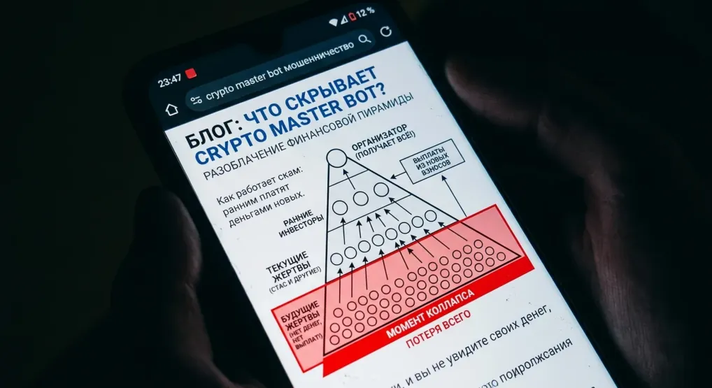
Первая ссылка: «Осторожно! Новая схема мошенничества через крипто-ботов!»
Вторая: «Потерял 200К на фейковых инвестициях»
Третья: «Как я чуть не попался на крипто-скам»
Нет. Нет, нет, нет.
Открыл приложение снова. Баланс: 53 205 ₽.
Попробовал нажать «Вывести средства».
«Вывод доступен через: 6 дней 23 часа 48 минут»
Желудок сжался.
Я вернулся в Telegram. Бот прочитал сообщения, но не ответил.
Попробовал позвонить Владу Соловьёву.
— Влад, ты вкладывал деньги в крипто-бота?
— Чего? — голос Влада был сонным. — Какого бота? Стас, ты чего?
— @crypto_master_bot! Он сказал, ты вчера вложил!
— Первый раз слышу. Стас, ты че, попался на скам что ли?
Я бросил трубку.
Пятьдесят тысяч. Стримы. Подарки на день рождения. Всё. Я не прочитал игру. С самого начала.
— Стас! — голос отца гремел снизу. — Спускайся! Немедленно!
Я встал. Ноги были ватными. На экране компьютера всё ещё был открыт чат стрима.
ProGamer_47: Стасик, ты там? Чего пропал так резко?
CyberKnight228: Надеюсь, всё норм, бро?
Всё было совсем не норм.
Я взял телефон и пошёл вниз. Навстречу отцу. Навстречу позору.
Приложение показывало: 53 891 ₽.
Фейковые цифры фейковой прибыли.
А пятьдесят тысяч настоящих денег уже исчезли навсегда.
Отец говорил тихо. Это было хуже, чем если бы кричал. Сказал, что подаст заявление в полицию — и подал. Следователь объяснил через два дня: крипта анонимна, деньги не найдут. Пятьдесят тысяч просто исчезли. Карточку отец заблокировал в тот же вечер. Стримы запретил. Про хоккей не сказал ничего — и это молчание давило сильнее любых слов.
Конец главы 3
[Даша. Четверг, 10 октября]
Три дня я пыталась разобраться сама. Гуглила «@digital_friend_bot», искала на форумах, писала в один паблик про кибербезопасность — без ответа. К четвергу стало ясно: в одиночку не выйдет. Нужен кто-то, кто понимает в этом больше меня.
Мама всё-таки спросила — во вторник вечером, мельком, не отрываясь от готовки: «Даша, что за списание на пятьсот рублей, RobuxShop?»
— Опять эти обновления в игре, — сказала я. — Разберусь, чтобы больше ничего не списывали.
Мама кивнула и больше не спрашивала. Получилось легко — легче, чем я готовилась. От этого стало не спокойнее, а как-то тревожнее: как будто просто отложила разговор, а не закрыла его.
На подходе к школе поняла, что что-то не так.
Обычно у входа толпится народ — кто-то курит за углом (думают, учителя не видят), кто-то обсуждает домашку, кто-то просто тупит в телефоны. Нормальное утро четверга.
Но сегодня все стояли кучками и шептались. Телефоны светились в руках, головы склонялись к экранам. И главное — тишина. Не мёртвая, а такая… напряжённая.
— Даш! — Катя подбежала ко мне, глаза круглые. — Ты видела?
— Что видела?
Она сунула мне телефон. Общий чат класса. Я пролистала вверх и…
Замерла.
Фотографии. Юля Соколова в ванной, явно снимала себя для какого-то приложения с фильтрами. Ничего такого — просто селфи в зеркале, но она была в одном полотенце. И ещё скрины её переписок с какими-то мальчиками. Личные. Очень личные.
— Это… — я не могла подобрать слов. — Кто это выложил?
— Никто не знает. Появилось ночью с левого аккаунта. Юля даже в школу не пришла. Мама позвонила, сказала — заболела.
Внутри всё оборвалось. Три дня назад мы с Катей переживали из-за трёх тысяч, думали — это худшее, что может случиться. Деньги можно как-то вернуть, родителям объяснить. А теперь…
Теперь я смотрела на чужое унижение, размноженное по телефонам всей школы.
— Удалите это! — вырвалось у меня.
— Уже скринили все, — Катя покачала головой. — Бесполезно.
Я открыла чат и нажала «пожаловаться». Потом ещё раз. И ещё. Пальцы дрожали. Как будто это могло что-то изменить.
На первом уроке никто не слушал. Даже Марина Павловна, наша русичка, заметила:
— Что с вами сегодня? Как будто на похоронах.
Никто не ответил. Все знали. И все молчали.
На перемене я нашла Артёма в кабинете информатики. Он был единственным человеком, которому я доверяла в вопросах всего, что связано с техникой. Мы дружили с пятого класса, и за это время я ни разу не пожалела, что он рядом. Артём сидел за компьютером, как обычно, и что-то печатал. Очки сползли на нос, он машинально поправил их, когда я вошла.
— Слышал про Юлю? — спросила я без предисловий.
Артём кивнул, не отрываясь от экрана.
— Статистически, подобные утечки происходят в семидесяти процентах случаев через фейковые приложения для обработки фото.
— Артём! — я хлопнула ладонью по столу. — Живой человек пострадал! Можешь без своей статистики?
Он замер. Пальцы зависли над клавиатурой. Потом медленно повернулся, и я увидела, что глаза за стёклами очков блестят.
— Извини. — Голос дрогнул. — Я просто… если думать через цифры, не так страшно. Если превратить всё в задачу, можно найти решение. А если думать, что это Юля, которая сидит за третьей партой и всегда даёт списать биологию… тогда я просто не знаю, что делать.
Я выдохнула и села рядом.
— Понимаю.
Какое-то время мы помолчали.
— Мне нужна твоя помощь, — сказала я, наконец. — Помнишь бота, про которого я рассказывала?
— @digital_friend_bot, — он кивнул. — Который списал деньги с твоей карты.
— Да. И вот что не даёт покоя — как он вообще мне написал? Я же ничего не делала. Просто поставила программу для скинов, и всё.
Артём на секунду задумался.
— Похоже, дело не только в логине. Такие программы часто тащат за собой вторую, скрытую — она и лезет знакомиться с ботами сама, без тебя. Поэтому он и знал твоё имя.
— Да. Так вот, мне кажется… — я понизила голос. — Мне кажется, это связано. Юля тоже использовала какого-то бота. Для улучшения фоток.
Артём нахмурился.
— Ты уверена?
— Нет. Но я слышала, как девчонки обсуждали. Типа Юля хвасталась каким-то крутым фильтром, который делает кожу идеальной. Бесплатно.
— Бесплатно, — повторил Артём с таким выражением, будто я сказала ругательство. — Даш, запомни раз и навсегда: если продукт бесплатный, значит, товар — это ты.
— В смысле?
Он развернул монитор так, чтобы я видела.
— Смотри. Когда ты загружаешь фото в приложение, ты отдаёшь не просто картинку. Каждое фото содержит метаданные. — Он открыл какую-то программу и загрузил фотографию с рабочего стола. — Вот, например. Видишь?
На экране появился список. Дата съёмки. Время. Модель телефона. И… координаты?
— Это что, адрес? — я вытаращилась.
— Геолокация. — Артём ткнул пальцем в экран. — Если не отключить в настройках камеры, каждое фото сохраняет место, где оно было сделано. С точностью до нескольких метров.
Меня бросило в холод.
Я снимала селфи дома почти каждый день — в своей комнате, где на стене висит постер с любимой группой, на кухне у окна, откуда видна детская площадка напротив, и даже в ванной, когда проверяла, не вылез ли прыщ на носу.
— То есть… — я сглотнула. — Любой может узнать, где я живу? Просто из фотки?
— Если ты отправишь фото с метаданными — да. И это ещё не всё.
Телефон в моём кармане вдруг показался тяжёлым. Опасным.
— И это не только фото, — сказал Артём. — Любое приложение при установке просит доступ — к камере, к контактам, к микрофону. Иногда безо всякой на то причины.
— Зачем фильтру для лица мои контакты? — не поняла я.
Артём посмотрел на меня — не как на первоклашку, скорее грустно. Как будто сам не хотел мне это говорить.
— Чтобы потом написать твоим друзьям от твоего имени. Или продать базу данных. Или…
— Или шантажировать, — закончила я. — Или просто слить в чат — как Юлю.
Он кивнул.
Я достала телефон. Руки противно дрожали, когда я лезла в настройки.
Приложения. Разрешения.
Roblox — доступ к камере, микрофону, галерее. Ладно, это логично, там аватарки делаешь.
TikTok — камера, микрофон, галерея, контакты… И тут мой взгляд споткнулся о строчку внизу. Геолокация. Постойте. Зачем танцевальному приложению постоянно знать, где я нахожусь?
Telegram — почти всё. Ну ладно, это мессенджер, тут понятно…
А вот это что?
GlowUp. Я даже не помнила, как установила это приложение. Пользовалась им один раз, месяца три назад. А оно висит в списке. И у него доступ… ко всему. Вообще ко всему.
— Артём, — я ткнула пальцем в строчку с GlowUp и протянула ему телефон. — Вот это. Я боюсь, что права.
Он глянул туда, куда я показала. Нахмурился.
— Права, — сказал он. — Удаляй немедленно. Оно работает в фоне. Даже когда ты его не используешь. Собирает данные и отправляет на свои серверы.
— Но я же не разрешала!
Артём показал мне экран с длинным текстом мелким шрифтом.
— Вот тут. При установке. «Для корректной работы приложению требуется доступ к…» — он посмотрел на меня. — Ты это читала?
Нет. Конечно, нет. Там было штук двадцать строчек. Кто это читает?
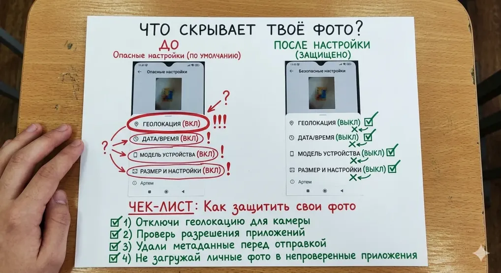
— Знаешь, что самое страшное? — Артём вернул мне телефон. — Мы носим с собой устройство, которое знает, где мы, с кем общаемся, что фотографируем, что ищем в интернете. И мы сами даём разрешение всё это собирать. Просто тыкаем «принять», не думая.
Я успела долистать список только до середины, когда динамик над дверью захрипел:
— Внимание! Всем учащимся восьмых классов немедленно собраться в актовом зале. Повторяю…
Мы переглянулись.
— Началось, — сказал Артём тихо.
В актовом зале было душно и тихо. Директриса Елена Викторовна стояла на сцене, скрестив руки на груди. Рядом — завуч и какой-то мужчина в костюме, которого я раньше не видела.
— Садитесь, — голос директрисы резанул воздух. — Быстро.
Мы расселись. Артём опустился на место рядом со мной.
— Я не буду ходить вокруг да около. — Елена Викторовна обвела нас взглядом. — Сегодня ночью произошёл инцидент. Личные фотографии одной из учениц оказались в общем доступе.
Шёпот пробежал по рядам. Директриса подняла руку, и все замолчали.
— Мы выясняем, кто это сделал. И виновный будет наказан. Но! — она повысила голос, и я почувствовала, как напряглась. — Этого бы не случилось, если бы вы соблюдали элементарные правила безопасности!
Что?
— Сколько раз вам говорили: не фотографируйтесь в непристойном виде! — Директриса буквально отчитывала нас. — Не отправляйте личные снимки! Не доверяйте незнакомым приложениям! Если бы Юля… то есть если бы пострадавшая ученица не вела себя безответственно, ничего бы не произошло!
Внутри что-то вскипело. Рука Артёма коснулась моего плеча — мол, спокойно. Он знал, что я сейчас могу сорваться.
Но я сидела и смотрела на директрису. И думала: это всё, на что вы способны? Обвинить жертву? Вариант первый: не знала, как по-другому. Вариант второй: знала — и выбрала, что попроще. Хоть один из них — оправдание?
Юля сидела дома. Наверное, плакала. Боялась выходить из комнаты. А её тут публично позорят. Она «вела себя безответственно». Как будто это она виновата, что какой-то урод украл её фотки и выложил на всеобщее обозрение.
— Поэтому, — продолжала Елена Викторовна, — чтобы больше никаких снимков, никаких видео с уроков, никаких поводов — с сегодняшнего дня телефоны на уроках только с разрешения учителя. Без исключений. Достал без спроса — телефон до конца дня у классного руководителя.
Возмущённый гул прокатился по залу.
— Почему страдают все?! — крикнул кто-то сзади.
— Потому что мы пока не знаем, кто виноват, — отрезала Елена Викторовна. — Всё. Свободны.
Я наклонилась к Артёму:
— Они серьёзно? Наказывают всех за то, что кто-то взломал Юлю?
— Запретить проще, чем разобраться. — Он пожал плечами, но я видела, как сжались его кулаки. — Типичная реакция.
После линейки все толпились у выхода. Настроение было мрачное. Кто-то возмущался, кто-то обсуждал, как теперь списывать без телефонов, кто-то уже прикидывал, как обойти запрет через записки или условные знаки — обычная суета из мелких, решаемых за один вечер проблем.
Я стояла и думала не об этом.
В понедельник после тренировки мы с девочками договорились: два дня разбираемся сами, потом идём к родителям. Прошло три. Каждое утро я думала: сегодня расскажу маме. Потом случалось что-то новое — и я думала: вот завтра, когда разберусь. Завтра превращалось в послезавтра. Так, наверное, и работает молчание. Не решаешь молчать — просто каждый раз находится причина подождать ещё немного.
— Эй! — резкий голос прорезал гул.
Я обернулась.
Вика Морозова стояла, уперев руки в боки. Рядом Настя и ещё пара девочек. Обычно Вика была центром любой драмы — громкая, яркая, всегда в курсе всех сплетен. Но сейчас в её глазах я увидела что-то другое. Злость. И страх.
— А чего это Беляев такой тихий сидел? — Вика смотрела прямо на Артёма. — Обычно умничает на каждом углу, а тут — молчок.
Артём замер.
— Я не понимаю, о чём ты, — сказал он тихо.
— Да ладно! — Вика шагнула ближе. — Все знают, что ты у нас главный компьютерщик. Взломать чей-то телефон для тебя — раз плюнуть.
— Это не так работает…
— А как работает? — Вика перебила. — Расскажи! Ты же всё знаешь про эти ваши… хакерские штучки.
Вокруг начали собираться люди, и я видела, как бледнеет Артём.
— Вика, хватит. — Я встала между ними. — Артём ничего не делал.
— А ты откуда знаешь? — Голос Вики дрогнул. — В прошлом году у меня Telegram взломали. Поменяли пароль, я месяц не могла войти. А потом оказалось, что кто-то писал всякую дичь от моего имени.
— Мне потом объяснили… там была какая-то — программа-загрузчик, так это называется. Сначала ставишь одно, а она тянет за собой другое.
Артём чуть заметно нахмурился — но я тогда не обратила внимания.
— И знаешь, что мне тогда сказали? «Сама виновата, надо было сложный пароль поставить». Как будто я специально…
Она осеклась. В глазах блеснули слёзы, но Вика быстро моргнула.
— Так вот. — Она снова посмотрела на Артёма. — Может, это был ты? Ты же можешь такое провернуть.
— Я не… — Артём запнулся. — Я бы никогда…
— Вы же всегда вместе, — вступила Настя. — Может, вы вдвоём это придумали?
Ещё секунду назад я была готова защищать Артёма. Но вдруг в голове проскользнула мысль: а точно ли я его знаю? Мы дружим с пятого класса, но… технически он действительно мог бы. У него знания. Доступ к компьютерам.
Я посмотрела на Артёма. И увидела, как он смотрит на меня. Просто смотрит. Ждёт.
— Нет. — Я качнула головой. — Вы не правы.
— Откуда такая уверенность? — Вика прищурилась.
— Потому что Артём объясняет мне, как защититься от таких атак. Зачем ему взламывать людей, если он учит, как этого избежать? — Я развернулась к Артёму. — Пойдём.
Мы пошли к лестнице молча. Народ расступался. Кто-то шептался за спиной.
Завтра в пять — игра с восьмой школой. Мысль мелькнула и пропала. Тренер сказал не опаздывать. Не опоздаю.
У окна на втором этаже Артём остановился.
— Спасибо, — сказал он тихо.
— За что?
— За то, что не усомнилась. — Он снял очки и протер стёкла краем футболки. Без них выглядел моложе. Уязвимее. — Я видел. Ты на секунду подумала — а вдруг это правда?
Я хотела возразить. Но не стала врать.
— На секунду, — призналась я. — Извини.
— Не извиняйся. — Он надел очки обратно. — Вика права в одном. Я мог бы это сделать. Технически. И как это доказать? Как доказать, что ты чего-то не делал? Особенно когда все уже решили…
Он не договорил. Просто смотрел в окно.
Мой телефон завибрировал в кармане. Один раз. Потом ещё. Я достала его и увидела уведомление в Telegram.
Новое сообщение от @digital_friend_bot.
Руки похолодели. Я провела пальцем по экрану.
@digital_friend_bot: Видела, что случилось с Юлей? Бедняжка. Кстати, у тебя в галерее тоже много интересного. Те фотки с пижамной вечеринки у Кати, например. Хочешь, чтобы их увидел весь класс?
Пауза. Три точки — бот набирал ещё.
@digital_friend_bot: Или будешь сотрудничать?
Телефон выскользнул из пальцев. Артём поймал его на лету.
— Даш? — Он заглянул мне в лицо. — Что там?
Я не могла говорить. Просто показала на экран.
Артём прочитал. Лицо стало белым как мел.
— Это… тот же бот?
Я кивнула.
Мы стояли в коридоре, где всегда слишком яркий свет. Внизу шумели, хлопали дверьми, кто-то смеялся. Обычная школа. Обычный четверг.
Но теперь я знала: обычного больше нет.
— Артём. — Мой голос звучал странно. Чужим. — Мне кажется, Юля — не случайная жертва. И Катя с её деньгами. И теперь я. Кто-то специально атакует нашу школу. Кто-то, кто знает нас всех.
Артём долго молчал. Смотрел на экран телефона, где мигал курсор в ожидании ответа.
— Тогда нам нужно выяснить, кто это, — сказал он, наконец. — Пока он не добрался до кого-то ещё.
Телефон снова завибрировал.
@digital_friend_bot: Жду ответа. У тебя есть 24 часа, чтобы подумать.
Конец главы 4
[Артём. Пятница, 11 октября]
Когда дверь кабинета информатики открылась и завуч произнесла моё имя, я понял: что-то случилось.
— Беляев, к директору. Срочно.
Двадцать три пары глаз уставились на меня. Кто-то хихикнул. Вика Морозова, сидевшая у окна, даже не пыталась скрыть торжествующую улыбку.
Я встал, машинально поправил очки — ноги казались ватными.
По дороге к кабинету директора я пытался вспомнить, что мог натворить. Домашку сдал вовремя. На уроках не разговаривал. В школьную сеть не лазил с прошлого года — после того случая с принтером, который я «починил» без разрешения.
А потом я увидел машину у входа. Белую, с синей полосой.
Полиция.
Список того, что я мог натворить, вдруг исчез из головы целиком — а мгновение назад я был уверен, что помню каждый пункт.
В приёмной сидела секретарша и делала вид, что не смотрит на меня. Дверь в кабинет директора была приоткрыта, оттуда доносились голоса.
— …технические навыки, это очевидно, — говорила Елена Викторовна. — Весь класс знает, что он у нас главный компьютерщик.
— Технические навыки — это не доказательство вины, — ответил мужской голос. Спокойный, низкий. — Иначе пришлось бы арестовать половину IT-отрасли страны.
Я постучал. Пальцы дрожали.
— Входи, Беляев.
Кабинет директора я знал хорошо — бывал здесь после истории с принтером. Массивный стол, портрет президента, шкаф с кубками за спортивные достижения школы.
Но сегодня за столом сидела не только Елена Викторовна.
Мужчина лет сорока в строгом костюме поднялся мне навстречу. Короткая стрижка, внимательный взгляд, усталые глаза. Под пиджаком угадывались широкие плечи — явно не кабинетный работник.
— Артём Беляев? — Он протянул руку. — Майор Островский, Игорь Владимирович, управление «К». Присаживайся.
Управление «К». Киберполиция.
Я пожал его руку — ладонь была сухой и твёрдой — и сел на стул напротив. Спина прямая, руки на коленях. Папа всегда говорил: если нервничаешь, контролируй тело. Тело контролирует — разум следует.
— Ты знаешь, почему я здесь? — спросил майор.
— Догадываюсь. — Голос звучал ровнее, чем я ожидал. — Из-за атак на школу. Утечка фотографий, мошенничество с деньгами.
Он кивнул, не отводя взгляда.
— Расскажи мне о своих технических навыках.
Я сглотнул.
— Программирую на Python и JavaScript. Немного знаю C++. Интересуюсь кибербезопасностью. Читаю статьи, смотрю видео, иногда решаю задачки на специальных платформах.
— CTF-соревнования?
— Да. Capture The Flag. Это легальные хакерские турниры, где нужно находить уязвимости в тестовых системах.
Майор что-то записал в блокнот.
— Впечатляет для четырнадцатилетнего. Где научился?
— Папа программист. Он меня учит с десяти лет.
Елена Викторовна поджала губы. Я знал, что она думает: вот оно, доказательство. Мальчик слишком умный, слишком много знает. Наверняка он.
Но майор не торопился с выводами.
— Артём, я задам тебе несколько вопросов. Отвечай честно. Если не знаешь — так и скажи. Если не хочешь отвечать без родителей — тоже твоё право. Понял?
— Понял, — сказал я.
— Где ты был в среду вечером, примерно с восьми до одиннадцати?
— Дома, наверное. А что тогда случилось?
Майор помолчал секунду — как будто прикидывал, сколько можно сказать.
— В этот вечер один из учеников школы перевёл крупную сумму на мошеннический крипто-кошелёк. Похоже на часть той же схемы. Поэтому спрашиваю всех про этот конкретный вечер.
Значит, ещё кто-то попался — как Юля с фотографиями и как Катя с деньгами.
— Дома. Делал уроки, потом… — я запнулся. Потом играл в MMORPG под ником Shadowbyte. Притворялся двадцатилетним студентом. Врал людям о своём возрасте.
— Потом? — Майор смотрел выжидающе.
— Потом сидел в интернете. Играл.
— Во что?
Я ответил не сразу — пауза вышла на полсекунды длиннее, чем должна была быть.
— В онлайн-игру. Стратегию.
Технически не ложь. MMORPG — тоже своего рода стратегия. Просто… не вся правда.
— Кто-то может подтвердить?
— Родители были дома. И… — я замялся. — Есть логи. Игровые серверы записывают, когда игрок заходит и выходит. С какого IP-адреса.
Майор поднял бровь.
— Ты знаешь про логи и IP-адреса?
— Это базовые вещи. Каждое действие в интернете оставляет след. Время, место, устройство. Если бы я хотел совершить кибератаку, я бы точно не делал это с домашнего компьютера. Это… — я поискал слово, — непрофессионально.
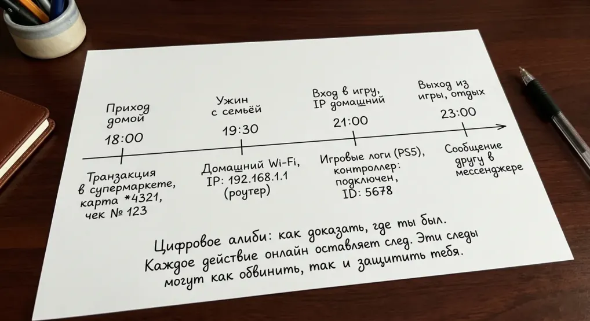
Елена Викторовна фыркнула.
— Вот видите! Он знает, как скрыть следы!
— Он знает, как работает система, — поправил майор. — Это не одно и то же.
Он повернулся ко мне.
— Артём, ты когда-нибудь получал доступ к школьной сети без разрешения?
Вот оно. Момент истины.
— Один раз. В прошлом году. Принтер в кабинете информатики завис, а учитель не мог его перезагрузить удалённо. Я зашёл в панель управления и исправил. Меня потом вызывали к директору.
— И что было?
— Предупреждение. Сказали, что даже с хорошими намерениями нельзя лезть в чужие системы без разрешения.
Майор кивнул — что-то в его взгляде изменилось — не знаю, что именно, но напряжение чуть спало.
— Хорошо, что ты это понимаешь. Многие взрослые не понимают.
Он закрыл блокнот.
— Последний вопрос. Ты знаешь, кто мог бы совершить эти атаки?
Я задумался. По-настоящему задумался, не для вида.
— Кто-то, кто хорошо знает школу. Знает учеников, их привычки, слабости. — Я посмотрел майору в глаза. — Бот использует личную информацию. Знает, кто с кем дружит, кто чего боится. Это не случайный хакер из интернета. Это кто-то… близкий.
Майор долго смотрел на меня. Потом медленно кивнул.
— Спасибо, Артём. Ты свободен. Пока.
Я уже встал, когда дверь распахнулась.
— Артём ничего не делал!
Даша. Конечно, Даша.
Она влетела в кабинет, игнорируя возмущённый возглас секретарши. Волосы растрёпаны, щёки красные. В глазах — тот огонь, который я видел, когда она защищала меня от Стаса в шестом классе.
— Козлова! — Елена Викторовна вскочила. — Как ты смеешь врываться!
— Артём не хакер! — Даша не обратила на неё внимания. — Он мне помогал! Объяснял, как защититься от бота! Зачем ему это делать, если он сам его создал?
Майор поднял руку.
— Спокойно. Как тебя зовут?
— Даша. Дарья Козлова. Я… — она запнулась,— Вы из полиции?
— Майор Островский. И я ни в чем не обвиняю твоего друга. Мы просто разговаривали.
Даша перевела взгляд на меня, и я кивнул — всё в порядке.
— Я видела, как его увели. Весь класс видел. Вика сразу начала шептаться, что его арестовали…
Майор встал и подошёл к нам.
— Дарья, у тебя тоже были проблемы с этим ботом?
Даша замерла. Я видел, как она колеблется. Рассказать — значит признать, что и она жертва. Что тоже облажалась.
— Да, — сказала она, наконец. — С меня списали деньги. И… он мне угрожает.
— Угрожает чем?
Пауза.
— Фотографиями. Личными.
Майор кивнул. Без осуждения, без «а зачем ты их делала». Просто принял информацию.
— Ты сохранила переписку?
— Да. Скриншоты.
— Хорошо. Это важно. — Он достал визитку. — Вот мой номер. Если получишь новые сообщения — сразу мне. Не отвечай, не удаляй. Просто сохрани и позвони.
— А если просто заблокировать? — спросила Даша.
— В обычной ситуации — правильное решение, — сказал майор. — Но у вас сейчас другой случай: идёт расследование, а он не первый раз меняет аккаунты — у вас в школе минимум два разных бота. Заблокируешь — просто напишет с нового. А переписка, которая у тебя есть, — единственное, что может привести нас к нему.
Даша взяла визитку. Руки у неё тоже дрожали.
Мы вышли из кабинета вместе — в коридоре было пусто, шёл урок.
— Ты как? — спросила Даша шёпотом.
— Нормально. — Я прислонился к стене, закрыл глаза. — Спасибо, что пришла. Хотя это было безрассудно.
— Это было правильно.
Я усмехнулся. Типичная Даша.
— Майор вроде нормальный, — сказала она задумчиво. — Не такой, как я думала.
— Что ты думала?
— Ну, что он будет орать и обвинять. Как в фильмах.
— Он профессионал. Профессионалы не орут. Они слушают.
Мы помолчали.
— Артём, — Даша понизила голос. — Бот дал мне двадцать четыре часа. Время почти вышло. Что мне делать?
Я открыл глаза.
— Ничего. Не отвечай. Шантажисты питаются страхом. Если ты реагируешь — они знают, что крючок работает. Если молчишь — им приходится придумывать новые способы давления.
— А если он выложит фотки?
— Тогда мы будем разбираться. Вместе. Но скорее всего — не выложит. Пока ты потенциальная жертва, у него есть рычаг. Как только он его использует — рычага больше нет. — Я помедлил. — Только это не значит, что можно расслабиться и ждать. Если что-то появится — сразу мне или майору. Не решай сама, обошлось или нет.
Даша кивнула, но я видел — она не до конца убеждена.
— Пойдём обратно, — сказал я. — Урок ещё не кончился.
— Вика наверняка уже всем рассказала, что тебя увезли в наручниках.
— Тогда ей будет интересно увидеть меня живым и свободным.
Даша фыркнула. Почти улыбнулась.
Экран её телефона засветился — входящий. Она сбросила, едва взглянув на имя.
— Тренер? — спросил я.
— Угу. — Она убрала телефон в карман. — Потом.
Мы вернулись в кабинет информатики вместе. Учитель только покосился на нас, но ничего не сказал — видимо, завуч предупредила. Я сел за свой компьютер. Даша — за свой, через два ряда. Вика уставилась на меня так, будто увидела призрака.
На третьей парте у окна сидела Лиза Абрамова — новенькая, рыжая, всегда со скетчбуком. Она смотрела в телефон с таким лицом, с каким смотрят, когда очень хотят кому-то написать, но не решаются. Даша говорила мне во вторник, что та просила о встрече. Видимо, до сих пор ждёт.
Учитель что-то объяснял про электронные таблицы, но я не слушал.
В голове крутилось одно: логи.
Майор спросил про алиби. Я сказал, что есть логи. И они действительно есть. Игровые серверы фиксируют каждый вход, каждый выход, каждое действие. Если полиция запросит данные — они увидят, что аккаунт Shadowbyte был активен в моменты атак.
Но они также увидят, что Shadowbyte — это якобы двадцатилетний студент-программист из Москвы.
А не четырнадцатилетний школьник из провинции.
Я создал этот аккаунт два года назад. Мне было двенадцать, и меня никто не воспринимал всерьёз. «Маленький», «ботаник», «иди уроки делай». В игре я мог быть кем угодно. Взрослым. Уверенным. Лидером гильдии, которого уважают.
Я не делал ничего плохого. Не обманывал людей ради денег. Просто… притворялся. Исследовал, каково это — быть другим.
Но попробуй объяснить это полиции. Или родителям. Или Даше.
«Ты врал людям о своём возрасте? Два года?»
Звучит ужасно. Даже если намерения были безобидными.
Телефон завибрировал в кармане. Я вытащил его под партой, прикрывая рукой.
Telegram. Неизвестный аккаунт без аватарки.
Сообщение.
«Привет, Shadowbyte.»
Я перечитал эти слова три раза, прежде чем осознал, что читаю их в четвёртый.
«Интересный разговор у тебя был с майором. Про логи, про IP-адреса. Умный мальчик.»
Я оглянулся. Класс как класс. Все смотрят на доску или в свои экраны. Никто не смотрит на меня.
Новое сообщение.
«Но ты кое-что забыл упомянуть, правда? Например, что лидер гильдии «Тёмный Альянс» — не двадцатилетний студент, а восьмиклассник, который врёт о своём возрасте уже два года».
Пальцы онемели. Телефон чуть не выскользнул из рук.
«Интересно, что скажет майор Островский, когда узнает? Или твои друзья по гильдии? Или… Даша?»
Пауза. Три точки — кто-то печатает.
«Врать нехорошо, Артём. Особенно тем, кто тебе доверяет. Но не переживай. Твой секрет в безопасности. Пока ты не лезешь, куда не просят».
И в конце — эмодзи.
👻
Он знает. Знает про Shadowbyte. Знает про гильдию. Знает, что я врал.
Откуда? Как?
Я всегда был осторожен. VPN, отдельная почта, никаких реальных данных. Даже фото нигде не выкладывал.
Но он нашёл. Как-то связал точки. Вычислил.
И теперь у него есть рычаг.
Учитель что-то спросил. Я ответил машинально — не помню что. Класс засмеялся. Наверное, я сказал глупость.
Неважно.
Важно другое.
Призрак следит за мной. Следит за всеми нами. Знает наши секреты, наши страхи, наши слабости.
И использует их как оружие.
Звонок. Урок закончился.
Я встал, машинально собирая вещи — руки всё ещё дрожали.
— Эй. — Даша возникла рядом. — Ты весь белый. Что случилось?
Я посмотрел на неё. На Вику, которая демонстративно прошла мимо, задев меня плечом. На одноклассников, которые шептались и косились в нашу сторону.
— Не здесь, — сказал я тихо. — После уроков. Нужно поговорить.
— О чём?
Я помедлил. В кармане лежал телефон с сообщением от Призрака. С угрозой, которая могла разрушить всё.
— О том, кто я на самом деле.
Даша нахмурилась. Но спорить не стала.
Может, стоит начать не с признания всем. А с одного человека, которому доверяешь больше других.
Конец главы 5
Цифровые следы
Неделя вторая · 14–18 октября[Лиза. Понедельник, 14 октября]
Я нашла его в понедельник утром — у расписания на первом этаже, где всегда толпились восьмые классы перед первым уроком.
Миша Крылов из 8-А. Я узнала его сразу — серая толстовка, наушники на шее, чёлка, которую он отбрасывал назад одним и тем же движением. Я видела его от силы раз в неделю — в столовой или вот так, в коридоре. Мы никогда не разговаривали.
После вторника я не знала, что ему писать. Он присылал сообщения как обычно — про рисунки, про школу, — а я смотрела на экран и не могла заставить себя ответить. Не потому, что решила так. Просто слова не шли. В пятницу после уроков меня поймала Даша — буквально на пять минут, у раздевалки. «Прости, что не смогла раньше, — сказала она сначала, — эти дни сумасшедшие». Потом выслушала, нахмурилась и сказала: «В понедельник подойди к настоящему Мише лично. Пока не сделаешь этого — не отвечай ничего». Я так и сделала. В пятницу вечером он написал: «Ты куда пропала?» Я открыла сообщение, закрыла и убрала телефон. В воскресенье написал снова — что скучает, что хочет увидеть новые рисунки. Я не ответила и на это.
Я смотрела на него со спины. Тот Миша, который писал мне, знал, что я не люблю математику. Говорил, что у меня настоящий талант. Помнил детали. Этот стоял вполоборота к стенду и листал телефон — отдельный, чужой, никакой.
Я подошла.
— Привет, — сказала я.
Он поднял глаза. Удивлённый — не так, будто ждал разговора. По-настоящему удивлённый, как удивляются, когда незнакомый человек вдруг обращается по имени.
— Привет?
— Ты мне написал. В Telegram. Три недели назад.
Он нахмурился.
— Я тебе не писал.
Три слова. Не «я забыл», не «ты ошиблась», не «наверное, перепутала». Просто — не писал. Так говорят, когда это правда.
Пальцы соскальзывали с экрана, будто он вдруг стал скользким. Я показала ему телефон — нашу переписку. Четыре сотни сообщений. Три недели жизни.
Он смотрел молча секунд десять.
— Это не я, — сказал он, наконец. — Фото моё, аватарка моя, но я такого не писал. Вообще ничего не писал.
— Откуда тогда…
— Не знаю. — Он побледнел. — Кто-то использовал мои фотки?
Я кивнула. Горло пересохло.
Вот так.
Две недели я думала, что у меня есть друг. И ещё одну — боялась, что ошиблась. Но всё равно верила.
На большой перемене я нашла Дашу.
Я не писала ей больше после того вторника — не хотела навязываться, тем более что и сама она всю неделю выглядела дёрганой, будто своих забот хватало с головой. В пятницу у нас было пять минут — между её разговором с Артёмом и автобусом. Я успела сказать главное: почти три недели общения, имя Миши, странная история с котом, которого я не рисовала. Что, может быть, это не он. Даша сказала: «Сначала проверь лично, потом разберёмся». Вот я и проверила.
Теперь она стояла у окна в конце коридора и смотрела в телефон — нахмуренная, с тем выражением, которое у неё бывает, когда что-то идёт не так. Рядом не было никого.
— Даша.
Она подняла голову.
— Ну? — спросила она сразу. — Говорила с ним?
— Да. — У меня пересохло в горле. — Это не он, то есть — он понятия не имеет ни о какой переписке.
Даша сунула телефон в карман.
— Тогда рассказывай всё. Подробно.
Я рассказала ей остальное. Быстро, сбивчиво — про арт-группу в ВК, про первое сообщение с комплиментом, про то, как «Миша» хвалил мои рисунки и советовал бота для «улучшения арт-скиллов». Про фотографии работ. И — это было самое трудное — про селфи, где на заднем плане видна библиотека и школьный двор за окном.
Даша слушала. Не перебивала, не ахала, не закатывала глаза.
— Лиза. — Она взяла меня за руку. Крепко. — Ты не виновата. Слышишь? Они специально так делают.
— Но я же должна была…
— Нет. Ты не должна была знать. Это их работа — чтобы было не видно.
Я кивнула. Не потому что поверила. Просто потому, что надо было хоть как-то ответить.
Артём появился через пару минут — будто почувствовал. Увидел нас, замедлил шаг, подошёл.
— Что случилось?
— Лизу, кажется, кэтфишили, — сказала Даша. Она явно знала это слово.
— Покажи переписку, — сказал Артём мне.
Я протянула телефон. Он листал молча, поправляя очки. Читал быстро, иногда возвращался назад.
— Аватарка — фото реального Миши Крылова?
— Да. Я только что с ним разговаривала — точно он.
— Угу. — Артём листал дальше. — Смотри. Вот здесь — спрашивает, когда ты обычно в библиотеке. Вот — одна ли рисуешь или с кем-то. Вот — во сколько домой уходишь. Это не случайные вопросы.
Я посмотрела на экран. Три разных момента, три разные беседы. По отдельности — просто разговор. Вместе — он знал, когда я одна и где меня найти.
— Он следил за мной, — сказала я. Слова вышли тихо.
— Не следил физически. Но составлял картину. — Артём опустил телефон. — Знал твой распорядок лучше, чем ты сама думала.
Я представила это не списком вопросов, а рисунком. Библиотека — один мазок. «Одна или с кем-то» — второй. Во сколько домой — третий. По отдельности каждый ничего не значил, как отдельный штрих не значит ничего на пустом листе. Вместе они складывались в портрет человека, которого я сама так подробно никогда не разглядывала.
— Он собирал меня по кусочкам, — сказала я.
Артём не ответил сразу.
— Да, — сказал он, наконец. — Методично.
— Это тот же, кто делал бота?
Артём и Даша переглянулись.
— Скорее всего, — сказал Артём. — Схема похожа. Сначала войти в доверие, потом подтолкнуть к боту. Ты шла к боту через доверие к «другу». Это называется социальная инженерия.
Слова прошли мимо — я всё ещё пыталась уместить в голове: человека, каким я его знала две недели, попросту не было.
— Бот с тех пор молчит, — сказала я. — «Миша» написал, что не хочешь — не надо.
— Потому что у него была конкретная задача — получить твой адрес и телефоны родителей, — сказал Артём. — Ты форму не заполнила. Задача провалена. Давить дальше — только лишний риск засветиться.
— И что мне теперь делать?
— Для начала — не отвечать, — сказал Артём. — Потом посмотрим, что там за аккаунт. Может, сможем отследить.
Артём взял мой телефон, открыл Telegram, нашёл аккаунт «Миши».
— Смотри. Имя пользователя — «Миша Крылов». Создан в конце сентября — видно по номеру в системе. Аватарка есть, но больше ничего: ни описания, ни общих групп, ни истории. — Он повернул экран ко мне. — А теперь сюда.
Он открыл ВК у себя в телефоне, нашёл настоящего Мишу Крылова за тридцать секунд. Профиль с 2021 года, записи, комментарии, восемь общих знакомых из школы.
— Вот откуда взяли фотку. — Артём поставил оба экрана рядом. — Один и тот же снимок. Скопировали с настоящего ВК и сделали Telegram-аккаунт. Человек реальный — аккаунт фейковый. Стандартная схема.
— Я должна была проверить, — сказала я.
— Ты должна была? — Даша чуть повысила голос. — Лиза, когда кто-то пишет тебе из арт-группы и хвалит рисунки, ты же не думаешь первым делом: «Надо проверить, настоящий ли он».
— Нет, но…
— Именно так они и работают. На доверии. На том, что людям хочется, чтобы их видели.
Хочется, чтобы их видели.
Да. Именно этого я хотела. Три недели кто-то видел мои рисунки и говорил, что они хорошие. Говорил, что у меня настоящий талант. Называл меня по имени.
И это был не человек. Это была схема.
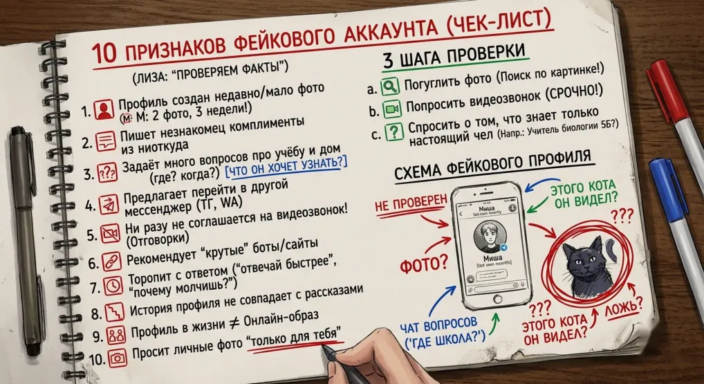
Я отвернулась к окну, чтобы не было видно, что глаза на мокром месте.
— Погодите, — сказал Артём. Он снова смотрел в мой телефон, и голос у него стал другим. — Он тебе написал сегодня утром.
— Что?
— Вот. В восемь сорок.
Я взяла телефон.
Миша Крылов: Привет! Соскучился. Слушай, мы так много общаемся онлайн, может, встретимся наконец? Я знаю одно тихое место рядом со школой. Кафе «Радуга» на Лесной, знаешь?
Миша Крылов: Сегодня после шести?
Кафе «Радуга» на Лесной. Пятнадцать минут пешком от школы. Внутри я ни разу не была, но, когда ходила из школы домой, дорога вела мимо.
— Он назначает встречу, — сказала Даша. В её голосе появился холод.
— Лиза, ты ему не отвечала? — спросил Артём.
— Нет. Я увидела только сейчас. И вообще не писала ему с прошлого вторника.
— Он видел, что ты молчишь — и всё равно написал. — Артём говорил ровно, без интонации. — Это не случайность.
— Но он же понимает, что я увижу незнакомца? — сказала я. — Не Мишу.
— Это уже вопрос к майору. — Артём посмотрел на Дашу. — Нам нужно рассказать. Это уже не просто бот. Кто-то планирует физическую встречу.
Даша кивнула. Серьёзно, без театральности.
— Майор Островский. У меня есть его визитка.
Я переводила взгляд с одного на другого.
— Вы хотите идти в полицию?
— Ты, — сказала Даша. — Не «мы». Это твоя история.
Честный вопрос. Я знала все причины, по которым это плохая идея. Бабушка узнает. Родители позвонят с Севера. Все в школе будут знать. Снова всё то же самое, как в прошлый раз — косые взгляды, шёпот за спиной.
Но в прошлый раз я молчала восемь месяцев.
— Да, — сказала я. — Идём.
Майор Островский приехал через сорок минут — в одиночку, без формы, на обычной машине. Я позвонила ему сама прямо с урока, выйдя в туалет. Он согласился встретиться у школы, а не в кабинете директора.
Маленькая деталь, которая мне понравилась.
Мы стояли втроём на крыльце запасного входа, пока он читал переписку. Листал молча, иногда делал паузы.
— Вы правильно поступили, что позвонили, — сказал он, наконец. — Это уже другой уровень. На встречу вы не пойдёте.
— А вы? — спросила Даша. — Устроите засаду?
Майор покачал головой.
— Нет. Тот, кто это написал, умный. Скорее всего, сам не придёт — посмотрит издалека или пришлёт кого-то проверить обстановку. Засада только спугнёт. — Пауза. — Пока он думает, что контролирует ситуацию — это нам выгодно. Продолжаем работать по аккаунту и IP-адресам.
Он посмотрел на меня.
— Вы боялись рассказывать?
— Да.
— Почему?
Я подумала. Майор ждал.
— Потому что стыдно. Что я две недели переписывалась с фейком и не заметила. Даже когда он прокололся с котом — я нашла себе объяснение. Думала: может, просто перепутал.
Он кивнул. Без осуждения.
— Знаете, сколько взрослых попадается на такое? Профессора. Юристы. Люди, которые думают, что разбираются в технологиях. Это работает на всех. Потому что рассчитано не на глупость — на доверие. — Пауза. — Это ваша сильная сторона, не слабость.
Я не знала, что ответить.
— Что теперь? — спросил Артём.
— Теперь мы посмотрим, кто стоит за этим аккаунтом. — Майор убрал телефон в карман. — И нам очень поможет, если вы не будете менять поведение онлайн. Не отвечайте на приглашение — ни да, ни нет. Пусть тот, кто за этим стоит, думает, что всё идёт по плану.
Он посмотрел на меня.
— Это вы сможете?
Я держала телефон обеими руками. Восемь сорок. «Соскучился. Встретимся?»
Тот, кто это написал, думал, что знает меня. Знал, что я одинокая. Что мне нужно внимание. Что я обрадуюсь приглашению.
Был прав насчёт всего этого.
Но сейчас рядом со мной стояли Даша и Артём. И это меняло всё.
— Смогу, — сказала я.
Домой я пошла пешком. Автобус был бы быстрее, но мне не хотелось в толпу — хотелось просто идти и молчать.
Дорога вела через Лесную. Мимо «Радуги». Но до назначенной встречи оставалось ещё несколько часов — можно было не бояться, что там уже кто-то меня ждёт. Поэтому я не стала ждать автобус.
Когда впереди показалась вывеска, ноги сами замедлились.
Обычное кафе. Стеклянная витрина, внутри двое или трое за столиками, оранжевый свет. Место, где мне назначил встречу «Миша», которого не существует.
Я не перешла дорогу. Остановилась на своей стороне, у аптеки, и просто смотрела.
На той стороне, недалеко от входа, стоял человек. Не заходил внутрь. Не ждал автобус — остановка была дальше. Просто стоял у стены, руки в карманах, и смотрел на кафе. Капюшон был накинут, но не по погоде — дождя не было. Молодой, наверное. Не школьник, но и не взрослый по-настоящему — что-то между.
Он не двигался. И я вдруг вспомнила слова майора: «Скорее всего, сам не придёт — посмотрит издалека».
Сердце стукнуло сильнее.
Я достала телефон — не звонить, просто чтобы руки были заняты, — а когда снова подняла глаза, у стены никого не было. Ни справа, ни слева по улице. Просто пусто.
Показалось, сказала я себе. Мало ли кто стоит у кафе.
Но всю дорогу до дома я оборачивалась.
Вечером бабушка спросила, как прошёл день.
Я сказала — нормально. Потом помолчала. Потом добавила:
— Баб, а ты знаешь, что такое кэтфишинг?
Она подняла глаза от вязания.
— Кэт… что?
— Это когда кто-то в интернете притворяется другим человеком. Берёт чужие фотографии и пишет от чужого имени.
— Зачем?
— Чтобы узнать что-нибудь. Или чтобы встретиться потом.
Бабушка помолчала. Спицы замерли.
— Лизонька, с тобой такое случилось?
Я кивнула.
Она не сказала «как ты могла». Не сказала «я же говорила». Просто встала, подошла и обняла меня — так, как обнимают только когда на самом деле переживают, а не когда хотят казаться хорошими.
— Ты рассказала взрослым?
— Да. Мы позвонили в полицию.
— Молодец, — сказала она. Просто. Без лекции.
Я сидела в её объятиях и думала, что в прошлый раз не рассказала никому восемь месяцев. Что если бы рассказала раньше — всё могло бы быть иначе.
Бабушкины руки пахли шерстью и валерьянкой — тем же, чем пахли всегда, сколько я себя помню.
Конец главы 6
[Стас. Вторник, 15 октября]
Вторник начался нормально.
Это потом я понял, что «нормально» — это не когда всё хорошо, а когда ты ещё не знаешь, что всё плохо.
На первом уроке я сидел на своём обычном месте у окна и пялился на улицу. На физике делать нечего — формулы я не понимал до кризиса, не понимаю и сейчас. Раньше это не парило: всегда можно было списать у Максима или купить решебник. Теперь карточки нет, решебники стоят денег, а Макс последнюю неделю как-то странно смотрит в сторону. Как будто слышал что-то. Или догадывается.
Отец до сих пор не сказал про хоккей.
Это хуже всего. Если бы сказал — запретил, разрешил, что угодно — я бы знал, с чем жить. А так — тишина. Завтрак молча, ужин молча, «спокойной ночи» через маму. Она старается быть между нами буфером, но буфер всё тоньше.
Пятьдесят тысяч. Следователь позвонил в пятницу: «Крипта анонимна, средства отследить невозможно». Отец выслушал и ничего не сказал — только кивнул. Было бы лучше, если бы орал.
Телефон лежал в кармане. Без карточки он стал просто камерой и мессенджером. Камеру не включал — зачем, если стримить нельзя. ПроГеймер47 написал во вторник: «Стас, ты куда пропал?» Я ответил: «Всё норм, скоро вернусь». Это была ложь, но красивая.
На перемене между первым и вторым уроком я вышел в коридор.
И сразу почувствовал что-то не то.
Не понял сначала — что именно. Просто ощущение, что на меня смотрят. Не так, как обычно смотрят на меня — я привык к взглядам, меня знают, я заметный. А по-другому. Две девочки из девятого что-то зашептали, когда я прошёл мимо. Рома Самойлов из параллельного достал телефон и отвернулся — слишком резко, неестественно.
— Эй, — окликнул я Максима у раздевалки. — Ты чего?
— Ничего, — Он поднял взгляд.
— Что-то случилось?
— Не знаю, — сказал он. — Сам смотри.
Он, наконец, посмотрел на меня — секунду, не больше, — и пошёл на урок. Я достал телефон.
Уведомлений было двадцать три.
Видео пришло из семи разных источников одновременно.
Первым открыл от Никиты Орлова — мы вместе играем в хоккей, он не стал бы просто так. Сообщение было без текста, только ссылка. Я нажал.
Три секунды загрузки.
Потом — мой голос. Мои слова. Моё лицо.
Качество среднее, свет немного неестественный — но это был я, без вопросов. Или кто-то очень на меня похожий. Я сидел перед камерой, как на стриме, и говорил. Голос ломался:
«Братаны, мне реально нужна помощь. У меня серьёзные проблемы. Отец узнал про деньги, карточку заблокировали, на хоккей скоро денег не будет. Я не могу вам всё объяснить, но если вы реально за меня — задонатьте хотя бы сотку. Кто сколько может. Я не попрошайка, просто больше не к кому…»
Дальше «я» на видео делал паузу, вытирал глаза — натурально, с дрожанием плеч — и продолжал:
«И ещё. Я давно хотел признаться. Я трачу на донаты и лутбоксы гораздо больше, чем показываю. Я не могу остановиться. Открываю лутбокс — и мне уже нужен следующий. Это как… не знаю. Это уже не я контролирую».
Видео обрывалось.
Я смотрел в экран, не понимая, как дышать.
Всего двадцать восемь секунд. Но за эти двадцать восемь секунд кто-то сделал из меня нищего попрошайку с игровой зависимостью. Публично. На весь Telegram-чат школы.
Две тысячи триста просмотров. За утро.
Второй урок я просидел, не слыша ни слова.
В чате «8-Б общий» уже было сорок семь сообщений. Я не открывал — видел превью: смайлики, вопросы, один мем. Никита прислал ещё одно сообщение: «Стас, это правда?» Я не ответил.
«Это правда» — что именно? Что у меня проблемы с деньгами? Правда. Что я прошу донаты? Неправда. Что я не могу остановиться с лутбоксами? Это…
Стоп.
Откуда они знали про лутбоксы?
Я никогда не говорил об этом публично. На стримах — да, открывал лутбоксы, это контент. Но что я трачу на них слишком много — это было моё. Личное. Даже отец не знал точных цифр.
Звонок. Перемена.
Я вышел в коридор и почти сразу встретил взгляды. Не злые — хуже. Любопытные. Такие взгляды бывают, когда что-то случилось с кем-то другим и это интересно, но тебя не касается.
Меня касалось.
Колька Рябов из хоккейной команды прошёл мимо, не кивнув. Мы вместе играем три года.
Я остановился у окна в конце коридора и почувствовал, как что-то сжимается в груди. Не страх — другое. Как будто земля чуть поехала под ногами и ты не знаешь, когда остановится.
«Всё под контролем» — я всегда так говорил. Себе, другим, всем.
Ничего не было под контролем.
Артём Беляев стоял у кабинета информатики с распечатками под мышкой.
Я не планировал к нему подходить. Мы не друзья — скорее наоборот. В шестом классе я называл его ботаником в квадрате, он молчал в ответ, что было хуже, чем если бы огрызался. Потом мы просто перестали пересекаться — разные компании, разные интересы.
Но сейчас он был единственным человеком в этом коридоре, который смотрел в телефон, а не на меня.
— Беляев, — сказал я.
Он поднял взгляд.
— Видел видео? — спросил я.
— Видел.
— Это не я.
Он смотрел на меня секунду. Без усмешки, без удивления.
— Я знаю, — сказал он просто.
Я не ожидал этого. Все остальные либо спрашивали «это правда?», либо молчали с таким лицом, что понятно — уже решили.
— Откуда? — спросил я.
— Покажи видео.
Я протянул телефон. Он посмотрел — быстро, не с начала, сразу перемотал на середину. Прищурился, вглядываясь в кадр.
— Смотри сюда, — он повернул его и ткнул пальцем в левый угол экрана. — Видишь, как моргает свет вот здесь?
— Ну… мерцает немного.
— Это не мерцание. Это артефакт склейки. Нейросеть, которая генерирует лицо, обновляет его покадрово. На стыке кадров — вот этот мерцающий пиксельный шум. На живом видео такого нет.
Я смотрел туда, куда он указал. Действительно — еле заметный дрожащий ореол вокруг моей шеи. Как будто голова чуть плавает.
— И ещё, — продолжал Артём. — Смотри на линию волос сбоку.
— Что там?
— Она чуть плывёт между кадрами — то чётче, то размытая, будто нейросеть не может решить, где кончается лоб и начинаются волосы. Живые волосы так не «дышат», даже при плохом свете.
Он подвинул ползунок на пару кадров вперёд, потом назад.
— И третье. Смотри на зубы — вот здесь, на этом кадре, и вот здесь, через полсекунды.
Я вгляделся. Разница была едва заметной, но была.
— Их будто на один меньше стало?
— Нейросеть дорисовывает рот заново почти в каждом кадре — и не всегда одинаково. Живые зубы не меняют форму и число между кадрами, а тут — меняют.
Он поднял взгляд от экрана. — Три признака сразу — уже не совпадение. Значит, это не ты. Это сборка.
Он помолчал секунду. — Заметно, пока нейросети не научатся лучше, — добавил он. — Через год таких артефактов может и не остаться. Слабое место всегда где-то есть, просто искать его придётся уже по-другому.
Я уставился в экран. Зубы. Волосы. Мерцание. Двадцать восемь секунд — и кто-то потратил время, чтобы сделать это со мной.
— Это называется deepfake, — сказал Артём. — Технология наложения лица на чужое видео с помощью нейросети.
— То есть кто-то другой это всё наговорил? А я просто... сверху?
— Именно. Кто-то другой сыграл сцену перед камерой — двигался, говорил, моргал. Нейросеть на каждом кадре подменяла его лицо на твоё.
Появилась несколько лет назад, сейчас доступна любому, у кого есть нормальный компьютер и три часа времени.
— Три часа?
— Может, меньше. Зависит от качества исходного материала. — Он помолчал. — У тебя много фото и видео в открытом доступе.
Стримы. Иногда под двести зрителей на пике, сотни часов записей — моё лицо, мой голос, мои движения — всё это лежало в открытом доступе. Бесплатный материал для тренировки нейросети.
— Я идиот, — сказал я.
— Ты не идиот, — сказал Артём без интонации, как будто констатировал факт. — Ты стример с открытым аккаунтом. Это стандартная уязвимость.
— Что теперь делать? — спросил я.
Артём протянул мне телефон.
— Во-первых — не паниковать в публичном поле. Если ты сейчас напишешь в общий чат «это фейк», большинство не поверит, потому что так говорит каждый, кого поймали на чём-то реальном.
— А во-вторых?
— Во-вторых — нужно доказательство, а не слова. — Он помолчал. — Есть сервисы, которые анализируют видео на признаки deepfake автоматически. Я могу прогнать через два-три, получить отчёт. Это займёт час.
— Ты это сделаешь?
Артём посмотрел на меня. Я не мог прочитать его взгляд — не злой, не добрый. Просто внимательный.
— В шестом классе ты называл меня «профессором Зануда», — сказал он.
Секунду я молчал. Деваться было некуда.
— А ещё ботаником в квадрате. Я помню, — сказал я.
— Хорошо. — Артём взял распечатки под мышку. — Тогда после уроков. Кабинет информатики, там есть нормальный комп. Принеси ссылку на видео.
Он пошёл в сторону класса.
— Беляев, — сказал я в спину.
Он обернулся.
— Спасибо. — Слово далось труднее, чем я ожидал.
— Не благодари, — сказал он. — Это не из-за тебя. Это тот же человек, что и с Дашей, и с другими. Мне нужен паттерн.
Он ушёл.
Я стоял в коридоре и думал, что «мне нужен паттерн» — это, наверное, самый честный ответ на «спасибо», который я когда-либо получал.
После уроков в кабинете информатики нас было четверо — Артём, Даша, Лиза и я. Лизу я видел пару раз, не запомнил. Рыжая, тихая, всегда со скетчбуком. Даша представила нас коротко — «Лиза, Стас, вы оба пострадавшие, познакомьтесь» — и это прозвучало странно, но точно.
Лиза сидела у окна и рисовала что-то мелкое в углу страницы. Не смотрела на нас.
— Ты как вообще? — спросила Даша у неё негромко.
— Нормально. — Лиза не подняла голову. — Майор сказал не отвечать. Я не отвечала. Он написал ещё пару раз, потом замолчал.
— Хорошо, что замолчал, — сказала Даша.
Лиза кивнула. Карандаш не останавливался.
Артём запустил три сервиса параллельно. Мы ждали молча.
— Семьдесят восемь процентов вероятность синтетического контента, — прочитал он. — Второй сервис — восемьдесят один. Третий — шестьдесят девять, но он хуже калиброван.
— И что это значит? — спросила Даша.
— Что они все трое склоняются к «подделке», но точно не скажет ни один. Эти штуки ошибаются — и принимают настоящее за фейк, и наоборот. Проценты — не приговор, а повод присмотреться. А вот артефакты на границе лица — это уже не проценты. Это видно глазами.
Артём встал, взял маркер и молча начал рисовать на доске.
— Это доказательство? — спросила Даша.
— Для суда — нет. Для публикации в школьном чате с объяснением — да.
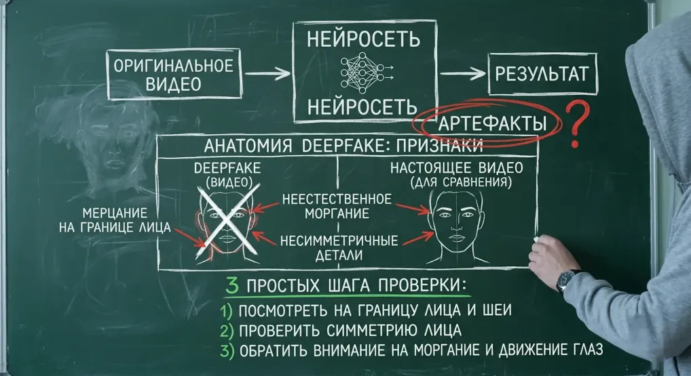
Даша кивнула и начала печатать. Я смотрел через плечо:
«Видео со Стасом — deepfake. Вот технический анализ трёх сервисов. Обратите внимание на артефакты на границе лица (00:11-00:14). Тот, кто это сделал, атаковал уже несколько человек в нашей школе — Стас далеко не первый. Если вам пришло что-то похожее — не пересылайте.»
— Подождите, — сказал я. — Несколько — это сколько?
— Первой, похоже, была Лиза — просто мы тогда ещё не знали, — сказала Даша. — Потом я, Катя и остальные из команды. Потом ты с криптой. Потом Юля. Теперь снова ты.
Я посмотрел на Лизу. Она смотрела в стол.
— Это один человек делает всё это? — спросил я.
— Один или с помощниками, — сказал Артём. — Схема одинаковая. Сначала собирает информацию — открытые профили, посты, видео. Потом бьёт туда, где больнее всего.
Туда, где больнее всего.
Про лутбоксы никто не знал. Про деньги — только отец. Про то, что я не могу остановиться — только я сам, ночью, когда открываю очередной ящик и понимаю, что уже третий за вечер, и всё равно нажимаю.
Один раз я про это гуглил. Ночью, когда было совсем стыдно. Набрал «почему не могу перестать открывать» — и поиск дописал остальное сам, ещё до того, как я допечатал. Значит, этот вопрос до меня набирали столько раз, что его выучили наизусть.
Читать я не стал. Стёр строку и убрал телефон.
— Он следил за мной, — сказал я.
— Скорее всего — да, — сказал Артём. — Или анализировал паттерны трат. Внутриигровые покупки иногда видны через сторонние сервисы.
— Значит, он знает про меня больше, чем я думаю.
— Да. И использует это.
— Кстати, — сказал я. — Никита получил видео одним из первых. Написал сразу мне, не в общий чат. И больше никому не переслал — я проверил у ребят из хоккейной.
Даша чуть помолчала.
— Хорошо, что хоть кто-то, — сказала она.
Кабинет информатики был тихим. За окном шёл мелкий дождь.
Я думал про Кольку Рябова, который не кивнул в коридоре. Про Максима, который отводил взгляд. Про Никиту, который просто не переслал. Про двадцать три уведомления утром.
— Я хочу помочь разобраться, — сказал я. — С этим человеком. Кто бы он ни был.
Даша посмотрела на меня внимательно.
— Ты серьёзно?
— Он сделал из меня попрошайку на весь школьный Telegram. — Я пожал плечами. — Да, серьёзно.
— Тогда завтра, — сказала Даша. — После уроков. Здесь же. Нам нужно всё систематизировать.
Артём уже что-то писал в телефоне — быстро, не отвлекаясь. Лиза открыла скетчбук и начала рисовать что-то неразборчивое. Даша листала свои записи.
Я смотрел на них троих и думал, что месяц назад я бы не провёл с этими людьми и пяти минут добровольно.
Иногда нужен кто-то, кто разрушит твою репутацию, чтобы ты, наконец, познакомился с правильными людьми.
Это была странная мысль. Наверное, не очень здоровая.
Но что-то в ней было.
На выходе меня догнал Влад Соловьёв из параллельного — тот самый, которому я названивал неделю назад, из-за крипто-бота.
— Стас, погоди.
Я обернулся. Влад запыхался, будто бежал через весь этаж.
— Я его переслал, — сказал он, глядя куда-то в сторону, не на меня. — Видео. Утром, в чат восьмых классов. Даже не подумал — увидел, что все шлют, значит, наверное, правда. И тоже отправил.
Я молчал.
— Я не со зла, — быстро добавил он. Достал телефон, открыл чат — я видел, как палец завис над сообщением, потом нажал. Пост исчез. — Удалил. Знаю, что это ничего не отменяет. Просто хотел, чтобы ты знал — от меня оно больше не идёт.
Я не сразу нашёл что ответить. Час назад я злился на всех, кто это переслал, — представлял их одной безликой толпой. А тут стоял один конкретный человек и извинялся вслух, глядя мне почти в глаза.
— Ладно, — сказал я. — Спасибо, что сказал.
Он кивнул, неловко, и пошёл к автобусу — слишком быстро для того, кто просто попрощался.
Я смотрел ему вслед и думал: может, дело было не в одном злодее. Может, просто каждый, кому это прислали, пересылал дальше — не потому что хотел мне навредить, а потому что не остановился на секунду посмотреть. Я сам так делал сотню раз с чужими постами — жал «переслать», даже не открыв до конца.
Вечером отец зашёл в мою комнату без стука.
Я закрыл ноутбук рефлекторно — старая привычка.
— Видел видео, — сказал он.
— Это не я, — сказал я быстро. — Это deepfake. Технология такая — накладывают чужое лицо. Артём Беляев прогнал через три сервиса, вероятность синтетического контента восемьдесят процентов.
Отец молчал. Смотрел на меня.
— Про донаты и лутбоксы там — тоже неправда? — спросил он.
Я открыл рот. Закрыл.
— Про лутбоксы… — я остановился. — Там преувеличено.
— На сколько?
Долгая пауза.
— Не знаю точно, — сказал я. — Я не считал.
Отец кивнул. Медленно, один раз.
— Хоккей в эту пятницу, — сказал он. — Я приеду.
Он вышел и закрыл дверь.
Я сидел в тишине и думал, что это был самый короткий и самый важный разговор за последние две недели. Отец не сказал «я тебе верю». Не сказал «молодец». Просто — хоккей в пятницу, я приеду.
Для отца это была почти предматчевая речь тренера — короткая, но била точно в цель.
Конец главы 7
[Даша. Среда, 16 октября]
Мама позвонила в семь утра.
Я ещё лежала в кровати и смотрела в потолок — не спала уже минут двадцать, просто не хотела вставать. За окном было серое октябрьское небо, в батарее что-то гудело, и всё вокруг было устроено ровно так, как в любое другое утро среды.
— Даша, — сказала мама без предисловий. — Я читала про этот deepfake. Про мальчика из твоей школы.
— Про Стаса? — я села на кровати.
— Не знаю, как его зовут. Я читала в родительском чате. Там сейчас… — она сделала паузу. — Там сейчас много всего.
Родительский чат. Я про него забыла. Пока мы вчера разбирались с видео, собирали доказательства, публиковали опровержение — родители параллельно читали всё то же самое в своих чатах и делали свои выводы.
— Мам, мы разобрались. Артём доказал, что это подделка. Я написала в общий чат объяснение.
— Я знаю. — Голос у неё был ровный, но я слышала под этим что-то другое. — Мы с тобой сегодня вечером поговорим. Приходи домой сразу после уроков.
Звонок оборвался.
Я смотрела на телефон. «Сразу после уроков» — это не «как освободишься». Это расписание.
В школе с утра было странно.
Не плохо — просто странно. Как будто воздух изменился. Люди в коридорах говорили тише обычного, несколько раз я ловила взгляды — не злые, скорее оценивающие. После моего поста в общем чате с разбором deepfake кто-то написал «спасибо», кто-то поставил реакцию-огонь, кто-то — ничего. Вика Морозова прошла мимо, не поздоровавшись, что было нормой. Максим из хоккейной команды Стаса кивнул мне в коридоре — первый раз за неделю.
На переменах телефоны у всех были в руках.
— Бабушка не спит, — сказала мне Лиза, когда мы столкнулись на лестнице. Тихо, как обычно. — После вчерашнего до полуночи не ложилась. Три раза спрашивала — не написал ли фейковый Миша снова.
— А писал?
— Пару раз. Я не отвечала — майор сказал не менять поведение, чтобы не спугнуть. Потом перестал писать.
Она поправила ремень рюкзака, не глядя на меня.
— Сказала: если снова напишет — сразу к ней.
— И ты как?
Лиза пожала плечами — неопределённо, как человек, который ещё не решил.
— Она переживает. Я понимаю.
Она сказала это просто — но за простотой пряталась усталость.
Мария Сергеевна поймала меня после третьего урока — буквально остановила в дверях кабинета истории.
— Козлова, у тебя есть пять минут?
Кабинет психолога был маленьким и тёплым — цветы на подоконнике, мягкий свет, на стене какой-то постер с горами. Я сто раз проходила мимо и ни разу не заходила.
— Садись. — Она кивнула на кресло напротив стола. Не на стул — на кресло. Маленькая деталь, но приятная.
— Это про вчера? — спросила я.
— Отчасти. — Мария Сергеевна сложила руки на столе. — Я видела твой пост. Грамотно, честно. Ты молодец, что объяснила технически, а не просто написала «это неправда».
— Нас Артём научил.
— Я знаю. — Она чуть улыбнулась. — Я хотела спросить про другое. Как ты сама?
Вопрос застал меня врасплох. Обычно спрашивают «как дела» — и ждут «нормально». «Как ты сама» — другое.
— Устала немного, — призналась я. — У мамы сегодня разговор запланирован. Она читала родительский чат.
— Понятно. — Мария Сергеевна кивнула. — Там сейчас горячо.
— Что они пишут?
Она помолчала секунду — взвешивала, видимо, сколько говорить.
— Разное. Кто-то предлагает запретить телефоны в школе совсем. Кто-то — установить программы слежения на все устройства детей. Кто-то считает, что нужно просто «больше разговаривать с детьми», — она сделала лёгкое ударение на этих словах, — но не очень понимает, как это делать.
— Мама — IT-специалист, — сказала я. — Она не будет паниковать. Но она может… перестраховаться.
— Это нормальная реакция для родителя.
— Я знаю. Просто…
Я остановилась. «Просто» — что? Просто не хочу, чтобы она забрала телефон? Просто расследование сейчас на важном этапе? Просто мне уже четырнадцать лет и я сама могу разобраться?
Всё это было правдой. И всё это звучало бы эгоистично вслух.
— Просто хочется, чтобы она спросила, — сказала я. — Прежде чем решать.
Мария Сергеевна смотрела на меня без осуждения, без нажима.
— Как ты думаешь, почему родители иногда не спрашивают?
— Потому что боятся, что мы скажем «нет»?
— Отчасти. И ещё потому, что когда страшно — хочется действовать быстро. Контроль даёт ощущение безопасности. Даже если реальной безопасности не прибавляет.
Я думала об этом.
— А программы слежки — они вообще помогают?
— Смотря от чего. — Мария Сергеевна откинулась на спинку кресла. — От случайного фишинга — не очень. Видеть, на какие сайты ходит ребёнок, и видеть, что происходит в его голове — разные вещи. Иногда слежка даёт родителю успокоение, но не даёт ребёнку безопасности. — Она чуть наклонила голову. — А что даёт?
— Разговор? — сказала я неуверенно. — Но это звучит как-то… банально.
— Звучит банально. Работает небанально. — Она улыбнулась. — Есть разница между «я проверяю твой телефон» и «мы договорились, что ты можешь мне рассказать, если что-то пойдёт не так». Первое — контроль. Второе — договор.
Договор. Я запомнила это слово.
— Вы будете говорить с родителями? — спросила я.
— На следующей неделе собрание. Я попрошу директора добавить меня в повестку. — Она посмотрела на часы. — Тебе пора на урок.
Я встала. У двери обернулась.
— Мария Сергеевна. А если мама всё-таки заберёт телефон — мы не сможем разобраться в том, что происходит?
Она подняла взгляд.
— Это повод поговорить с ней честно о том, что ты делаешь и зачем. Ты пробовала?
Я не пробовала.
Мама уже была дома — редкость для будних дней. Она работала из дома в особых случаях, и то, что она приехала раньше обычного, говорило само за себя.
На столе стоял чай — две чашки. Она налила заранее.
— Садись.
Я села. Взяла одну. Чай был горячий, чуть горьковатый — мама всегда заваривала крепко.
— Я читала, что происходит в школе, — начала она. — Не только в родительском чате. Я нашла твой пост про deepfake. Технически грамотно.
— Это Артём, в основном.
— Ты опубликовала. — Она смотрела на меня. — Даша, я хочу понять — ты мне всё рассказываешь? Про то, что происходит?
Честный вопрос. Заслуживал честного ответа.
— Не всё, — сказала я. — Например, во вторник ты спросила про пятьсот рублей — я сказала «обновления в игре». Это было не совсем правдой.
Мама не удивилась. Помолчала — я почти видела, как она складывает это с тем, что уже знает, — и просто кивнула.
— Почему?
— Потому что боялась, что ты заберёшь телефон и запретишь расследовать.
— Расследовать. — Она произнесла это слово без интонации — не насмешливо, просто повторила.
— Мы пытаемся понять, кто за всем этим стоит. Я, Артём, Лиза, Стас. Майор Островский знает — мы работаем вместе с ним.
Это была важная часть. Я видела, как что-то изменилось в её лице, когда я сказала про майора.
— Полиция в курсе?
— Да. С прошлой недели.
Она взяла свою чашку, поставила обратно.
— Хорошо, — сказала она, наконец. — Это правильно. — Она отвела взгляд к окну. — Мне всё равно нужно понимать, что происходит. Не контролировать каждый шаг — понимать. Разница есть?
— Есть, — сказала я.
— Тогда вот что я предлагаю. — Она достала из кармана телефон и положила на стол между нами. — Я нашла приложение родительского контроля. Хотела установить без разговора — но потом подумала, что это нечестно.
Я смотрела на телефон.
— Какое приложение?
— «Семейный экран». Популярное, много отзывов.
— Покажи.
Она протянула телефон без удивления — мама привыкла, что я интересуюсь техническими деталями.
Я открыла страницу приложения. Рейтинг четыре и восемь. Сто тысяч скачиваний. Отзывы в основном положительные — «удобно», «помогает», «рекомендую». Я сразу перешла на вкладку разрешений.
— Микрофон, камера, чтение сообщений, постоянная геолокация, — прочитала я вслух. — Мам, зачем приложению для контроля экранного времени нужен микрофон?
Мама взяла телефон. Посмотрела сама — внимательно, как смотрят на рабочий документ.
— Я видела эти разрешения, — сказала она медленно. — Но не остановилась на них. Приложение популярное, отзывы хорошие — включила автопилот.
— Артём говорил, что некоторые приложения «родительского контроля» — это на самом деле spyware. Собирают данные не только о ребёнке, но и обо всех в доме. Продают рекламщикам. Или хуже.
— Знаю, что такое spyware, — сказала мама суховато. Потом помолчала. — Именно поэтому мне стыдно, что не проверила нормально. Ты права.
— А я не знала до этой недели. — Я отпила чай. — Мам, я понимаю, зачем ты хотела это установить. Правда. Но можно мы сначала поговорим — что тебя конкретно беспокоит? Не вообще, а конкретно. И я скажу, как мы это закроем по-другому.
Мама посмотрела на меня. Долго — так смотрят, когда видят что-то неожиданное в знакомом человеке.
— Ты выросла, — сказала она.
— Мам.
— Нет, я серьёзно. — Она отложила телефон в сторону. — Хорошо. Меня беспокоит, что ты не говоришь мне, когда что-то идёт не так. Что я узнаю про deepfake из родительского чата, а не от тебя.
— Это честно, — сказала я. — Я должна была рассказать раньше. Про бота — ещё в первую неделю.
— Почему не рассказала?
— Боялась, что ты заберёшь телефон и я не смогу помогать ребятам.
Мама не ответила сразу.
— Я бы не забрала телефон, — сказала она. — Я бы испугалась и, наверное, предложила что-то глупое. Но потом бы успокоилась.
— Я не знала.
— Теперь знаешь.
Я держала чашку двумя руками. Чай уже остывал.
— Он угрожал, — сказала я. — С самого начала знал моё имя и где ты работаешь. А потом написал про фото из галереи — с пижамной вечеринки у Кати. Сказал: хочешь, чтобы их увидел весь класс?
Мама не перебивала.
— Я не выполнила. Он так и не выложил. Наверное, пока я нужна как жертва — рычаг дороже.
— Понятная логика, — сказала мама. Голос ровный, рабочий. Так она говорила про чужие системы, которые изучала. — Ты правильно не выполнила.
— Артём объяснил то же самое. Позже.
Мама кивнула. Помолчала секунду — и вдруг сказала:
— Несколько дней назад мне пришло сообщение. В рабочий мессенджер, с аккаунта без имени и фото. Прикреплён скриншот какого-то TikTok и текст: «спросите дочь, чем она занимается онлайн». Я посмотрела — ссылка внутри битая, отправитель неизвестен. Решила: либо спам, либо кто-то из родителей учеников перепутал адресата. Удалила.
Я медленно поставила чашку на стол.
— Это был мой аккаунт?
— Не знаю. Я не стала разбираться.
Мы смотрели друг на друга.
— Это был он, — сказала я. — Бот. Он специально сделал так, чтобы было похоже на спам — без имени, без рабочей ссылки. Чтобы если не сработает — просто исчезнуть, как будто ничего и не было. Он всё-таки нажал на кнопку. Просто ты не знала, что это кнопка.
— А ты не знала, что он нажал.
Мама произнесла это без упрёка. Просто вслух — два факта, которые вместе объясняют почти две потерянные недели.
— Если бы ты сказала мне тогда, — начала она.
— Я знаю.
— Я бы увидела связь.
— Я знаю, мам.
Мы сидели в тишине, а за окном тем временем быстро темнело — октябрь брал своё, и я знала, что не пройдёт и получаса, как на улице станет совсем темно.
— Мария Сергеевна говорила про договор, — сказала я. — Не правила, а договор. Где обе стороны что-то обещают.
— Это разумно. — Мама взяла ручку с подставки — привычка, она всегда думала с ручкой в руках. — Что ты готова обещать?
— Рассказывать тебе, если что-то серьёзное. Не мелочи — серьёзное. — Я подумала. — И не скрывать, если кто-то пишет что-то странное.
— А я обещаю не читать переписку без причины. И не забирать телефон как первую реакцию. И спрашивать, прежде чем решать.
Это было не похоже на наши обычные разговоры. Обычно она говорила, я слушала, мы расходились — каждый при своём. Сейчас было по-другому.
— Напишем? — спросила я.
— Что написать?
— Договор. На бумаге. Мария Сергеевна говорила, что так лучше работает.
Мама посмотрела на меня с лёгким удивлением. Потом усмехнулась — не насмешливо, тепло.
— Хорошо. Давай напишем.
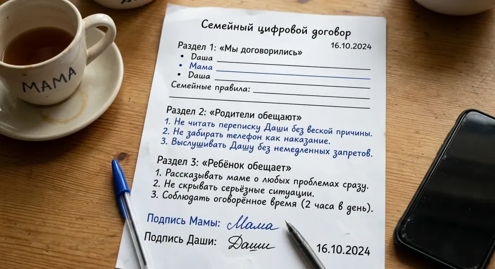
По средам в это время я обычно была в спортзале. Пятничную игру я тогда пропустила совсем — тот звонок тренера, в день, когда вызывали к майору, я сбросила и не перезвонила. С тех пор — уже третья тренировка подряд. Тренер звонил дважды, потом перестал.
Мама что-то писала на листке. Я смотрела на темноту за стеклом и думала, что жизнь последних двух недель — это как матч, который начался без предупреждения, и я до сих пор не понимаю счёт.
В половину девятого вечера я лежала на кровати с телефоном и перечитывала наш договор. Листок бумаги, по три пункта с каждой стороны, две подписи. Смешно, наверное. Или нет.
Телефон завибрировал.
Сообщение в Telegram. Незнакомый номер — аккаунт без фото, без имени, создан сегодня.
Я открыла.
«Приятный разговор у вас получился. «Рассказывать тебе, если что-то серьёзное.» Умница. А про то, что вы нашли бэкдор в школьной сети — маме тоже расскажешь?»
Я смотрела на экран.
Бэкдор. Артём написал мне об этом вчера ночью — коротко, без предисловий: «Нашёл кое-что в школьной сети. Бэкдор. Это как замок на двери, у которого есть второй ключ — тайный, о котором хозяин не знает. Кто-то вошёл в школьную систему и оставил себе этот ключ. Может заходить когда хочет, смотреть что хочет».
Я ответила «окей, завтра» и легла спать.
Утром я хотела спросить, но Артём с утра ходил с телефоном и почти не разговаривал — у него такое лицо бывает, когда он ещё не готов объяснять. Я решила подождать.
Никто, кроме нас двоих, этого не знал.
Телефон в моей руке завибрировал снова. Новое сообщение — тот же безымянный номер.
«Тебе нравится твой новый договор с мамой? Бумага такая хрустящая.»
Я смотрела на сообщение. Потом — на телефон в своей руке.
Разговор с мамой был на кухне. Телефон лежал на столе между нами всё время. Я ни разу не взяла его в руки — мы говорили, пили чай, писали договор на бумаге.
Но телефон был рядом. С микрофоном. С приложениями, у которых есть доступ к микрофону. И если одно из них работало в фоне — всё время, пока мы говорили — то кто-то слышал каждое слово.
«Бумага такая хрустящая».
Я вспомнила, как мама расправила листок перед тем, как подписать. Тихий сухой звук. Совсем рядом с телефоном.
Он слышал это.
Руки стали холодными. Я положила телефон на кровать — подальше от себя, как будто это могло что-то изменить. Потом взяла обратно. Потом снова положила.
Он был здесь. Не в школе — за нашим столом.
Пока мы договаривались о доверии — он слушал.
Надо было зайти к маме. Прямо сейчас, показать экран, объяснить.
Я не зашла.
Мы три часа назад подписали договор. Я обещала рассказывать о серьёзном. И вот оно, почти сразу же, — то самое «серьёзное». Если я зайду сейчас — она решит, что я всё время что-то скрывала. Что договор был ненастоящим. Что доверять мне нельзя.
Я держала в руках доказательство, что он был здесь. И не могла придумать, как объяснить это так, чтобы не разрушить то, что мы только что построили.
Конец главы 8
[Артём. Четверг, 17 октября]
Даша написала в половине одиннадцатого ночи.
Одно сообщение, без предисловий: «Он слушал нас. Через микрофон телефона. Написал мне дословно то, о чем я говорила с мамой дома».
Я сидел за компьютером и смотрел на эти слова минуты три.
Потом написал: «Не удаляй сообщение. Не отвечай на него. Скриншот сделала?»
«Да».
«Хорошо. Завтра разберёмся».
Я закрыл Telegram и открыл новый документ. Писать туда ничего не стал — просто смотрел на пустой экран и думал.
Телефон как микрофон. Это не сложно технически — если на устройстве есть приложение с доступом к микрофону и оно работает в фоне, оно может записывать всё вокруг. Постоянно или по команде. Даша сама показала маме список опасных разрешений — значит, понимает, как это работает в теории. Но не успела проверить собственный телефон.
Вопрос в другом: какое приложение? Когда оно появилось? И — это важнее всего — кто дал команду записывать именно сейчас, именно этот разговор?
Я лёг спать в час ночи. Уснул не сразу.
Утром в школе я первым делом нашёл Дашу у двери кабинета.
— Покажи телефон, — сказал я вместо «привет».
Она протянула без вопросов — уже привыкла.
Я открыл настройки, раздел разрешений, отфильтровал по микрофону — и вернул ей телефон. Список приложений с доступом был длиннее, чем должен быть.
— Вот, — я ткнул пальцем в строчку на её экране. — Видишь это? Приложение «Погода+». Установлено одиннадцать дней назад. Зачем погодному приложению микрофон?
Даша смотрела на экран.
— Я его не устанавливала.
— Уверена?
— Артём, ну я же знаю, что у меня стоит на телефоне.
Она посмотрела список разрешений ещё раз. Микрофон. И ниже — доступ к уведомлениям.
— А это зачем ему? — спросила Даша, ткнув в строчку.
Я наклонился.
— Доступ к уведомлениям — значит, видит всё, что всплывает на экране. В том числе превью сообщений в Telegram, если у тебя не отключён показ текста в уведомлении.
— То есть он не подслушивал разговор про бэкдор. Он его читал, — поняла Даша.
— Оба варианта были у него в руках, — сказал я. — Просто использовал разные каналы для разных вещей.
Я кивнул на экран.
— Открой историю установки. Это одна половина вопроса — что он видел и слышал. Вторая — откуда оно вообще взялось. Программу от Влада помнишь? Которую ты скачала в начале октября.
Даша замолчала.
— Она тянула за собой установщик, — сказал я. — Ты видела одно приложение, а в фоне ставилось второе. Стандартная схема. «Погода+» — это и есть то самое, второе.
— То есть я сама его установила.
— Ты установила то, что тебе подсунули. Разница есть.
Я поставил галочку мысленно. Почти две недели назад — это начало октября. Примерно тогда, когда началось всё остальное.
— Удали сейчас. И проверь остальные разрешения сама, вечером, внимательно. Каждое приложение.
— Уже поздно что-то удалять?
— Для того, что он уже слышал и читал — да. Для того, что услышит и прочитает завтра — нет.
Даша кивнула. Нажала удалить.
Я смотрел на это и думал, что где-то на другом конце кто-то только что потерял канал. Маленькая победа. Но то, что он успел услышать — не вернуть.
Даша не убрала телефон. Смотрела на экран.
— Артём. Он писал про вирус на домашнем компьютере. В самом первом сообщении. Это было правдой?
— Какой вирус?
— Бот. Написал, что я установила вирус на домашний компьютер. Я тогда решила, что он как-то залез и увидел.
Я несколько секунд смотрел на неё. Потом понял.
— Блефовал.
— Что?
— Стандартный приём. Всё та же социальная инженерия. — Я убрал телефон в карман. — Подумай вот о чём: если бы он реально поставил вирус на твой домашний компьютер — зачем об этом говорить? Сидел бы тихо и собирал всё что нужно. Раз написал — значит вируса нет. Есть только слова, которые должны тебя напугать. Написал «вирус» — ты испугалась — он получил реакцию. Это и есть цель.
Даша молчала. По лицу было видно — прокручивает то сообщение в памяти.
— Он просто угадал, что я испугаюсь, — сказала она медленно.
— Не угадал. Знал, что любой испугается. Это работает на всех. — Я помолчал. — Ты не была глупее других. Просто не знала, как это устроено.
Она кивнула. С задержкой — как будто слова доходили по одному.
Я не стал добавлять ничего лишнего. Иногда достаточно просто объяснить.
— Беляев.
Я обернулся.
Кирилл Титов из параллельного — мы иногда пересекались на олимпиадах, не больше.
— Ты же в играх шаришь. Не знаешь такого — Shadowbyte? Кто-то в чате кинул ссылку на статистику. Говорят, топовый, но никто не знает кто.
Что-то холодное прошло по спине.
— Не знаю, — сказал я. Голос вышел ровным — не знаю как.
— Ладно. — Кирилл пожал плечами и пошёл дальше.
Я не двигался. Смотрел в его спину и чувствовал как сердце бьётся чуть быстрее обычного.
Даша взяла меня за рукав — лёгко, просто чтобы я обернулся.
— Артём.
— Слышала? — сказал я тихо.
— Слышала. — Она знала про Shadowbyte с прошлой пятницы — я сам рассказал ей после первого сообщения от Призрака, не смог не рассказать.
Мы стояли в коридоре, вокруг шумела перемена, кто-то смеялся, кто-то бежал. Всё как обычно. И одновременно — совсем не как обычно.
— «Кто-то в чате», — сказал я.
— Да. — Даша отпустила рукав. Голос у неё был спокойный, но я видел — спокойствие это усилие, не состояние. — Не раскрыл кто ты. Просто показал, что обязательно сделает, если мы не остановимся. Он даже не знает, что только что сделал, — она кивнула вслед Кириллу.
— Рычаг остаётся рычагом, только пока не использован, — сказал я. Скорее себе, чем ей.
Даша кивнула. Больше мы к этому не возвращались — впереди был ещё целый день. Но осадок остался.
После второго урока я попросил у учителя информатики разрешения остаться на перемене — сказал, что доделываю проект. Это была полуправда: проект существовал, я его действительно делал. Просто сейчас делал кое-что ещё.
Бэкдор я нашёл два дня назад случайно — Дашин телефон был подключён к школьному Wi-Fi, и я проверял логи сети: не осталось ли следов GlowUp после того как она удалила приложение. Хотел убедиться, что соединение с внешним сервером разорвано. Я знал, что не имею права там смотреть. Но Даша не знала, что происходит с её данными, а я знал как проверить — и это казалось важнее правил. Я сказал себе: одним глазком, только убедиться, что всё чисто. Так всегда начинается. И пока смотрел — наткнулся на папку с нестандартными правами доступа. Папка называлась «system_temp_logs» — невинно, как и должно быть у замаскированного входа. Но права на неё были выданы пользователю, которого в школьной системе больше не существовало.
Сегодня я решил посмотреть глубже.
Экран светился зеленоватым — я специально сделал тёмную тему, чтобы не бросалось в глаза со стороны. Набрал команду, дождался ответа системы.
Папка была создана тринадцать месяцев назад. В сентябре прошлого года.
Я открыл свойства пользователя-владельца. Аккаунт числился удалённым, но ID сохранился в системных логах. Я скопировал его и вставил в поиск по журналу событий.
Результат пришёл через секунду.
Пользователь: v.zaytsev. Последняя активность: октябрь прошлого года. Статус: удалён в связи с увольнением.
Я поправил очки и перечитал дважды.
Зайцев. Виктор Зайцев — системный администратор школы, которого уволили год назад. Я о нём слышал краем уха: кто-то из старшеклассников упоминал, что был такой, ушёл со скандалом. Больше деталей не знал.
Но вот его аккаунт. И бэкдор, созданный под этим аккаунтом. За месяц до увольнения.
Это могло означать две вещи. Либо Зайцев сам создал этот вход — намеренно, зная, что его скоро уволят, и оставил себе способ вернуться. Либо кто-то другой использовал его учётные данные — до или после увольнения — и создал вход от его имени.
Оба варианта были неприятными.
Я закрыл окна, очистил историю команд и сел ровно. Перемена заканчивалась.
Проблема была в том, что я не знал, что делать с тем, что нашёл.
Я был не первый раз в подобной ситуации. В прошлом году — история с принтером. Тогда я залез в школьную сеть с хорошими намерениями, починил то, что не работало, и получил вызов к директору. Предупреждение. «Даже с хорошими намерениями нельзя лезть в чужие системы».
С тех пор я старался не лезть.
Но сейчас я нашёл что-то серьёзное. Не сломанный принтер — скрытый вход, через который кто-то мог месяцами ходить в школьную сеть. Читать файлы. Смотреть данные. Устанавливать что угодно на школьные компьютеры.
Молчать об этом — значит оставить дверь открытой.
Рассказать — и снова окажусь под подозрением. «Откуда ты знаешь про бэкдор? Как нашёл? Что ты там делал?»
Я думал об этом весь третий урок, не слыша ни слова про химические реакции.
На большой перемене нашёл Дашу, Лизу и Стаса у нашего обычного места — подоконник в торце коридора второго этажа, откуда видно весь этаж и есть пути отхода в обе стороны. Стас занял его первым — он теперь инстинктивно выбирал места спиной к стене. Не объяснял почему. Не нужно было: после дипфейка про историю с ботом и деньгами слух с подробностями разошёлся по классу быстрее самого видео.
— Мне нужно вам кое-что показать, — сказал я. — И потом нужно решить, что с этим делать.
Я рассказал про бэкдор — с объяснением, как в прошлый раз, чтобы все понимали. Про папку, про права доступа, про аккаунт Зайцева.
Даша слушала с телефоном в руках — наверное, записывала. Лиза смотрела в окно, но я знал, что слушает — она всегда так делает, когда думает. Стас первые две минуты листал что-то в телефоне, потом убрал его и стал слушать по-настоящему.
— Этот Зайцев — он может быть Призраком? — спросил Стас.
— Не знаю. Он мог создать бэкдор сам. Или кто-то использовал его аккаунт. Это разные вещи.
— Но связь есть.
— Связь есть.
— Тогда надо рассказать майору, — сказала Даша.
— Я знаю. — Я помолчал. — Но тогда придётся объяснять, как я это нашёл. Что я делал в школьной сети.
Короткая пауза.
— Ты нарушил правила? — спросила Лиза тихо.
— Технически — да. Я не должен был там искать. У меня нет прав на доступ к системным логам.
— Но ты нашёл что-то важное.
— Это не отменяет первое.
Стас хмыкнул. Не насмешливо — скорее узнающе.
— Братан, ты сделал то, что мог. Теперь решаешь, что делать дальше. Это другой вопрос.
Я посмотрел на него. Месяц назад Стас Петров был последним человеком, от которого я ожидал услышать что-то полезное.
— Майору можно сказать честно, — сказала Даша. — Что знал, что не имеешь права. Что всё равно посмотрел. И что сразу пришёл рассказать.
— Даша. — Я остановил её. — У меня уже было предупреждение. Второй раз может быть гораздо серьёзнее, чем просто разговор с директором.
— Именно поэтому скажи как есть, — сказала она тихо. — Не оправдывайся. Просто факты: знал, что нельзя. Всё равно посмотрел. Остановился. Пришёл рассказать.
— Это честно, — сказала Лиза. — Не оправдание. Так и есть.
Я думал об этом. Сказать правду полностью — и принять что будет. Это страшнее чем промолчать. Но молчать — значит оставить дверь открытой.
— Артём, — сказала Даша. — Есть разница между «нашёл уязвимость и использовал её» и «нашёл уязвимость и сообщил». Первое — это то, что делает Призрак. Второе — это то, что делают нормальные люди, которые умеют в технологии.
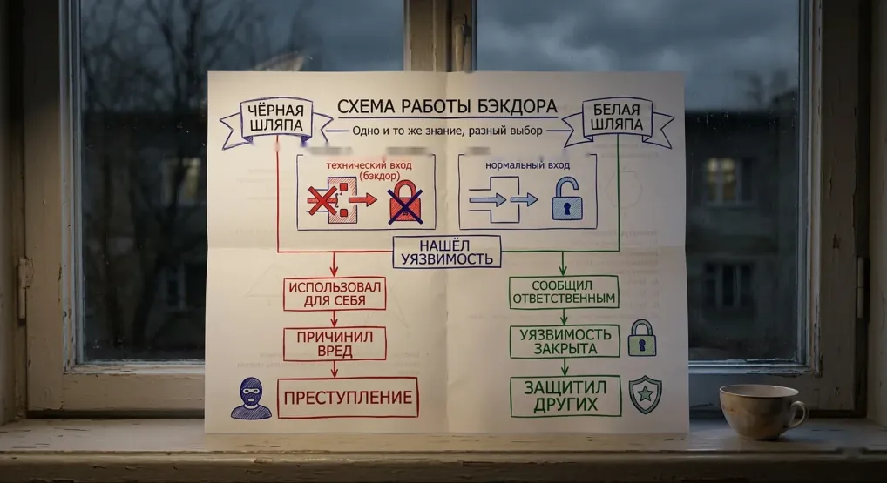
Майору Островскому я позвонил сам — взял номер у Даши. Трубку он поднял после второго гудка.
— Островский.
— Здравствуйте. Это Артём Беляев.
— Знаю. Номер у меня с пятницы. Слушаю.
— Я нашёл кое-что в школьной сети, — сказал я. — Бэкдор. Скрытый вход под аккаунтом бывшего сисадмина Зайцева.
— Как нашёл?
Вот оно.
— Два дня назад — случайно. Проверял, не осталось ли следов от приложения, которое стояло у Козловой. Я знал, что не имею права там смотреть. Посмотрел.
Майор не перебивал. Я слышал, как он что-то пишет.
— И наткнулся на папку с чужими правами доступа. А сегодня вернулся и посмотрел глубже. Уже специально.
— Дальше?
— Дальше не пошёл. Посмотрел достаточно, чтобы понять, что это важно. И позвонил вам.
— Когда это было создано?
— Тринадцать месяцев назад. Сентябрь прошлого года.
— За месяц до увольнения Зайцева.
Он не спросил, кто такой Зайцев. Просто назвал дату. Значит, эта фамилия у него уже была.
— Да.
Пауза.
— У тебя ведь уже было предупреждение. В прошлом году.
— Было.
— И ты всё равно позвонил.
— Да.
Я ждал. Майор молчал секунды три — наверное, думал.
— Хорошо. Это называется ответственным раскрытием уязвимости. В профессиональном мире за это платят деньги. В твоём случае — просто правильный поступок. Про предупреждение поговорим отдельно. Не сегодня. Пришли мне скриншоты того, что видел. Всё, что успел зафиксировать.
— Сделаю.
— И Беляев. Больше туда не заходи. Даже случайно.
— Понял.
Я нажал отбой и выдохнул. Рядом стояла Даша — она слышала мою половину разговора.
— Нормально? — спросила она.
— Нормально, — сказал я. И это была правда.
После уроков я задержался в кабинете информатики — готовил скриншоты для майора, систематизировал то, что нашёл. Это заняло больше времени, чем думал: нужно было объяснить понятно, без технического жаргона — мало ли, кто ещё будет читать это дело дальше, не только майор.
Я делал это и думал про Зайцева.
Виктор Зайцев, системный администратор. Уволен год назад со скандалом. Оставил бэкдор — намеренно или нет. Сейчас неизвестно где.
Это не доказательство вины. Бэкдор мог создать кто-то другой под его аккаунтом — если знал пароль. Или Зайцев сам создал, но не использует — просто оставил на всякий случай, не думая о последствиях.
Но связь была. И в расследовании, которое до сих пор упиралось в анонимного Призрака без лица и адреса, даже призрак связи — это уже что-то.
Телефон завибрировал. Сообщение от Даши:
«Майор нашёл Зайцева. Тот сам попросил встречи — сказал, что хочет поговорить с ребятами, из-за которых всё вскрылось. Завтра после уроков, в кабинете Марии Сергеевны — на нейтральной территории».
Я смотрел на экран.
Зайцев сам попросил. Это было неожиданно. Виновные люди обычно не просят встреч с теми, кто их раскрыл. Они прячутся, нанимают адвокатов, молчат по их совету.
Или он не виновен. Или виновен, но хочет оправдаться. Или это что-то третье, чего я пока не понимаю. Две версии он может объяснить сам. Третью — я не уверен, поймёт ли даже он.
Я закрыл ноутбук и убрал его в рюкзак. Часы показывали пять, а за окном уже сгустились сумерки.
Конец главы 9
[Даша. Пятница, 18 октября]
Кабинет Марии Сергеевны был маленьким даже по школьным меркам — узкий, с одним окном, выходящим во двор. Но она каким-то образом умудрилась сделать его нестеснённым: цветы на подоконнике, мягкие кресла вместо стульев, на стене не расписание и не правила, а фотографии гор и какая-то акварель с лесом.
Нас было шестеро. Мы четверо — я, Артём, Лиза, Стас. Майор Островский в своём неизменном пиджаке, с блокнотом на колене. И Мария Сергеевна, которая открыла нам дверь и сразу поставила чайник — не спрашивая, нужен ли.
Виктор Зайцев пришёл последним.
Я не знала, кого ожидала увидеть. Наверное, кого-то более… значительного. Человек, чей аккаунт стоит в центре всей этой истории, казался мне в воображении крупнее. Увереннее. Опаснее.
Виктор Павлович Зайцев оказался невысоким мужчиной лет сорока с небольшим, в мятой рубашке и куртке, которая была ему чуть велика. Волосы с проседью, взгляд — не злой, не хитрый. Просто усталый. Очень усталый.
Он вошёл, огляделся, увидел нас четверых и на секунду остановился.
— Здравствуйте, — сказал он. Негромко.
— Проходите, Виктор Павлович, — сказала Мария Сергеевна. — Садитесь куда удобно.
Он выбрал место у стены — подальше от всех. Положил на колени потрёпанную папку. Сцепил руки.
Майор кивнул нам — мол, начинаем.
— Я хотел сам прийти, — сказал Зайцев. Он смотрел не на майора — на нас. — Когда мне сказали, что школьники нашли бэкдор и сообщили в полицию… я понял, что надо объяснить. Лично.
— Объясните, — сказал майор спокойно.
Зайцев открыл папку. Там лежали распечатки — много, листов двадцать, скреплённые канцелярской скрепкой.
— Я работал в школе три года. Системным администратором. — Он помолчал. — Я не очень хороший администратор. Это надо признать сразу. Я учился в девяностые, потом работал на заводе, потом переучился на курсах. Школа взяла меня, потому что больше никто не хотел за такую зарплату.
Никто не перебивал.
— В сентябре прошлого года я обновлял серверное программное обеспечение. Долго, сложно, несколько раз ломалось. Чтобы не вводить пароль каждый раз — я создал технический вход. Временный. Для себя, чтобы удобнее работать. — Он потёр лоб. — Потом обновление закончилось. Я забыл закрыть этот вход. Просто забыл. Не специально.
— Когда вас уволили — вы вспомнили о нём? — спросил майор.
— Нет. — Зайцев покачал головой. — Вспомнил три недели назад. Читал про утечки данных в региональных учреждениях — там была статья, как через старый технический вход взломали базу одной из больниц. И вдруг вспомнил. Полез проверить старые резервные копии — у меня дома был бэкап системных логов, я делал их для себя, на всякий случай. — Он положил руку на папку. — Вот они. Логи за последние полгода. Кто-то действительно использовал этот вход. Регулярно.
Майор кивнул и что-то записал. Потом поднял голову:
— Виктор Павлович, атаки на учеников начались седьмого октября. А вы говорите — вспомнили три недели назад. Получается, вы знали о бэкдоре ещё до того, как всё началось. И пришли только сейчас.
Зайцев не ответил сразу. Смотрел на папку.
— Боялся, — сказал он, наконец. — Что подумают на меня.
Майор снова кивнул. Ничего не добавил — просто записал.
Я смотрела на Зайцева и считала: неделя, вторая, третья. Три недели он знал — и молчал.
Артём подался вперёд. Я видела, как у него изменилось лицо — стало сосредоточенным, рабочим.
— Можно посмотреть?
Зайцев посмотрел на майора. Тот кивнул.
Тогда он протянул папку Артёму.
Следующие десять минут Артём листал распечатки молча. Иногда что-то бормотал себе под нос. Один раз попросил ручку — Мария Сергеевна дала — и что-то подчеркнул.
Мы ждали. Стас смотрел в окно. Лиза рисовала в своём блокноте — мелкие быстрые линии, которые она делала всегда, когда нервничала. Я пила чай и наблюдала за Зайцевым.
Он не выглядел как преступник. Он выглядел как человек, которому давно плохо и который, наконец, решился что-то сделать с этим ощущением.
— Виктор Павлович, — сказала я. — Вы, когда поняли, что кто-то использует этот вход — вам было страшно?
Он посмотрел на меня с удивлением. Наверное, не ожидал вопроса от меня.
— Да, — сказал он просто. — Очень. Я думал — скажу, и решат, что я сам всё сделал. Что специально оставил. Что я часть этого.
— Поэтому молчали три недели?
— Да.
Я кивнула. Это было понятно. Это было очень понятно — бояться, что признание сделает только хуже. Что взрослые не разберутся, накажут первого, кто попался.
Мы все это знали. По-разному, но знали.
— Хорошо, что пришли, — сказала я.
Зайцев посмотрел на меня — долго, как будто проверяя, не насмешка ли это. Потом чуть опустил плечи. Как будто что-то отпустило.
— Нашёл, — сказал Артём.
Все повернулись к нему. Он держал несколько листов — выбрал из стопки, разложил на журнальном столике.
Я пересела ближе.
— Смотрите. Вот логи входов через бэкдор. Дата, время, IP-адрес. — Он показал столбцы цифр. — IP-адрес — это как почтовый адрес для компьютера. Каждый раз, когда устройство подключается к интернету, оно получает такой адрес. По нему можно примерно понять, откуда шло подключение.
— Примерно — это насколько точно? — спросил Стас.
— До района города, — сказал майор. — Иногда точнее, если провайдер сотрудничает со следствием.
Артём кивнул, не отрываясь от листов.
— Но вот что интересно. Смотрите на время входов. — Он обвёл несколько строк. — Почти всегда — вечер, часто с начала пятого. Иногда затягивается до одиннадцати. В будние дни.
— Как у школьника, — сказала Лиза тихо.
— Или у человека с обычным рабочим днём, — поправил Артём. — Но вот это. — Он указал на конкретную строку. — Вход в школьную сеть через бэкдор — в среду, девятого октября. В девять вечера. Одновременно с этим — в школьных логах фиксируется выход бота на аккаунты учеников.
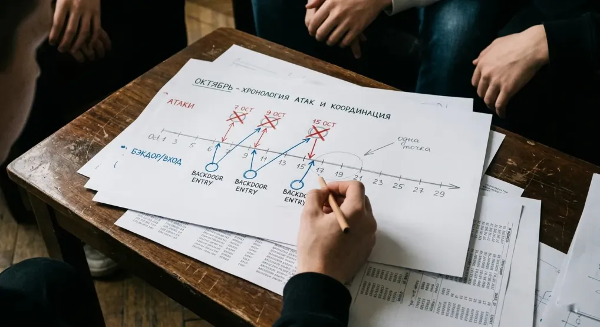
Я смотрела на цифры. Девятое октября. Среда — день, когда Стас потерял деньги.
— Он заходил в школьную сеть прямо в момент атаки, — сказала я.
— Либо сразу после, чтобы проверить результат, — сказал Артём. — В любом случае — это не случайность. Это паттерн. Он использует школьную сеть как базу.
— Как именно использует? — спросил Стас.
— Заходит через бэкдор. Оттуда выходит в интернет — но уже не со своего адреса, а со школьного IP. Запускает ботов. С точки зрения любого сервиса атака идёт от школы, не от него. Потом заходит снова — смотрит школьную почту, внутренние системы. Проверяет, заметили ли. Есть ли паника. Что пишут учителя друг другу.
— То есть школа для него и маска, и источник информации, — сказала я.
— Подождите, — сказал Стас. — Зайцев говорит, что никому про бэкдор не рассказывал. Откуда тогда Призрак вообще про него знал?
— Нашёл сам, — сказал Артём. — При сканировании сети уязвимости видны. Зайцев оставил дыру — Призрак её нашёл. Я нашёл её за несколько часов случайно. Он искал целенаправленно.
— Бывший сотрудник? — Стас посмотрел на Зайцева. Не агрессивно — просто прямо.
Зайцев не отвёл взгляд.
— Я понимаю, о чём вы думаете, — сказал он. — Что это мог быть я. — Пауза. — Это не я. Но я понимаю, почему вы так думаете.
— У вас есть алиби на даты атак? — спросил майор. Спокойно, как всегда.
— Да. Я работаю сейчас в сервисном центре, посменно. Девятого октября я работал с двенадцати дня до полуночи — такая смена. Есть записи.
Майор что-то отметил в блокноте.
— Мы проверим: IP с места работы, адреса входов через бэкдор, — сказал он. — Это формальность.
Зайцев кивнул. Он понимал, что это не формальность — но не возражал.
— Виктор Павлович, — сказал майор. — Вы понимаете, что информация об этой встрече не должна выйти за эти стены?
Зайцев посмотрел на него.
— Понимаю. Я никому не скажу, — сказал Зайцев. Тихо, но твёрдо. — Я пришёл сюда именно для этого. Чтобы помочь исправить то, что натворил по глупости.
Майор смотрел на него секунду. Потом кивнул — коротко, без лишних слов.
— Бэкдор пока не закрываем — пусть Призрак думает, что вход открыт. Но сервер с личными делами учеников изолируем отдельно. — Майор помолчал. — И камеры в школе отключаем от сети. Все.
— Камеры? — спросил Стас.
— Школьные камеры подключены к той же локальной сети, — сказал Артём. Он говорил ровно, как будто объяснял очевидное. — Если у него есть вход в сеть через бэкдор — он видит всё что видят камеры. И слышит. Большинство IP-камер с микрофоном.
— То есть он мог слышать всё, что происходило в школе, — сказал Стас. — Любой разговор. В любом кабинете.
— До сегодняшнего дня — да.
Стас огляделся. Мария Сергеевна поняла его взгляд раньше, чем он спросил.
— Здесь камер нет, — сказала она спокойно. — Никогда не было. Кабинет психолога — это пространство доверия. Камеры здесь противоречат самой идее.
— Поэтому мы здесь, — сказал майор. — И поэтому все дальнейшие встречи по этой теме — только здесь.
— Игорь Владимирович, — сказал Артём. — В логах есть IP-адреса. Полиция может определить, кому они принадлежат?
— С запросом к провайдеру — да, — сказал майор. — Это займёт время, но возможно.
— Тогда там будет имя, — сказал Артём. Он посмотрел на нас. — Настоящее имя. Не никнейм, не аккаунт без фото. Адрес подключения.
В комнате стало тихо.
Я смотрела на цифры в распечатке. Где-то за этими строчками — человек. Реальный, с именем и адресом. Тот, кто слушал мой разговор с мамой. Кто сделал deepfake про Стаса. Кто переписывался с Лизой, притворяясь Мишей из параллельного.
— Когда будет результат? — спросила я.
— Несколько дней, — сказал майор. — Может, больше.
— А до тех пор бэкдор кто-то будет проверять? — спросил Артём. — Можно мне хотя бы смотреть логи — не трогать, просто проверять, не зашёл ли он снова.
Майор посмотрел на него секунду.
— Мы тоже будем смотреть, со своей стороны. Но лишний человек, который знает, что искать, не помешает. Хорошо, смотреть можно. — Пауза. — И вот что, Беляев. Если когда-нибудь возникнет ситуация, где промедление будет стоить дороже, чем звонок мне — действуй по обстановке. Потом доложишь. Но это не разрешение разбираться самому каждый раз, когда покажется, что так быстрее.
Артём кивнул, как будто это было что-то само собой разумеющееся, хотя я видела — для него это было важно. Кто-то взрослый только что сказал ему «я тебе доверяю», а не «сиди тихо».
Несколько дней ожидания, разрешение смотреть логи, которые скорее всего ничего не покажут, — это были не те ответы, которые хотелось услышать. Но они были честными.
Зайцев уходил последним — майор попросил его задержаться для формальных вопросов.
Мы четверо вышли в коридор. Школа была почти пустой — пятница, конец дня, все разошлись. Только где-то в спортзале глухо стучал мяч.
— Даша.
Меня догнала Катя Никонова из нашей волейбольной команды.
— Тренер спрашивал, — сказала она без предисловий. — Говорит, если в понедельник не придёшь — снимет с состава.
— Поняла, — сказала я.
Катя ушла.
Я стояла и думала, что неделю назад это было бы катастрофой. Сейчас — просто ещё одна проблема в очереди.
— Он не виноват, — сказала Лиза. Не вопросительно — утвердительно.
— По всей видимости, нет, — сказал Артём.
— Мне его жалко, — сказала она. — Он три недели боялся прийти. Думал, что его обвинят. — Пауза. — Я понимаю это чувство.
Стас облокотился на подоконник, скрестил руки.
— Значит, ждём, пока полиция разберётся с IP-адресами?
— Не только, — сказал Артём. Он достал телефон, открыл заметки. — Я хочу проверить кое-что ещё. В логах есть даты, когда бэкдор использовался, но атак не было. Просто входы. Он изучал систему. Искал что-то конкретное.
— Что именно?
— Не знаю пока. Но есть одна папка, к которой он обращался чаще всего. — Артём поднял взгляд. — Школьный сервер с оценками и личными делами учеников.
Я почувствовала, как что-то сжалось в груди.
— Там данные на всех, — сказала я медленно. — Адреса. Телефоны родителей. Медицинские справки. Всё.
— Да, — сказал Артём. Он помолчал. — И ещё кое-что. Я заметил только сейчас, когда прокручивал логи в голове. Там были не только входы. Были исходящие пакеты данных. Небольшие, нерегулярные — я сначала принял их за системные. Но паттерн неправильный.
— Ты думаешь, он уже скопировал данные? — спросила я.
— Часть — возможно. Сервер сегодня закрыли, но если он успел раньше — это уже не важно. Данные у него.
— Надо сказать Островскому, — сказала Лиза.
— Напишу прямо сейчас. — Артём уже набирал сообщение. — Просто хотел сначала сказать вам. Чтобы понимали: мы, возможно, уже не предотвращаем утечку. Мы разбираемся с последствиями.
Стас разогнулся с подоконника. Ничего не сказал.
Мяч в спортзале перестал стучать. Коридор был совсем тихим.
— Тогда у нас мало времени, — сказала я.
Конец главы 10
Сеть смыкается
Неделя третья · 21–25 октября[Лиза. Понедельник, 21 октября]
Я ждала с самой пятницы.
Фейковый Миша не писал. Просто замолчал — как будто его никогда не было. Майор сказал «не менять поведение», и я не меняла: заходила в Telegram, смотрела на аватарку с чужим лицом, ждала. Один раз написала «привет» — просто чтобы проверить, не удалил ли аккаунт. Сообщение прочиталось через две минуты. Ответа не было.
Тишина оказалась хуже угроз.
Угрозы я понимала. Они были конкретными — вот переписка, вот что я опубликую, вот что ты потеряешь. С ними можно было бороться, можно было бояться предметно. А тишина была просто пустым экраном, который никуда не девался — серым прямоугольником, на который я смотрела чаще, чем на всё остальное за день.
Утром в понедельник я сидела на подоконнике в торце коридора второго этажа — там, где обычно собирались все четверо. Достала скетчбук. Не для рисунка — просто чтобы держать что-то в руках.
Карандаш сам начал двигаться.
Сначала — фигурка. Маленький человечек в пузыре. Вокруг — слова, которые он держит внутри: стыдно, напугают, не поверят, хуже будет. Пузырь всё больше. Человечек всё меньше.
Я смотрела на рисунок и думала: я рисую себя.
Восемь месяцев в прошлой школе я просидела в таком пузыре. Знала: если расскажу — они сделают хуже. Не рассказывала. Пузырь становился толще. Я становилась меньше. В конце я почти перестала разговаривать — даже дома, даже с бабушкой.
Родители перевели меня в новую школу и думали, что всё прошло.
Не прошло. Просто переехало вместе со мной.
— Лиз.
Даша появилась первой — как всегда. Сумка через плечо, куртка нараспашку — как будто бежала.
За ней — Артём с ноутбуком под мышкой, Стас с бумажным стаканом кофе из автомата.
— Что рисуешь? — Даша заглянула в скетчбук.
Я закрыла его. Слишком быстро.
— Ничего. Просто так.
Артём устроился рядом с ноутбуком на коленях. Стас, как обычно, встал так, чтобы видеть весь коридор сразу, — в последнее время он всегда выбирал такое место, будто до сих пор ждал удара сзади.
— Майор написал в выходные, — сказала Даша, доставая телефон. — IP-запрос у провайдера затягивается. Говорит, ещё дней пять минимум.
— Пять дней — это вечность, — сказал Стас.
— Он также написал, что линия с фейковым Мишей пока тихая. — Даша посмотрела на меня. — Лиз, он тебе ничего не писал?
— Нет.
Слово вышло слишком коротким, и Даша это услышала.
— Лиза.
— Нет, правда.
— Ты последние дни какая-то…
— Какая?
Пауза.
— Ты молчишь, — сказала она просто.
Артём поднял голову от ноутбука. Стас перестал пить кофе.
Вот оно. Вот момент, который я откладывала все выходные. Каждый раз находилась причина подождать ещё немного. Сначала: дождусь, пока он напишет снова. Потом: расскажу, когда будет что конкретное. Потом: не хочу их пугать. Потом просто: завтра.
Завтра становилось послезавтра. Послезавтра становилось понедельником.
— Он написал мне раньше, — сказала я. — На прошлой неделе.
Воздух в комнате как будто переменился — все насторожились.
— Когда?
— В пятницу вечером, восемнадцатого. Я уже была дома. — Я смотрела в скетчбук. — Достала телефон зарядить на ночь. Пришло сообщение.
— Что за сообщение? — тихо спросил Артём.
Я достала телефон. Нашла переписку. Протянула Даше.
Она прочитала молча и передала Артёму. Он прочитал быстро — глаза двигались строчку за строчкой. Лицо осталось спокойным, только чуть напряглась линия между бровями.
Стас тянул шею, но не брал телефон — ждал, пока сами расскажут.
— Он знает про прошлую школу, — сказала Даша. Не вопрос — вывод.
— Да.
— Про чат «Лиза-жиртрест».
Слова резанули — даже сейчас, даже в её устах. Я кивнула.
— Откуда? — спросил Артём.
— Не знаю. Я никому не рассказывала. Только бабушке. И родителям.
— Старая школа — другой город?
— Другая школа. Тридцать минут на автобусе.
Артём снова посмотрел в экран и что-то набрал.
— Соцсети?
— Я удалила все аккаунты из той школы. После того как… — Я не закончила. — Удалила.
— Удалила аккаунты — не значит удалила данные, — сказал он. Не грубо. Просто факт. — Если кто-то сохранил скриншоты, они живут своей жизнью. Независимо от тебя.
Я это знала. Знала — и всё равно каждый раз надеялась, что нет.
— Что он требует? — спросил Стас.
— Ничего конкретного. Написал: «Ты перестала отвечать. Значит, время вежливости закончилось. Я знаю, кем ты была. Не хочешь, чтобы здесь узнали тоже? Тогда не мешай». — Я помолчала. — И всё. Больше ничего не писал.
— «Не мешай» — значит, ты ему мешаешь, — сказала Даша.
— Или хочет, чтобы ты думала, что мешаешь. — Артём закрыл ноутбук. — Это классическая схема. Максимально расплывчатая угроза — чтобы ты сама достраивала худший вариант. Конкретики нет, потому что конкретика даёт тебе что-то, с чем можно работать. А так — ты просто боишься.
— Я и боюсь.
— Я знаю. — Он сказал это без интонации, но без жёсткости тоже. — Это и есть цель. Пока ты боишься и молчишь — он может ничего не делать. Молчание работает на него бесплатно.
Я открыла скетчбук и дорисовала пузырь вокруг человечка — сделала стенки толще.
— С пятницы, — сказала я. — Я всё это время молчала.
— Почему? — спросила Даша.
Почему. Я думала об этом всё утро, пока ехала в школу. Стояла в автобусе, держась за поручень, и пробовала ответить честно.
— Потому что если скажу — это станет настоящим. — Слова выходили медленно. — Пока молчу, это как будто только моя проблема. Маленькая. Внутри. Как только расскажу — она становится большой. Все знают. Все смотрят. И если он всё-таки опубликует — вы уже будете знать, что я… что я была такой. В той школе.
— Какой? — спросил Стас.
— Той, которую травили.
Тишина.
— Лиз, — Стас поставил стакан на подоконник. — То, что тебя травили, — это не про тебя. Это про тех, кто травил. С тобой всё нормально. Проблема была в них.
Я смотрела на него. Стас Петров — самый популярный парень в классе, который две недели назад потерял пятьдесят тысяч рублей, потому что поверил боту. Который с тех пор не хвастался ни разу. И теперь первым подставляет плечо, когда кому-то плохо.
— Знаю, — сказала я. — Знаю головой. — Я прижала ладонь к груди. — Не всегда знаю вот здесь.
Даша взяла мой скетчбук. Посмотрела на рисунок — человечек в пузыре, слова вокруг.
— Можно? — Она протянула руку за карандашом.
Я отдала.
Даша дорисовала две стрелки. Одну — снаружи внутрь. Подписала: молчание. Вторую — изнутри наружу. Подписала: разговор.
— Молчишь — оно копится. Тут, внутри. — Она постучала карандашом по пузырю на рисунке. — А расскажешь — выходит наружу. Как воздух.
Я смотрела на эти стрелки на листе.
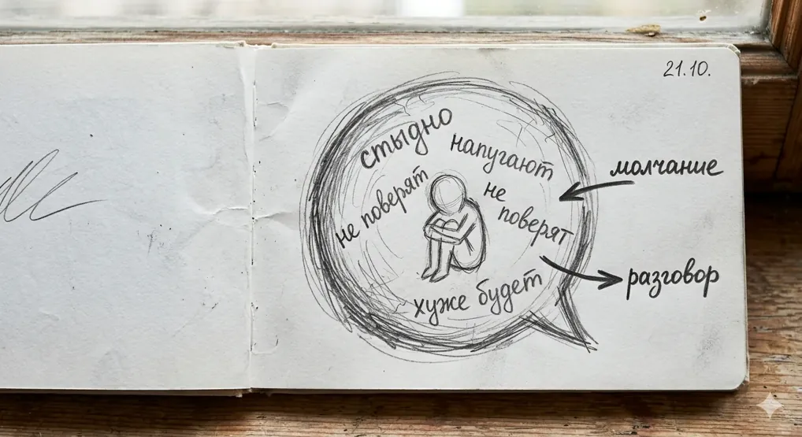
Артём кашлянул.
— Майору нужно рассказать. Это новые данные.
— Я понимаю.
— Сегодня.
— Я понимаю, Артём.
— Хорошо. — Он снова открыл ноутбук. — Потому что я тут кое-что нашёл в выходные. И мне нужно, чтобы вы это видели.
Он развернул экран — на ней была таблица, много строк.
Артём объяснял тихо и быстро — так он говорил, когда сам ещё не до конца понимал, что нашёл.
— Я анализировал паттерны. Из логов Зайцева. Время входов в систему, IP-диапазоны, совпадения с датами атак. И параллельно — публичные данные. Жалобы в школьных пабликах ВК, анонимные посты в местных чатах, удалённые сообщения, которые успели заскринить.
— И? — спросила Даша.
— Из нас трое, — он кивнул на Дашу, Лизу и Стаса. — Плюс Катя, Аня, Ника, Лера — им всем в один вечер написал тот же бот, что и Даше. Плюс Юля. Это восемь человек, о которых мы знаем. — Пауза. — Я нашёл ещё пятнадцать.
Стас поперхнулся кофе.
— Сколько?
— Пятнадцать. Возможно больше — это только те, у кого есть публичный след. Анонимные жалобы, удалённые посты, один раз — сообщение в школьном чате, которое исчезло через десять минут, но кто-то успел сохранить. Схема одна: сначала личный контакт через бота или фейковый аккаунт, потом сбор данных, потом тишина или угроза.
Тишина растянулась дольше, чем нужно было.
— Он что, продаёт это? — спросил Стас. — Ну, не знаю… шантажирует каждого по отдельности?
— Не знаю пока, зачем ему это, — сказал Артём. Он не отрывал взгляда от таблицы на экране. — База с личными делами двадцати с лишним семей — адреса, телефоны, медицинские справки, оценки, и это явно не всё, — это не просто чей-то личный список обид. Такие вещи стоят денег. На чёрном рынке. Мне не нравится, что я вообще об этом думаю. Но я думаю.
— Пятнадцать человек молчат, — медленно сказала Даша.
— Молчат. Потому что боятся. — Артём посмотрел на меня — не специально, просто взгляд. — Или стыдятся. Или думают, что это только их проблема.
Я смотрела на свой рисунок в скетчбуке. Пятнадцать человечков в пятнадцати пузырях.
— Призрак точно знает, как давить, — сказал Артём тихо, почти себе. — Будто сам через это проходил.
Никто не ответил. Фраза повисла и растворилась.
— Нам нужны их имена, — сказала Даша.
— Не все согласятся. — Артём закрыл таблицу. — Большинство не захотят.
— Тогда нужно, чтобы хотя бы один захотел. Первый. — Она посмотрела на меня. — Лиза уже захотела.
Я думала о пятнадцати людях, которые день, или неделю, или месяц ждали в тишине, никому не сказав, — и о том, как за это время молчание успевает стать толще, а человечек внутри него, наоборот, — меньше.
Пятнадцать — просто цифра. Я не знала ни одного имени, не могла написать ни одному из них.
Но я точно знала другое имя.
Пока остальные молчали, обдумывая услышанное, я украдкой достала телефон. Открыла профиль Юли Соколовой — переписки там никогда не было, я просто когда-то на него наткнулась и забыла. Курсор мигал в пустом поле. Долго — или мне так казалось.
Написала: «Привет. Я знаю, что тебе, наверное, сейчас не до сообщений от меня. Просто хочу, чтобы ты знала — я про тебя думаю. Если захочешь поговорить или просто помолчать вместе — я рядом».
Перечитала три раза. Стёрла «наверное» — слишком неуверенно, даже для меня. Вернула обратно — без него звучало так, будто я знаю точно, что у неё внутри.
Отправила, пока не передумала.
Ответа не было — ни через минуту, ни к концу разговора. Я убрала телефон в карман. Не потому что перестала ждать. Просто поняла: дело было не в ответе.
Я вернулась к разговору — Артём как раз снова открыл ноутбук.
— Есть ещё одна вещь, — сказал Артём. Голос стал чуть осторожнее. — Одно имя в списке я всё же узнал.
— Чьё?
Он помолчал секунду.
— Вика Морозова.
Конец главы 11
[Стас. Вторник, 22 октября]
Утром я первым делом загуглил своё имя. Уже который день подряд. «Стас Петров» — слишком много совпадений, ничего полезного. Добавил город. Потом «стример». Потом «Petrov_Stas».
Всю неделю картина не менялась.
Первая страница — мой канал. Вторая — обсуждение дипфейка на каком-то форуме. Третья — скриншот из чата с моим лицом и подписью «этот чел реально потерял 50 кусков на крипте лол». Четвёртая — репост видео с комментарием «подписывался на него, жаль пацана».
Я закрыл браузер. Открыл снова. Страницы никуда не делись.
Я пролистал их ещё раз, медленнее. Канал, форум, скриншот, репост — по одному каждая ссылка ничего не стоила, обычный мусор в поиске. Но сложи их вместе — и получался кто-то, кто выглядел как я, говорил вроде бы моим голосом, только собран был не мной. Будто кто-то слепил запасного из моих же лучших голов и поставил его в старте вместо меня.
— Долго сидишь, — сказала мама из коридора. — Завтрак стынет.
— Иду.
Я не пошёл. Открыл настройки своего канала на стриминговой платформе. Нашёл кнопку «удалить аккаунт». Навёл курсор. Подержал.
Три года. Четыреста сорок два часа эфиров. Восемнадцать тысяч подписчиков — было восемнадцать, сейчас семнадцать восемьсот, цифра падала каждый день как счётчик обратного отсчёта.
Я не нажал.
Потому что понял: это ничего не изменит. Канал удалю — скриншоты останутся. Форум удалят — кто-то уже сохранил. Чат зачистят — репост ушёл дальше. Это как пытаться отыграться после финального свистка.
В школе было тихо. Не подозрительно тихо — просто вторник, вторая перемена, все заняты своим. Максим из команды кивнул в коридоре — уже второй раз за неделю. Колька Рябов прошёл мимо, не заметил. Или сделал вид.
У окна в конце коридора мелькнула Вика Морозова — не усмехнулась, не бросила что-то вроде «допрыгался». В прошлом месяце она бы не упустила случая. Сейчас просто скользнула взглядом и отвернулась, будто вообще не заметила. Странно, но я не стал об этом думать — своих проблем хватало.
Я достал телефон и написал Артёму: нужен ты — после уроков.
Он ответил через минуту: кабинет информатики, Даша тоже будет.
Артём уже сидел за компьютером, когда я пришёл. Даша стояла у окна с телефоном. За окном было серо — октябрь не сдавался, давил низкими тучами. На столе рядом с ноутбуком лежал распечатанный листок со схемой. Я не успел разглядеть — только линию с точками и красную пометку в конце.
— Смотри, — сказал я и протянул Артёму телефон с браузером открытым на своём имени. — Вот что осталось.
Он листал молча. Даша подошла, заглянула через плечо.
— Форум, скриншот, репост видео, — перечислил Артём. — Это только первая страница.
— Дальше хуже?
— По-разному. — Он вернул телефон. — Что хочешь сделать?
— Удалить. Всё.
Артём на секунду замолчал, будто подбирал слова поточнее.
— Не получится.
— Я понимаю, что не получится полностью. Но хотя бы…
— Стас. — Артём взял листок со стола и положил передо мной.— Смотри. Вот что происходит с любым контентом после публикации. Ты можешь удалить своё. Канал, аккаунты, посты. Но ты не можешь удалить чужое. Форум — не твой. Скриншот — не твой. Репост — не твой. Они живут отдельно от тебя.
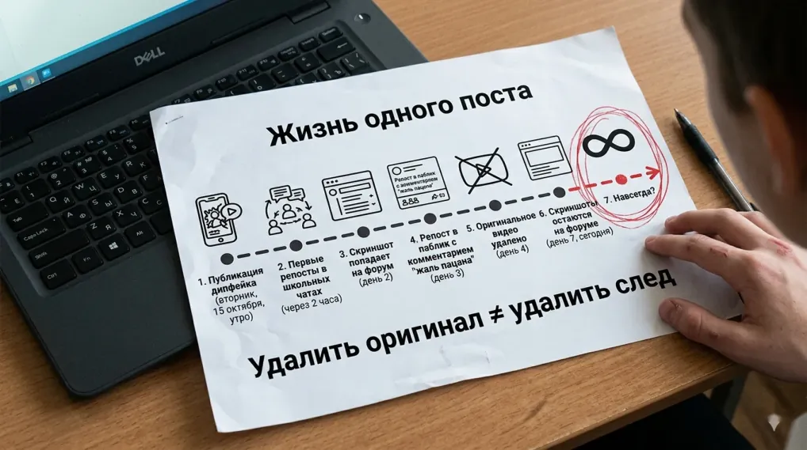
Даша опустила телефон.
— Это называется постоянство цифрового следа, — сказала она. — Умные слова для очень паршивой ситуации.
— Значит, ничего нельзя сделать.
— Можно, — сказал Артём. — Но не то, что ты думаешь.
Он развернулся к компьютеру, открыл новую вкладку.
— Смотри. Есть два подхода. Первый — пытаться стереть. Он не работает, мы уже выяснили. Второй — перекрыть. Создать столько нового контента, который тебя показывает правильно, чтобы старое ушло на вторую страницу поиска. Люди редко листают дальше первой.
— То есть стримить дальше.
— Стримить по-другому. — Артём посмотрел на меня. — У тебя восемнадцать тысяч подписчиков, которые видели дипфейк. Это восемнадцать тысяч людей, которым ты можешь объяснить, что это было и как это работает. Ни у кого из нас нет такой аудитории.
Я смотрел на него.
— Ты предлагаешь мне сделать стрим про дипфейк.
— Я предлагаю тебе сделать стрим про то, что ты реально пережил. Не лекцию. Твою историю. — Пауза. — Люди смотрят стримы потому что им интересен человек. Ты стал интереснее, чем был месяц назад. Просто не так как хотел.
Я не знал что ответить. Это звучало одновременно правильно и страшно.
На мониторе Артёма был открыт браузер с моим именем в поисковой строке. Я смотрел на результаты и думал об одном.
— А если VPN? Поставлю, буду заходить анонимно. Старые ссылки останутся, но хотя бы новых следов не будет.
Артём помолчал секунду.
— Какой VPN?
— Любой. Бесплатный. Их миллион.
— Стас. — Артём взял маркер и быстро набросал на доске три колонки. — Когда ты ставишь бесплатный VPN, ты прячешься от провайдера. Но открываешься тому, кто стоит за самим VPN. Он видит весь твой трафик. Это его бизнес-модель — собирать данные и продавать их. Бесплатный продукт, помнишь?
— У меня уже стоит, — сказал я. — Без него ни Телеграм толком не открыть, ни TikTok. Как у всех, наверное.
— В том и дело, — сказал Артём. — Спрос огромный, вот и расплодились боты в чатах, которые советуют, что скачать. Иногда это подделка — не VPN, а обычное приложение, которое просит доступ, какой ему для VPN вообще не нужен: к СМС, к уведомлениям. А туда приходят коды подтверждения — не только от банка, а вообще от всего: почты, соцсетей, того же Телеграма. Через это всё и вытягивает.
— Товар — это ты, — тихо сказала Даша.
— Именно, — сказал Артём. — В лучшем случае просто меняешь одного наблюдателя на другого. В худшем — сам открываешь дверь тому, кто вообще не должен был туда заходить.
— Так что, вообще никаким не пользоваться? — спросил я.
— Не в этом дело, — сказал Артём. — Дело в том, что оно просит при установке. VPN для работы не нужны ни СМС, ни контакты — только доступ к самому соединению. Просит больше — что-то не так, кто бы ни прислал ссылку.
Я смотрел на схему на доске. Три колонки. Простая картинка, которая объясняла то, о чём я никогда не думал когда качал что-нибудь бесплатное.
— Стас, — сказал Артём. — Про стрим. Я серьёзно.
— Знаю что серьёзно. — Я отвернулся от доски. — Дай подумать.
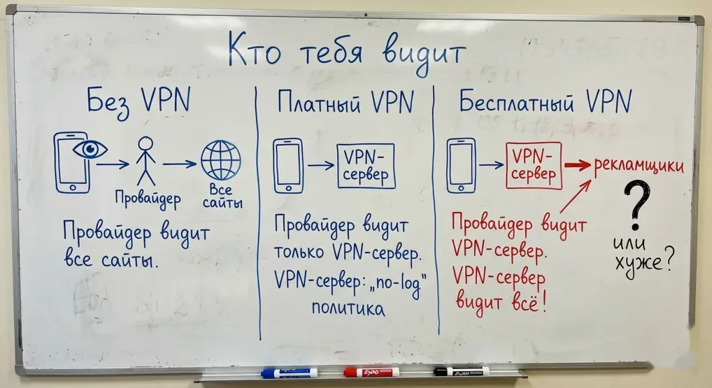
Домой я шёл пешком — автобус ждать не хотелось. Руки в карманах, капюшон поднят. Дыхание клубилось паром.
На полдороге достал телефон. Хотел проверить уведомления — и вместо этого снова открыл браузер. Сам не понял зачем сначала. Потом понял.
Артём вчера сказал про Призрака: «Будто сам через это проходил». Технарь. Знает школу изнутри. Кто вообще так глубоко сидит в технике годами после выпуска — не учитель, не завуч. Кто-то, кто разбирался в этом ещё учеником. Может, из тех же кругов, где вращаюсь я.
Я вспомнил — лет пять назад от нашей школы ещё выставляли команду на городские турниры по CS, сам застал только легенды об этом: тренер как-то обмолвился в разговоре не по теме. Название засело, не знаю почему.
Набрал: «школа 7 турнир CS архив состав». Первые результаты — мусор, рейтинги нынешних команд. Потом — форумный тред пятилетней давности, обсуждение того самого городского турнира, список команд-участников. Школа №7 — ссылкой на чей-то старый профиль.
Я кликнул. Профиль давно заброшен, но в описании — ссылка на паблик ВК «Школа №7 | Выпускники». Последний пост — три года назад.
Я открыл паблик без особой надежды. Листал вниз — фотографии с выпускного, поздравления, мемы про ЕГЭ. Обычная история любой школы.
И тут — репост на стене паблика. Без комментария, просто репост чужой записи. Сделал его какой-то Денис Архипов три года назад. Сам паблик с тех пор не обновлялся — администратор, видимо, давно забыл о нём.
Я кликнул, чтобы перейти на оригинал. «Запись удалена». Страница, с которой Денис репостнул, больше не существовала — владелец, судя по всему, удалил профиль целиком.
Но текст остался — внутри репоста, у Дениса. Удалить оригинал не значит удалить то, что с него скопировали.
Я прочитал.
Один раз. Потом ещё раз, медленнее.
Это был не пост — это был манифест. Без имени, без даты, без подписи. Но с такой болью внутри, что читать было неловко. Как будто заглянул в чужой дневник, который не предназначался для чужих глаз. Про систему, которая не видит людей. Про то, как можно просить о помощи — громко, несколько раз — и получать в ответ тишину. Про то, как тишина в конце концов перестаёт болеть и становится чем-то другим. Холодным.
Вы создали меня. Теперь живите с тем, что получилось.
Я остановился посреди тротуара. Люди обходили меня с двух сторон.
Артём вчера сказал: «Будто сам через это проходил».
Я смотрел на экран и думал: это звучит как слова человека, которого очень сильно обидели. Не злодея. Человека. Которому когда-то не помогли.
Это было хуже, чем если бы он был просто злодеем.
Конец главы 12
[Артём. Среда, 23 октября]
Среда началась с дождя.
Я смотрел в окно автобуса и думал про Архипова. Денис Архипов — аватарка с логотипом какой-то игры, последняя активность два года назад, а еще годом ранее репост чужого текста в заброшенном паблике выпускников школы номер семь. Стас нашёл это вчера вечером и прислал сразу — скриншот, без предисловий. Я перечитал его раза три, прежде чем лёг спать.
Автобус дёрнулся на остановке. Рядом кто-то слушал музыку без наушников — тихо, но достаточно раздражающе, чтобы мешать сосредоточиться, — и я всё равно открыл ноутбук на коленях, чтобы ещё раз посмотреть на таблицу с данными жертв. Двадцать три человека. Я прогонял их через одни и те же фильтры всё воскресенье — возраст, платформы, активность, паттерны поведения.
Что-то там было. Я чувствовал это ещё вчера — и только сейчас, глядя на таблицу в тряском автобусе, понял что именно.
Автобус затормозил у школы. Я закрыл ноутбук.
Стас поймал меня в коридоре у лестницы — ждал, прислонившись к стене.
— Думал про него? — сказал он тихо.
— Всю дорогу.
— Я никому не говорил. Хотел сначала тебе. — Пауза. — Архипов мог знать автора лично. Одноклассник, знакомый — кто угодно.
— Или написал сам, — сказал я.
Стас кивнул. Я посмотрел на него. Три недели назад мы были никем друг для друга. Что-то изменилось — постепенно, почти незаметно.
— Скажем на встрече, — сказал я. — После уроков.
Он кивнул. Больше ничего — звонок уже звенел.
В кабинете психолога Лиза уже сидела у окна со скетчбуком, Даша стояла у доски — смотрела на что-то, написанное мелом, почти стёртое. Стас зашёл следом за мной и сел в своё обычное кресло у двери.
Мария Сергеевна сидела за своим столом — делала вид, что читает. Или не делала вид. Она давно установила правило: пока не спросят — не вмешивается. Мы не спрашивали.
Я сел, открыл ноутбук и развернул экран.
— Смотрите. Я прогнал всех жертв через одни и те же критерии. Возраст, платформы, активность. Вот что вышло.
Даша подошла ближе. Лиза подняла голову от скетчбука.
— Девятнадцать из двадцати трёх — активные геймеры. Не просто «иногда играю» — регулярные сессии, траты внутри игр, в некоторых случаях стримы. Из оставшихся четырёх — двое активно сидят в коротких видео по шесть-семь часов в день. Это не случайность.
— Он выбирал тех, кто залипает, — сказала Даша.
— Он выбирал тех, у кого уже есть проблема с остановкой. Это другое.
Стас чуть сдвинулся на стуле. Я не посмотрел на него — намеренно.
— Объясни, — сказала Лиза.
Я взял маркер, начал рисовать на доске — просто круг со стрелкой.
— Ты делаешь действие. Получаешь награду. — Вторая стрелка. — Если награда каждый раз одинаковая, со временем перестаёт цеплять. Скучно, мозг привыкает.
— Это и так все знают, — сказал Стас, не глядя на доску.
— Знают. Но смотри. — Я стёр вторую стрелку, нарисовал вместо неё пунктир. — Если награда непредсказуемая — иногда есть, иногда нет — мозг не привыкает. Гонится сильнее. Потому что не знает, в какой раз повезёт.
— Как в казино, — сказала Даша.
— Не совсем казино. — Я покачал головой. — В казино ты понимаешь, что играешь. Здесь — нет. Здесь это просто лутбокс. Просто ещё одно видео.
— Так это про лутбоксы, — сказал Стас. Голос стал чуть резче обычного. — Значит, про меня теперь тоже?
— Ни про кого конкретно, — сказал я. — Просто про схему. Как она работает вообще, у всех.
— Звучит так, будто про меня.
Я промолчал — потому что не был уверен, что это неправда.
— И в коротких видео то же самое, — сказала Лиза тихо, будто пытаясь увести разговор в сторону, менее болезненную для Стаса. — Не знаешь, будет ли следующее видео смешным. Листаешь ещё.
— Именно, — сказал я, благодарный ей за это. — Называется непредсказуемое подкрепление. Работает одинаково — в игре, в ленте, в лутбоксах. Мозг не отличает.
— Значит, это не про силу воли, — медленно сказала Даша, будто сама только что это поняла.
— Не про силу воли, — подтвердил я. — Это механика. Не останавливаешься не потому, что слабый. Не останавливаешься, потому что так работает мозг у всех, кто в это попал.
Где-то в коридоре хлопнула дверь кабинета.
Даша повернулась к Марии Сергеевне.
— А вы про это тоже знаете?
— Знаю, — сказала она, не отрываясь от бумаг. — Называется непредсказуемое подкрепление, как Артём и сказал. Изучено давно, работает на всех без исключения.
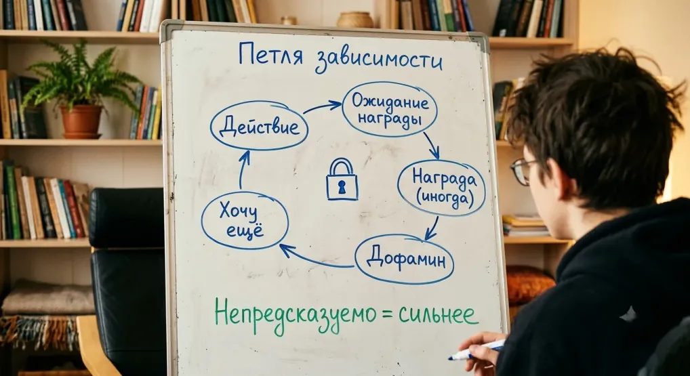
Она подняла взгляд.
— Раз уж вам это настолько интересно — и, кажется, важно каждому — давайте завтра после уроков разберём подробнее. Заодно и про другие приёмы манипуляции поговорим, не только про этот.
— И Призрак это знал, — сказала Лиза тихо.
Лиза опустила взгляд в скетчбук.
— Миша, — сказала она. — Он в самом начале спрашивал, во что я играю. Сколько времени провожу онлайн.
— Я помню, — сказал я.
— Я думала, это просто разговор.
— Это был профайлинг, — сказал я. Потом подумал, что это прозвучало слишком холодно. — Он собирал данные. Понимал, с кем имеет дело.
Лиза кивнула. Пальцы на карандаше чуть сжались.
Стас смотрел в стол.
— Двадцать тысяч, — сказал он.
Все посмотрели на него.
— За три месяца. На донаты. — Он не поднял взгляда. — Говорил отцу, что трачу меньше. Сильно меньше. Контролировал — так я себе говорил. Просто следующий лутбокс, просто ещё один. — Пауза. — Не контролировал.
Никто не ответил сразу. Даша не стала говорить «всё нормально». Лиза не стала говорить «у всех так бывает». Они просто дали этому повисеть секунду.
— Мария Сергеевна, — сказал Стас, не оборачиваясь. — Это вообще можно побороть? Или так и живёшь с этим всю жизнь?
— Помощь есть, — сказала она спокойно, не вставая из-за стола. — Разного уровня — от разговора до специалиста, если понадобится глубже. Обратиться можно в любой момент, не только когда совсем невмоготу.
Стас кивнул, не глядя на неё, но что-то в его плечах немного расслабилось.
Я смотрел на петлю, нарисованную на доске.
Я рисовал её, объясняя другим. Но пока рисовал — думал о своём. О том, как открываешь игру в одиннадцать вечера, просто проверить уведомления. И закрываешь в два ночи. И на следующий день снова. Два года подряд.
— Я тоже, — сказал я.
Стас поднял голову.
— Не донаты. Сама игра. Не мог остановиться — не потому что не пробовал. Пробовал. Ставил таймеры, удалял приложение, переустанавливал на следующий день. Два года примерно.
Тишина была другой — не неловкой. Внимательной.
— Сейчас как? — спросил Стас.
— Перестал этим летом. Почти. — Пауза. — Не полностью.
Стас кивнул. Медленно, без лишних слов — как человек, который понимает не потому, что слышал про это, а потому что знает изнутри.
Даша посмотрела на меня — коротко — и отвела взгляд, будто не совсем знала, что делать со своим лицом. Ничего не сказала. Наверное, это было почти так же хорошо, как если бы знала.
Я почувствовал что-то странное. Не облегчение — скорее пустоту. Как будто нёс что-то долго, поставил на секунду на землю, и руки не знают, что с собой делать.
Я встал, подошёл к окну. Постоял, глядя во двор, где ветер гонял по асфальту жёлтые листья. Потом вернулся, сел — уже иначе, будто перезагрузился.
— Ладно, — сказал я. — Про Архипова. Стас, покажи.
Стас вывел скриншот на экран. Даша и Лиза читали молча.
Текст был короткий. Без заголовка, без подписи. Просто абзацы — плотные, злые, очень конкретные. Про школу, про учителей, про то, как система перемалывает людей и выплёвывает. Про то, что молчать — значит соглашаться.
Последнюю строку Даша перечитала дважды — я видел, как взгляд вернулся.
— «Вы создали меня. Теперь живите с тем, что получилось», — произнесла она вслух. Не как цитату — как будто проверяла, как это звучит.
Мария Сергеевна на секунду перестала листать бумаги — рука замерла на середине страницы. Потом снова задвигалась, плавно, как будто ничего не случилось.
— Три года назад, — сказал Стас. — Оригинал давно удалён.
— Архипов мог знать его лично, — сказал я. — Одноклассник, знакомый. Кто-то, кому он дал прочитать. Или написал сам под другим именем.
— Страница почти пустая, — сказала Лиза. — Два года назад последняя активность.
— Майору, — сказала Даша. — Это его работа. Мы передаём — он проверяет.
Она сфотографировала скриншот, написала Островскому коротко, без лишнего. Я наблюдал, как она это делает: быстро, без колебаний. Год назад, наверное, сначала спросила бы — стоит ли вообще. Сейчас просто делала.
Мария Сергеевна принесла чай — молча поставила на стол, вышла. Она никогда не вмешивалась без просьбы. Просто была рядом, когда надо.
Когда расходились, в школе было уже пусто — уборщица тянула швабру в дальнем конце коридора.
Лиза ушла первой — надела наушники, кивнула всем. Стас не спешил — возился с шарфом, никак не мог замотать его как следует.
В дверях кабинета появилась Вика Морозова.
Я не сразу понял, что она специально — думал, случайно проходит мимо. Но она остановилась. Стояла в дверях и смотрела на нас — не агрессивно, как раньше. Как-то иначе.
— Я знаю, что вы этим занимаетесь, — сказала она. Голос был ровный, но чуть напряжённый — как у человека, который долго решался. — Мне нужно вам кое-что рассказать.
Все молчали, ждали.
Вика медлила.
— Не сегодня. — Она покачала головой. — Не готова прямо сейчас. Завтра. Обещаю.
Даша кивнула.
— Хорошо. Завтра. У нас тренинг после уроков, в кабинете психолога — приходи прямо туда.
Вика развернулась и ушла — быстро, не оглядываясь.
Стас постоял секунду, посмотрел ей вслед.
— Странно, — сказал он.
— Или нет, — сказал я.
Вышли мы уже в шестом часу. На улице было темно — по-октябрьски, резко, как будто кто-то выключил свет.
Я шёл к остановке и думал про Вику. Про то, что пришла сама — никто не звал. И про то, что не договорила — значит, было что.
А потом мысли сами свернули к петле на доске. Она не давала покоя — не потому что я нарисовал её сегодня. А потому что я знал её изнутри, каждый узел, каждый переход. Знал, как это ощущается, когда не можешь выйти и говоришь себе, что контролируешь.
Я сегодня сказал это вслух. Первый раз. «Не мог остановиться». При Стасе, при Даше.
Я остановился посреди тротуара, и кто-то сзади едва не налетел на меня, буркнув что-то себе под нос. Я всё стоял. Не думал, что будет именно так — будто снял с себя что-то тяжёлое и не сразу понял, что делать с этой неожиданной лёгкостью.
Я привычно начал искать причину этой лёгкости. Первая нашлась сразу — сказал вслух, оно перестало быть только моим. Вторая — нет.
Дождь начинался снова — мелкий, почти невидимый, оседающий на рукаве, а не падающий каплями.
Даша написала через минуту: «Ты дошёл до остановки?» Я не ответил сразу — просто стоял, чувствуя, как холодная морось садится на шею.
Дошёл я только через десять минут — той дорогой, которой обычно хожу за пять. Автобус, который я пропустил, давно ушёл. Следующий подошёл пустой, с работающим отоплением и запотевшими окнами. Я сел у окна и стёр пальцем кружок в конденсате — привычка ещё с пятого класса, с тех пор, как мы подружились с Дашей. Через кружок был виден только фонарь на остановке — жёлтый, размытый дождём.
Конец главы 13
[Даша. Четверг, 24 октября]
У кабинета психолога уже стояла Вика — пришла первой из всех, будто боялась передумать, если задержится хоть на минуту.
— Вот, — сказала она вместо «привет». — Пришла, как обещала.
Мы зашли, расселись. Артём смотрел в ноутбук. Стас крутил в руках карандаш. Вика устроилась с краю стола — чуть отдельно от всех, как будто ещё не решила, своя она здесь или нет.
Мария Сергеевна задержалась на семь минут — и это было странно, она никогда не опаздывала. Вошла без приветствия, положила телефон на стол экраном вверх, не садясь.
— Видела в школьном паблике. Открыли запись на бесплатные билеты на финал городского турнира по Brawl Stars. Ищут зрителей из школ для съёмок трансляции. Двадцать мест на весь город. Запись закрывается через час.
Стас выпрямился.
— Где ссылка?
— Стоп. — Она взяла телефон обратно, убрала в карман. — Ссылки нет. Я придумала это пятнадцать секунд назад.
Пауза. Стас смотрел на неё, ещё не понимая.
— Заметил, что ты сделал? Не спросил когда турнир. Не спросил где. Не спросил нужно ли разрешение родителей. Среагировал на «двадцать мест» и «час».
Он медленно опустился на стул.
— Это нечестно.
— Именно. — Она, наконец, села. Открыла папку. — Добро пожаловать на тренинг по социальной инженерии.
Следующий час я слушала и думала, что знаю всё это. Оказалось — не знаю.
Мария Сергеевна разложила на столе четыре листа. На каждом — один триггер.
— Смотрите. — Она взяла первый. — Лесть. «Ты особенный, ты единственный кто понимает, ты не такой как все». Звучит знакомо?
— Каждый второй комментарий под роликами блогеров, — сказал Стас.
— Именно. Человек хочет соответствовать образу, который ему предложили — и делает то, что от него ожидают, чтобы этому образу соответствовать.
Она взяла второй лист.
— Срочность. «Только сегодня», «осталось три часа», «решай прямо сейчас». — Она посмотрела на Стаса. — Двадцать мест на трансляцию, да?
Он поднял руки, но тут же нахмурился.
— А если дедлайн реальный? Распродажа правда кончается в полночь, билеты правда заканчиваются. Как отличить?
— Хороший вопрос. — Мария Сергеевна кивнула. — Настоящие сроки существуют, это правда. Разница в том, что настоящий дедлайн не требует решения прямо сейчас, в эту секунду, без возможности проверить. Тебе всегда должно хватать времени хотя бы спросить у кого-то ещё. Если этого времени специально не оставляют — вот тогда стоит насторожиться.
— Давление времени отключает критическое мышление. Мозг переходит в режим «реагировать», а не «думать». Поэтому в любой схеме обмана почти всегда есть дедлайн. Настоящий или придуманный.
Третий лист.
— Страх. «Если не сделаешь — будет хуже». Страх сужает восприятие до одной точки — угрозы и способа от неё избавиться. Всё остальное человек просто не видит. Поэтому жертвы шантажа часто платят сразу, даже не подумав о других вариантах.
Лиза чуть сжалась на стуле. Я заметила, но ничего не сказала.
Мария Сергеевна помолчала секунду, прежде чем взять четвёртый лист.
— Несколько лет назад в этой школе был случай, — сказала она, не глядя на нас. — Ребёнок просил помощи. Несколько раз. Его не услышали. — Пауза. — Я до сих пор об этом думаю.
Она не стала продолжать. Взяла четвёртый лист.
— FOMO. Все уже согласились, ты один отстаёшь, не упусти момент. Страх остаться за бортом группы — древний механизм. Раньше люди выживали стаей. Одиночка погибал. Мозг до сих пор в это верит, даже когда речь идёт просто о лайках под фоткой.
— У меня в TikTok тоже так было, — сказала я. — Конкурс, «только для первых десяти». Я знала что это, скорее всего, фейк. Но всё равно на секунду захотела проверить — а вдруг.
Мария Сергеевна кивнула.
— Вот и весь триггер. Ты знала — и всё равно почувствовала тягу. Это не глупость. Это как раз работает на всех, потому что встроено в инстинкты, а не в наш интеллект.
Она сложила листы стопкой.
— Эти четыре триггера лежат в основе почти любой манипуляции. От рекламы до мошенничества. От школьного давления до серьёзной пропаганды. Механика всегда одна — и для неё не нужны технологии. Не нужно взламывать телефон. Достаточно знать чего человек боится и чего хочет.
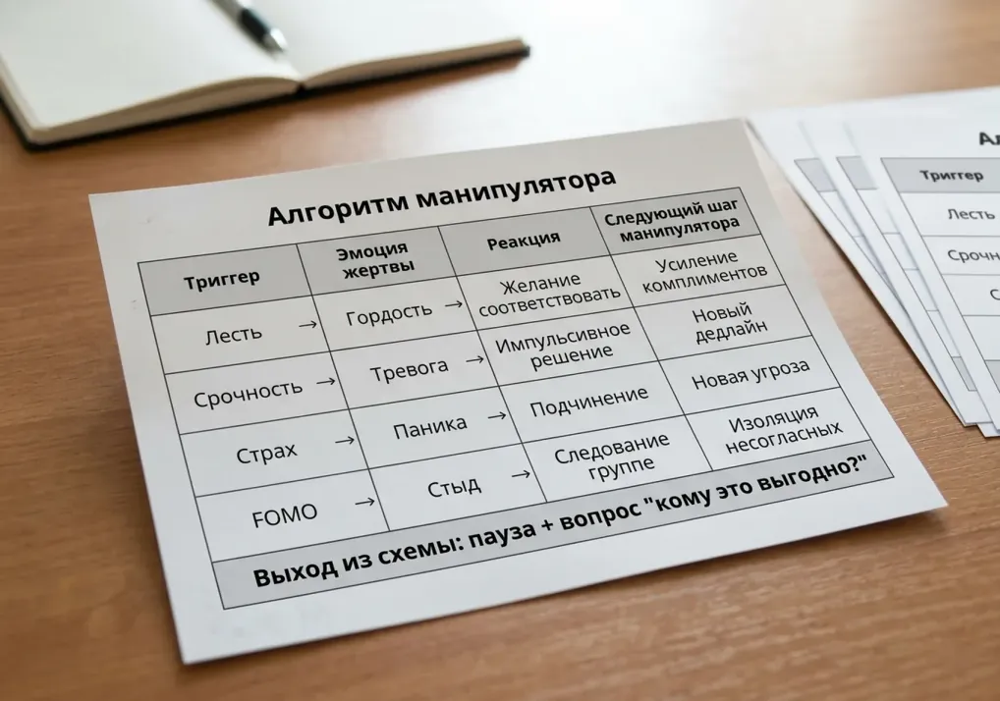
Артём молчал какое-то время. Потом сказал — тихо, не поднимая взгляда от ноутбука:
— Он делал всё это. С каждым из нас. Просто по-разному.
— Можешь привести пример? — спросила Мария Сергеевна.
— Со мной — страх. Угроза раскрыть то, что я скрываю.
— А с тобой? — Мария Сергеевна посмотрела на Лизу.
— Срочность, — сказала Лиза не сразу. — Он почти всегда давал мало времени на ответ. Сутки, иногда меньше.
Вика сидела молча. Смотрела в стол — неподвижно, как будто что-то обдумывала.
Мария Сергеевна раздала листы с флоучартом.
— Посмотрите на последний столбец, — сказала Мария Сергеевна. — Что происходит после того как жертва подчинилась?
— Новая угроза, — сказала Лиза. — Или новый дедлайн.
— Верно. Уступка не заканчивает давление — она его усиливает. Манипулятор понимает, что схема работает и повторяет её. Именно поэтому «сделаю один раз и он отстанет» — иллюзия.
Вика подняла голову.
— А если… — она остановилась. — Если тебя вербовали. Просили стать информатором. Обещали, что это поможет восстановить справедливость.
Все посмотрели на неё.
— Какой триггер это был? — спросила она у Марии Сергеевны. Голос был спокойный, но я слышала под ним что-то другое.
— Лесть в сочетании с апелляцией к справедливости, — сказала Мария Сергеевна спокойно. — «Ты единственная кто видит правду» — классическая формула. Плюс подтверждение уже существующей обиды. Это особенно сильно работает, когда человек действительно был несправедливо обижен. Манипулятор не создаёт чувство — он берёт готовое и направляет его.
Вика кивнула. Медленно. Как будто что-то внутри встало на место.
— Он знал про мою обиду, — сказала она. — Использовал её.
— Да.
— И я почти согласилась.
— Но не согласилась, — сказала Мария Сергеевна. — Это важно.
Я заметила, как легко они говорят друг с другом — без объяснений, без предисловий. Мы все переглянулись между собой. Было ясно: наш психолог знает про историю Вики больше, чем мы.
Тренинг кончился в начале шестого. Мария Сергеевна собрала листы, сказала, что ей ещё нужно в учительскую, и мы вышли — впятером, вместе с Викой.
На своём месте — подоконник в торце коридора, где мы всегда собирались, — было пусто и тихо. Уроки давно закончились, этаж опустел. За окном темнело.
— Расскажи, — сказала я Вике. Пришло время.
Вика заговорила не сразу.
— Мне написали три недели назад, — начала она. — Просили наблюдать за вами. Сообщать что происходит. Говорили, что я единственная кто видит правду про Артёма.
Она посмотрела на него быстро, потом отвела взгляд.
— Я не согласилась. Даже учитывая всё, что было между нами — это разные вещи. Доносить на людей — это не то же самое, что злиться на них.
— Спасибо, — сказал Артём тихо.
— Дело не в тебе. Просто это неправильно. — Вика помолчала. — Я бы и не пришла к вам сейчас, если бы не одно совпадение.
— Какое? — спросила я.
— На выходных была у подруги. Её старший брат Костя сидел с нами, рассказывал про школу — он у нас же учился, три года назад закончил. И сказал: «за спортзалом, в Яме, вечно кто-нибудь да торчал». Я как услышала «Яма» — что-то зацепило.
— Почему? — спросил Стас.
— Это слово было в переписке. Он написал «как в старые времена, у Ямы» — просто к слову. Я тогда не поняла, о чём он. Подумала, опечатка.
— А Костя объяснил, что это?
— Я переспросила. Говорит, была низина за спортзалом, у гаражей. Туда с улицы приходили — покурить, потрепаться, чтоб никто не видел. Так и звали, сколько он себя помнил.
Вика кивнула на окно.
— И до меня дошло — вот же это место. — Она показала вниз.
Я посмотрела туда. Сразу за спортзалом был школьный забор, а за ним, где земля уходила вниз, — небольшая низина у гаражей. Ничего особенного: вытоптанная площадка, пара бетонных блоков, куда можно сесть. С территории школы туда не пройти — только с улицы, обойдя забор. Потому, наверное, там и собирались: рядом со школой, но уже как бы не школа.
Никакого названия у этого места на моей памяти не было. А у кого-то — было.
— Значит, он учился здесь, — сказал Артём.
Вика долго молчала.
— Я два дня думала, говорить вам или нет, — сказала она, наконец. — Сначала рассказала Марии Сергеевне — позавчера, после уроков. Столько всего было между нами. Не хотелось снова лезть, выглядеть, как будто набиваюсь в друзья. — Она отвернулась к окну. — Но она сказала — если это может помочь остановить его, какая разница, что было между нами. Это важнее. И я поняла, что она права.
Я кивнула. Никто не стал комментировать — и это было правильно.
— Костя помнит кого-то конкретного?
— Я спросила. Он сразу вспомнил одного парня — замкнутый, его травили, хорошо разбирался в технологиях. После выпуска как в воду канул.
— Имя? — спросила я.
— Костя не помнит точно. Говорит — что-то на А. Алексей, может быть.
Стало тихо. Только внизу, во дворе, ветер гонял что-то по асфальту.
Я взяла телефон и написала майору. Коротко — контакт Кости, слово «Яма», просьба проверить выпускников школы №7 три года назад. Отправила не раздумывая.
— Тебе нужно быть в нашем чате, — сказала я Вике. — Не на словах через меня — напрямую. Если что-то узнаешь — пишешь сразу всем.
Вика молча достала телефон.
— Какой чат?
— Сейчас добавлю.
Я несколько секунд листала контакты, потом подняла взгляд.
— Добавила, — сказала я.
Телефон Вики тихо пискнул — уведомление о новом чате.
Когда всё было отправлено, мы начали собираться. Стас натянул капюшон, Лиза убрала скетчбук — расходились молча, вечер и так вышел длинным. Вика ушла первой, кивнув на прощание, — уже своя, но ещё не привыкшая к этому.
Мы вышли на крыльцо. Стас и Лиза свернули к остановке, а Артём придержал меня за рукав.
— Подожди. Мне нужно с тобой поговорить. Не при всех.
Стас обернулся.
— Идите, я догоню, — сказал Артём.
Они ушли в сторону остановки — две фигуры под фонарём. Мы остались на крыльце вдвоём. Было холодно; из открытой двери за спиной тянуло теплом, а спереди — сырым октябрьским воздухом.
— Что? — спросила я.
Он достал телефон. Протянул мне, не говоря ни слова.
Я прочитала. Потом ещё раз.
«Если к понедельнику расследование не остановится — ваши друзья по гильдии узнают кто их лидер. И не только они.»
— Когда пришло?
— Вчера. Уже дома, когда пришёл из школы.
— И ты молчал весь день.
— Слышал, что говорила Мария Сергеевна. Про страх. — Он смотрел не на меня, а туда, где за забором темнела Яма. — Что страх сужает восприятие. Я прочитал это вечером — и просто замер. Убрал телефон, лёг спать.
— А сейчас?
— Сейчас думаю. — Пауза. — Понедельник — это три дня.
Я смотрела на экран. Думала про людей в той гильдии — тех, кого я никогда не видела и не узнаю, наверное, никогда. Для них Артём был кем-то другим два года. Если это рухнет — рухнет не просто секрет. Рухнет всё, что они о нём думали.
— Что будем делать? — спросила я.
— Не знаю. — Он забрал телефон. — Пока не знаю.
Телефон в моих руках завибрировал. Сообщение от майора — короткое: «Получил. Проверяю выпускников».
Потом завибрировал снова. Не майор. Общий чат команды. Новое сообщение от номера, которого ни у кого из нас не было.
Одна фраза и значок в конце:
«Я среди вас». 👻
Артём взглянул на мой экран. Потом на меня. Не сказал ничего — просто долго смотрел, как будто слова не находились.
Я не выдержала первой. Опустила телефон, потом сунула его в карман куртки — экраном к подкладке, чтобы не видеть это сообщение. Будто это что-то меняло.
Артём молча кивнул — как будто понял без слов.
На крыльце вдруг стало холоднее, чем было пять минут назад.
Конец главы 14
[Артём. Пятница, 25 октября]
«Я среди вас».
Я перечитал сообщение, наверное, раз двадцать за ночь. Экран гас, я снова нажимал кнопку, и три слова появлялись опять — на этот раз будто чуть громче, чем в прошлый.
Спал я часа три. Не из-за страха — из-за перебора вариантов в голове, который не отпускал. Кто мог это написать? Кто-то из класса? Кто-то, кто украл доступ к чату? Или Призрак просто врёт, чтобы мы перестали спать спокойно?
Утром в школе было обычно шумно — звонок, топот в коридоре, кто-то жаловался на контрольную по геометрии. Даша поймала меня у входа.
— Ты спал? — спросила она, глядя на моё лицо.
— Немного.
— Это заметно.
Мы пошли к лестнице вместе. Я поправил очки — привычка, которая включалась, когда я не знал, что сказать.
— Думаешь, это правда кто-то из нас? — спросила Даша тише.
— Не знаю. Технически — необязательно быть участником чата, чтобы видеть, что в нём происходит. Если у кого-то на телефоне стоит шпионское приложение — оно может пересылать переписку напрямую, минуя сам чат. — Я пожал плечами. — Не обязательно предатель. Может, просто кто-то, кого взломали раньше нас.
— Но звучит как предатель.
— Звучит. Не факт, что есть.
Она помолчала.
— Не меняем поведение? Как договорились?
— Не меняем.
Это было легче сказать, чем сделать. В понедельник — дедлайн. Призрак обещал рассказать всем, кто такой Shadowbyte на самом деле, если расследование не остановится. У меня было два дня, чтобы найти способ его остановить, либо приготовиться к тому, что Тёмный Альянс узнает, кто их лидер на самом деле — раньше, чем я сам решу рассказать. И школа, скорее всего, тоже. Даша знала про дедлайн. Не знала, что из двух угроз меня больше пугает первая, не вторая.
На уроке физики дверь класса открылась, и завуч произнесла моё имя — почти так же, как в прошлый раз.
— Беляев, к директору.
В животе всё сжалось. В прошлый раз это закончилось кабинетом с майором и сообщением от Призрака про Shadowbyte.
В этот раз кабинет был тот же. Майор Островский — тот же. Только Елена Викторовна впервые не сидела за своим столом. Она сидела рядом с майором — как человек, который позвал поговорить, а не отчитывать. Она не смотрела на меня так, как в прошлый раз — как на подозреваемого, который мог взломать телефон Юли.
— Садись, Беляев, — сказала она. Голос был непривычно тихим для директора.
Я сел. Молчал. Ждал.
— Майор предоставил мне новые данные по делу, — начала она, глядя в папку перед собой, не на меня. — IP-адреса. Данные сходятся с показаниями свидетеля. — Пауза. — Профиль совпадает с другим человеком. Не с тобой.
— Я знаю, — сказал я.
Елена Викторовна подняла взгляд.
— Майор с самого начала говорил, что одних технических навыков недостаточно для подозрения. Он был прав. А я тогда, в актовом зале, говорила вещи, за которые мне следовало бы извиниться раньше. Не только перед Юлей. Перед тобой тоже. Я позволила себе и другим думать, что технически грамотный ученик — это подозреваемый по умолчанию.
Я не нашёл, что ответить. Взрослые редко так говорят — без «но», без оправдания.
— Я не сразу услышала, — продолжила она. — Теперь — слышу.
— И ещё одна вещь. — Она положила ладонь на папку, но открывать не стала. — Мы обсудили её до твоего прихода. Твоё предупреждение за прошлый год.
Я выпрямился на стуле. В этом кабинете после слова «предупреждение» обычно ничего хорошего не следовало.
— Оно останется в личном деле, — сказала Елена Викторовна. — Удалять я его не буду. Но рядом появится вторая запись. О том, что ты сделал в этом октябре.
Я не ответил. Не сразу сообразил, что именно почувствовал.
Островский молча кивал всё это время, не вмешиваясь. Когда Елена Викторовна закончила, он заговорил сам.
— Провайдер прислал предварительные данные по IP-адресам — тем, что мы получили от Зайцева, — сказал он, обращаясь ко мне.
— Диапазон не школьный, другой конец города. Совпадает с районом, который дал нам ваш контакт — Константин. Через него же пришло имя.
— Алексей, — сказал я тихо.
— Алексей. Без фамилии пока. — Майор откинулся на спинку стула. — Знаешь, в чём разница между тобой и им? Технически вы могли бы быть похожи. Оба разбираетесь в системах лучше большинства взрослых.
Я молчал. Слушал.
— Он находит уязвимость — и использует её, чтобы навредить. Шантажирует, крадёт, угрожает. — Майор посмотрел на меня. — Ты находишь уязвимость — и сообщаешь о ней. Друзьям. Мне, в итоге. Хотя мог промолчать и дальше.
— Ответственное раскрытие, — сказал я. — Вы говорили об этом раньше.
— Похожий взгляд на слабые места в системе. Одни и те же знания. Одна и та же возможность сделать вред незаметным. Разница только в том, что ты выбираешь сделать с этим знанием.
Он закрыл папку.
— Я скажу честно, Артём. Где-то в начале у меня была мысль, что это можешь быть ты. Вслух я этого не говорил — рано было делать выводы. Но мысль была.
Он посмотрел на меня — не извиняясь, просто давая мне знать.
— Спасибо, что пришёл, Артём, — сказала Елена Викторовна. Она впервые назвала меня по имени, не по фамилии. — Это всё, что я хотела сказать.
Я кивнул. Что-то внутри чуть отпустило.
После уроков мы собрались в кабинете информатики — я, Даша, Лиза, Стас. Вика пришла позже всех, с телефоном в руке, набирая что-то на ходу.
— Костя ответил, — сказала она, садясь. — Помните, я говорила, что он вспомнил кого-то с именем на «А»?
— Алексей, — сказал я. — И у майора по их данным выходит то же самое.
Вика кивнула, не отрываясь от экрана.
— Костя сказал больше. Есть человек, с которым он до сих пор иногда переписывается — не из нашей школы, познакомились давно в каком-то игровом чате. Денис Архипов. Костя говорит, он хорошо знал того Алексея — даже лучше, чем те, кто учился с ним рядом.
Стас выпрямился так резко, что стул скрипнул.
— Денис Архипов? Тот самый? Из паблика?
— Какого паблика? — спросила Вика.
— Я нашёл репост манифеста три дня назад, — сказал Стас. — Заброшенный паблик выпускников. Репостнул человек с этим именем. Мы передали майору сразу.
Тишина стала другой.
— Майор проверял, — сказал я медленно, вспоминая разговор в кабинете. — Он упомянул, что по имени из паблика ничего не нашли — старый аккаунт, никаких актуальных контактов, тупик.
— А у Кости — оказывается, живой контакт, — сказала Даша. — Прямо сейчас.
Мы посмотрели друг на друга. Полиция искала два дня и упёрлась в стену. Вика просто спросила у Кости.
— Это странно, — сказала Лиза тихо. — Что мы нашли быстрее.
— Не странно, — сказал я. — Костя знает Дениса не через тот аккаунт. Другой чат, вообще не связанный с тем профилем, который проверял майор.
Вика снова посмотрела на экран.
— Костя написал ему ещё раз. Сказал, что речь не про неприятности для Дениса. Что речь про детей, которым сейчас угрожают. — Она подняла взгляд. — Он думал почти сутки. Сегодня написал, что готов поговорить. Прямо сейчас, если можно. Он в кафе через дорогу от школы.
Стас присвистнул тихо.
— Идём к нему?
Даша на секунду задумалась.
— Впятером — слишком похоже на допрос. — Она посмотрела на меня. — Артём, пойдём вдвоём. Остальные ждут здесь, на связи.
Лиза кивнула, не спрашивая. Стас откинулся на стуле, скрестив руки — не обиженно, просто соглашаясь с логикой.
Вика тоже кивнула — коротко, глядя в стол. Второй день как в общем чате, а всё ещё держалась так, будто ждала, что кто-то спросит, зачем она вообще здесь. Никто не спросил. Кажется, это её удивило.
Кафе оказалось маленьким, с запахом кофе и блинов, почти пустым в это время дня. Денис сидел за столиком у окна — выше, чем я представлял, лет двадцати с небольшим, в потёртой куртке, с тем особенным видом человека, который явно не хочет здесь находиться, но всё равно пришёл. Он на секунду напрягся, увидев нас, потом кивнул на свободные стулья.
Официантка принесла чай, который он заказал, видимо, пока ждал нас. Чашка осталась стоять нетронутой.
— Я не уверен, что должен это делать, — сказал он, не глядя ни на кого конкретно.
— Спасибо, что пришли, — сказала Даша.
— Я не для вас пришёл. — Он, наконец, поднял взгляд. — Тот пост в паблике, который вы нашли. Его написал Алексей.
Что-то внутри меня сместилось. Имя «Алексей» и тот безымянный текст из паблика — до этой секунды это были два разных факта в моей голове. Теперь это было одно и то же.
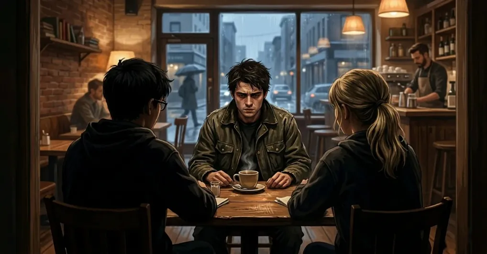
— Вы знали его лично? — спросил я. — Учились вместе?
— Нет. — Денис покачал головой. — Я вообще не из вашей школы. Мы познакомились на форуме, лет пять назад — обсуждали моды для одной игры, потом перешли в общий чат. Через него я и Костю знаю — Костя был в том же чате, мы все там тусили.
— То есть вы никогда его не видели? — спросила Даша.
— Никогда. У него даже фото в профиле не было — аватарка, какой-то нарисованный персонаж. Я даже не знал толком, как он выглядит. — Денис помолчал. — Но он был… умный. Реально умный. Помогал всем разбираться с настройками, с модами, со всем. И один раз — написал длинный пост о себе. Не в чате, а у себя на странице в ВК, отдельно. Я наткнулся на него случайно, через старую закладку.
— И это был манифест, — сказал я.
— Можно и так назвать. — Денис посмотрел в окно. — Я просто понял, что это крик о помощи. От человека, которого я знал только по нику и стилю письма. — И вместо того чтобы написать ему лично, или хоть кому-то рассказать, — я нашёл паблик его школы. Открытая стена, никто не модерировал — обычная группа выпускников. Я даже не подписывался, просто зашёл и репостнул его пост туда. Без единого слова.
— Зачем именно туда? — спросил я.
— Хотел, чтобы кто-то из его класса увидел. Кто-то, кто его реально знал, не я. Подумал — может, они поймут лучше, что с этим делать. — Денис горько усмехнулся. — Переложил ответственность на людей, которых даже не знал. Удобно, правда?
Он помолчал.
— Когда Костя написал мне про школу №7, про какие-то атаки и переслал мне тот самый пост — я узнал его сразу. Понял, о ком вы спрашиваете. Первая мысль была: не лезь. Это не моё дело больше, прошло три года.
— А вторая мысль? — спросила Даша тихо.
Денис посмотрел на неё.
— Вторая — что если бы я тогда написал ему хоть слово в ответ, вместо того чтобы просто репостнуть и уйти. Или хотя бы оставил комментарий — попросил кого-то обратить внимание. Может, всё пошло бы по-другому. — Он сжал руки на столе. — Не обещаю, что сейчас это что-то изменит. Но промолчать второй раз я не смог.
Я молча кивнул. Понимал это лучше, чем хотел признавать.
— Что вы знаете технически? — спросил я осторожно. — Про него. Как он вообще… работал?
Денис на секунду улыбнулся — без радости, просто узнавание.
— Он писал читы. Не покупал — сам разбирал игру, находил уязвимости в коде, переписывал. Бесплатно выкладывал в чате для всех. — Денис пожал плечами. — В какой-то момент разработчики игры закрыли уязвимость, которую он нашёл — обновление вышло через неделю после того, как он об этом написал. Не знаю, совпадение или они правда читали наш чат.
Я промолчал. Что-то внутри меня узнало эту схему.
— Он никогда не использовал то, что находил, против людей. Не воровал аккаунты, не продавал доступ, хотя мог бы — за такие вещи платят. Просто выкладывал. Бесплатно. Хотел, чтобы все видели, что он может.
— Это всё равно взлом, — сказал я осторожно. Не обвиняя — констатируя.
— Да, — согласился Денис. — Но взлом, чтобы все получили читы бесплатно — не то же самое, что взлом, чтобы украсть у людей деньги и угрожать детям. — Он посмотрел на меня. — Ты ведь это понимаешь? Что технология — это просто инструмент. Вопрос всегда в том, что ты с ним делаешь.
Я понимал. Слишком хорошо понимал.
Денис помолчал. Потом добавил — тише, будто мысль пришла только сейчас:
— Тот Алексей раздавал всё бесплатно. А то, что вы описываете, — другое. Он собирает чужие данные, доступы, переписку. Это уже не читы для всех. Это товар. И если он это копит, рано или поздно кто-нибудь захочет это купить. Или забрать.
Денис посмотрел на часы на стене кафе.
— Мне пора, — сказал он, вставая. — Я сказал то, что знал. Больше не звоните через Костю — если вспомню что-то ещё, я сам напишу ему.
— Спасибо, — сказала Даша.
Он кивнул, оставил на столе деньги за нетронутый чай и ушёл, не оборачиваясь.
Мы вернулись в школу минут через десять. В кабинете информатики Лиза, Стас и Вика сидели в тех же позах, в которых мы их оставили — будто время для них не двигалось.
— Ну? — спросил Стас.
Даша рассказала коротко — без пауз, без драматизации. Я слушал и смотрел на схему, расчерченную на листе ещё с прошлой недели: хронология атак, бэкдор, паттерн входов.
— Технический портрет совпадает, — сказал я, садясь за стол. — Самоучка. Работал в одиночку. Использовал доступ не ради вреда — ради того единственного места, где у него получалось.
Я взял маркер. Дописал на схеме новую короткую заметку рядом с кругом, где сходились три линии: IP-диапазон, имя от Кости, характер от Дениса.
Вопросительный знак внутри круга остался.
Это больше не было загадкой в полном смысле слова. У нас было имя. Не было ответа на главный вопрос — кто этот человек, где он теперь, и что он сделает, если мы подойдём слишком близко.
Я обвёл вопросительный знак ещё раз. Чуть сильнее, чем нужно.
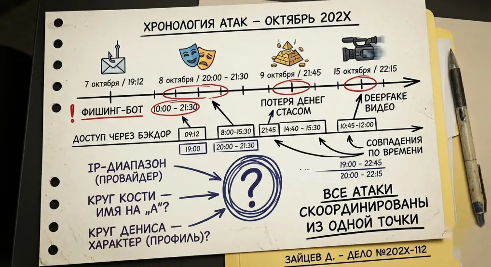
Телефон Вики, лежащий на краю стола, тихо завибрировал. Потом, почти сразу, у меня. Сразу у Стаса. У Лизы. У Даши.
Все потянулись к телефонам одновременно.
Одно и то же сообщение, в общем чате, с незнакомого номера:
«Вы становитесь все ближе. Приятное чувство — когда тебя, наконец, ищут. Жалко, что вы тратите время на Дениса, а не на себя. До понедельника осталось два дня. Скоро узнаете, зачем я считаю эти дни.» 👻
Тишина стала плотной — другой, не такой, как минуту назад.
— Он знает про Дениса, — сказал Стас медленно. — Прямо сейчас.
Никто не ответил.
Я смотрел на экран, потом на лица вокруг — Даша, Лиза, Стас, Вика. Все смотрели на свои телефоны, как на что-то внезапно ставшее чужим.
Кто-то из нас был дверью, через которую он входил. Я не знал, кто.
За окном темнело быстрее, чем обычно для конца октября.
До понедельника оставалось два дня.
Конец главы 15
Разоблачение
Неделя четвёртая · 28–31 октября + эпилог[Даша. Понедельник, 28 октября]
Еще в субботу утром я написала в чат одно слово: «Проверьте».
Без объяснений — все поняли. После пятницы никто не нуждался в расшифровке.
Артём ответил первым: «Уже». Потом написал длинное сообщение прямо в чат — как проверить разрешения приложений, какие признаки искать, что делать, если найдёшь что-то незнакомое, и заодно — как включить двухфакторную защиту тем, у кого её ещё нет. «На случай, если пароль всё-таки где-то утёк», — приписал он отдельно. Я добавила только: «Проверьте сегодня. Не завтра».
Сама я провозилась с телефоном час, открывая каждое приложение по очереди. Чисто. У Стаса и Лизы — тоже.
Вике я написала отдельно, в субботу вечером — она так и не отозвалась в общем чате: «Не спешка. Но если найдёшь что-то — сразу пиши, не держи в себе».
Она ответила одним «ок» — и замолчала.
К воскресному вечеру больше ничего не написала. Я позвонила сама.
— Ты проверяла? — спросила я вместо «привет».
— Начала, — сказала Вика. Голос был напряжённым. — Долго не могла себя заставить.
— Хочешь, я останусь на линии, пока смотришь?
Пауза. Потом:
— Ладно.
Я слышала, как она листает список приложений на том конце линии — тихие тычки пальцем по экрану, иногда бормотание себе под нос: «это стандартное, это стандартное», — а потом всё стихло, и эта тишина растянулась куда дольше, чем нужно было для одного простого списка.
— Вика?
— Тут что-то, — сказала она медленно. — Battery Saver Pro. Не помню, чтобы ставила.
— Открой разрешения.
Снова быстрые касания по экрану — Вика искала нужный пункт.
— Микрофон. Контакты. Список приложений. Работает в фоне.
Голос у неё дрогнул на последнем слове.
— Когда ты в последний раз проверяла телефон после того, как тебя взломали в прошлом году? — спросила я.
Долгая пауза.
— Никогда, — сказала Вика. — Мне сказали поменять пароль. Я поменяла. И всё.
— Значит, оно стояло всё это время.
— Получается, да.
Я слышала, как она дышит — медленно, контролируя себя.
— Это не твоя вина, — сказала я. — Ты знаешь это, да?
— Умом — знаю, — сказала она не сразу. — А внутри всё равно кажется, что я вас всех подставила.
Голос был ровный, но я слышала, чего ей это стоило. С нами она всего несколько дней — а винит себя так, будто подвела старых друзей. Хотя сама, кажется, ещё не до конца в это поверила.
— Когда добавила меня в чат тогда, в четверг, — сказала Вика, — оно, наверное, сразу всё передало. Вот как он узнал.
— Не «оно». Не ты, — сказала я. — Он. Это он использовал то, что нашёл. Разница та же, про которую Артём всегда говорит.
Она ничего не ответила. Но я почувствовала, как её немного отпустило.
— Сделай скрин разрешений, прежде чем удалять, — сказала я. — Артём просил всех сохранять, если что-то найдётся.
— Секунду. — Короткий щелчок на том конце — звук скриншота. — И дату установки тоже?
— Да, если видно. Отправь Артёму, как закончишь.
Несколько секунд она возилась с телефоном.
— Отправила, — сказала Вика. — Удаляю?
— Удаляй.
Я услышала один тихий звук — будто что-то стёрлось с экрана.
— Артём там ещё что-то про двухфакторную защиту писал, — сказала Вика. — В прошлый раз я просто пароль сменила. В этот раз, наверное, стоит и это включить.
— Стоит, — сказала я.
Ещё немного тишины — она возилась с настройками.
— Готово. Теперь код с нового устройства просит.
Потом Вика выдохнула, длинно, словно до этого не дышала, как следует.
— Сразу легче стало, — сказала она. — Как будто закрыла дверь, через которую он смотрел.
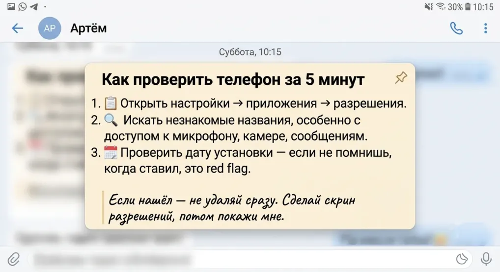
В понедельник утром я рассказала остальным сама — быстро, без лишних слов. Стас выслушал и просто кивнул:
— Окей. Источник нашли, прикрыли. Дальше что?
— Дальше — майор, — сказала я. — Он обещал ответ на запрос сегодня.
Майор пришёл сразу после уроков. Мы ждали его в кабинете Марии Сергеевны — это стало уже привычкой: важные разговоры теперь только здесь, где нет камер и есть чайник, который она ставит, не спрашивая.
Кабинет был тем же — узким, тёплым, с цветами на подоконнике и фотографиями гор на стене, которые совершенно не вязались с тем, что обычно здесь обсуждалось.
Майор пришёл не один. Вместе с ним — Елена Викторовна.
— Мы уже поговорили, — сказала она, заметив моё удивление. — Я знаю, что вы сейчас услышите. Поэтому посчитала необходимым присутствовать при разговоре.
Она выглядела напряжённой: вошла и сразу встала у окна, у самого края комнаты, не садясь за стол вместе с остальными.
Майор раскрыл тонкую папку на столе Марии Сергеевны.
— Из школьного архива подняли личное дело. Заняло несколько дней — нужно было официальное разрешение от районного управления образования.
— И? — спросил Стас.
— Алексей Волков. Окончил эту школу три года назад. — Майор посмотрел на нас по очереди. — Совпадает всё: район по IP, контакт от вашего Кости, характер от Дениса.
Имя, которое мы держали внутри вопросительного знака почти неделю, наконец, получило фамилию.
Я ждала, что почувствую облегчение. Вместо этого — странную тяжесть, как будто узнавание не решило загадку, а добавило новую.
Мария Сергеевна замерла, услышав фамилию. Не резко — просто остановилась на секунду, как человек, вспомнивший что-то, что давно лежало где-то на дне.
— Волков, — повторила она тихо. Потом встала, подошла к шкафу с папками — тому самому, который всегда стоял закрытым, — и достала одну, тонкую, с потрёпанным уголком.
— Я говорила вам в четверг, — сказала она, садясь обратно. — Про случай, о котором я до сих пор думаю. Это был он.
В кабинете стало очень тихо.
— Расскажите, — сказал майор. Не требование — просьба.
Мария Сергеевна открыла папку, но не сразу начала говорить — смотрела на страницы, будто заново их читала.
— Он приходил ко мне сам, без направления, и не один раз, — сказала она, наконец. — Я не могу пересказывать вам, что он мне говорил. Это останется между нами, даже спустя три года, даже сейчас. — Она положила ладонь на листы бумаги, а потом совсем закрыла папку. — Но про то, что делала я, рассказать могу. И должна.
— С чем он приходил? — спросила я.
— С тем, что его травят. Не один человек — несколько, по очереди, будто по расписанию. Называли его странным, говорили, что он слишком много времени проводит за компьютером, что с ним «что-то не так». — Мария Сергеевна посмотрела на свои руки.
— И что вы сделали? — спросил Артём.
— Пыталась. — Голос у неё стал тише. — Говорила с его классным руководителем. Предлагала собрание с родителями. Каждый раз получала один и тот же ответ в разных формулировках: что это не настолько серьёзно, чтобы поднимать шум.
Она замолчала, глядя на закрытую папку перед собой.
— А потом он перестал приходить. И я решила, что, может быть, всё само разрешилось. Это было удобнее, чем продолжать настаивать против системы, которая не хотела слушать.
Она подняла взгляд — впервые с начала рассказа, посмотрела прямо на нас.
— Я не оправдываю себя. Я была одним из взрослых, которые должны были сделать больше.
Я заметила, как Елена Викторовна, стоявшая у окна всё это время, чуть отвернулась — не демонстративно, просто на секунду дольше задержала взгляд на улице, чем требовалось. Она ничего не сказала. Но что-то в её лице изменилось — так меняется лицо человека, который вдруг вспомнил то, что давно решил не вспоминать.
— Классный руководитель, о которой вы говорите, уже не работает в школе, — сказал майор тихо. — Со слов Елены Викторовны — ушла два года назад, по собственному желанию, никак не связанному с этим делом.
Директор молча кивнула, подтверждая.
— Знаю, — сказала Мария Сергеевна. — Но дело не в одном конкретном человеке. Любая система иногда упускает то, что не вписывается в привычную картину. Это можно и нужно исправлять — но обвинять кого-то одного было бы слишком просто.
[Три года назад. Сентябрь.]
Алексей стоял перед дверью учительской. Внутри слышался смех — обычный, ничего не значащий смех взрослых на перемене.
Он поднял руку, чтобы постучать.
Опустил.
Уже приходил три раза. Первый раз ему сказали: «Сами разберитесь, это ваши дела с классом». Второй: «Не преувеличивай, подростки всегда так друг с другом». Третий раз классный руководитель даже не подняла глаз от журнала — просто кивнула, не глядя, и продолжила писать.
Дверь так и осталась закрытой.
Он постоял ещё секунду. Потом развернулся и пошёл по коридору — туда, где никто не видел его лица.
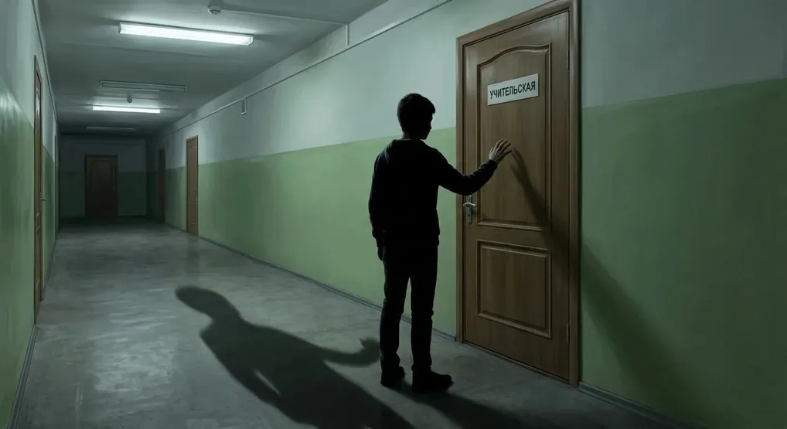
[Сейчас.]
Лиза молчала всё это время, глядя в стол. Потом тихо сказала:
— Дверь просто закрывалась. Снова и снова.
— Лиза, — начала я.
— Я молчала восемь месяцев, — сказала она, не поднимая глаз. — Не знаю, сколько раз пытался он. Но я знаю, каково это — когда тебя не слышат не один раз, а снова, и снова, и снова, пока не перестаёшь пытаться. — Она, наконец, посмотрела на меня. — Я не оправдываю то, что он делает сейчас. Просто я знаю, что он чувствовал. Слишком хорошо знаю.
В кабинете стало очень тихо.
— Это не делает то, что он творит, правильным, — сказал Артём осторожно.
— Нет, — согласилась Лиза. — Но это объясняет, откуда оно взялось. Это разные вещи.
Майор закрыл свою папку.
— Это не оправдание для того, что происходит сейчас, — сказал он. — Но это часть картины. Полной картины.
— Что дальше? — спросил Стас. — Вы его найдёте?
— Будем пытаться. — Майор тяжело вздохнул. — Адрес в деле трёхлетней давности. Может быть уже не актуален.
Он не сказал «не волнуйтесь» или «мы справимся». Просто констатировал факт, не приукрашивая.
После того как он и Елена Викторовна ушли, Мария Сергеевна осталась с нами. Налила чай, который никто не попросил, но никто и не отказался.
— Спасибо, что рассказали, — произнесла я.
— Не благодари, — сказала она тихо. — На это было непросто решиться. Но вам важно видеть не только улики. Важно видеть человека.
В дверь тихо постучали — заглянула завуч. Сказала, что Мария Сергеевна нужна на пять минут: что-то по расписанию кружков.
— Я быстро, — сказала она и вышла, оставив чашки на столе.
Мы посидели ещё немного в тишине.
Потом Стас посмотрел на часы на стене и сказал то, о чём, кажется, думали все:
— Сегодня понедельник.
Уточнять, что это значит, не пришлось — мы и так помнили: Призрак назначил этот день ещё в пятницу, и нам оставалось только гадать, что он готовит.
Телефоны молчали.
— Может, он просто… передумал? — спросила Лиза без особой надежды.
— Вряд ли, — сказал Артём тихо.
Он смотрел куда-то мимо меня, и что-то в его голосе звучало напряжённее, чем должно было.
Я не спросила, что он имеет в виду. Не сейчас.
Стас снова посмотрел на часы.
Никто не сказал вслух, что до конца понедельника оставалось ещё почти восемь часов.
Конец главы 16
[Артём. Вторник, 29 октября]
Тишина длилась с пятницы — с последнего напоминания о дедлайне. Четыре дня без единого сообщения от Призрака, и я почти решил, что угроза рассеялась сама собой, как воздух выходит из шарика, который забыли завязать.
Сообщение пришло утром, в прихожей, пока я надевал кроссовки.
«Один секрет — это мелко для меня. Я подумаю, что с этим делать дальше» 👻
Я перечитал три раза. Не прямая угроза «расскажу про Shadowbyte» — что-то другое, более холодное. Как будто Призрак сам потерял интерес к мелкому шантажу одного человека и теперь решал, во что превратить эту угрозу дальше.
В животе появилось холодное ощущение — не страха разоблачения. Страха, что я весь последний месяц боялся неправильной вещи.
В школе я сел за свой ноутбук в кабинете информатики на первой перемене и открыл мониторинг. После встречи с Зайцевым майор разрешил мне иногда проверять активность на бэкдоре — не трогать, только смотреть логи, раз доступ к самим личным делам всё равно был закрыт отдельно. Первую неделю я заходил туда каждый день. Потом расследование сдвинулось на другое — Костя, Яма, ожидание ответа от провайдера, — и я как-то перестал. Не специально. Просто навалилось столько всего, что про пустой лог, который никогда ничего не показывал, я забыл.
Сейчас я открыл его — впервые за несколько дней — просто чтобы убедиться. Просто на всякий случай, после такого сообщения.
Лог был чистым. Подключений не было. Но сам факт, что я уже не мог не проверять — это само по себе было ответом.
Даша подошла, села рядом со мной.
— Что не так? — спросила она тихо. — У тебя лицо как в тот день, когда нашёл папку Зайцева.
Я показал ей экран телефона.
Она прочитала, нахмурилась.
— «Подумаю, что с этим делать дальше», — повторила она. — Это что значит?
— Не знаю точно. Но звучит не как обычный шантаж лично мне. Звучит как… — Я подбирал слово. — Как будто рычаг против меня ему надоел, и он решает, чем его заменить.
— Тогда какой смысл молчать дальше? — спросила Даша. — Если рычаг ему больше не интересен в том виде, в каком был.
Вопрос был честным, и от этого только хуже — и одновременно яснее.
— Никакого, — сказал я. — Если он сам обесценил угрозу, молчание защищает уже не меня. Просто привычку молчать.
— Тогда скажи им сам, — сказала Даша. — Сегодня. Пока не сказал он — про что-то, что ещё хуже, что мы даже не предвидим.
Звонок на урок прозвенел резко, как будто система решила, что разговор затянулся.
В тот же день, после уроков, в кабинете информатики собрались все пятеро — Даша, Стас, Лиза, Вика и я. Учитель уже ушёл, дверь мы прикрыли сами. Я сел за свой стол, открыл ноутбук — машинально, просто чтобы руки чем-то занять. Даша достала из рюкзака свёрнутую схему — ту самую, которую мы дополняли каждую неделю с самого начала: хронология атак, бэкдор, имена и стрелки, которые теперь почти все нашли своих хозяев. Мы давно решили не оставлять её ни в одном кабинете — слишком много имён, слишком легко попадётся на глаза кому не нужно.
Я закрыл ноутбук, чтобы никто не смотрел в экран, пока я говорю.
— Мне нужно сказать кое-что, — начал я. — Сегодня утром пришло сообщение. Не прямая угроза мне лично — что-то более расплывчатое, но от этого не легче. И я понял, что время, когда я мог молчать, уже прошло.
Я снял очки, протёр стёкла — привычка, когда собираюсь сказать что-то неудобное.
— Помните, я говорил майору, что был дома и играл в онлайн-игру в день одной из атак? Это не вся правда. Я играю в одной MMORPG уже два года. Под ником Shadowbyte. Там я веду гильдию из тридцати человек. Они думают, что мне двадцать и я учусь в институте.
В кабинете стало тихо — той особой тишиной, в которой слышно, как кто-то перестаёт дышать носом и начинает ртом.
— Призрак узнал, — продолжил я. — С самого начала. Угрожал рассказать всем — вам, моим друзьям по гильдии, майору. С прошлой среды у меня был дедлайн: расследование останавливается, или секрет раскрывается. Я никому не сказал, кроме Даши. Молчал, потому что… — Я замялся, подбирая слово, которого у меня обычно хватает с запасом. — Потому что было стыдно. Я учу всех правилу «никогда не выдавай себя за другого человека онлайн» — и сам его нарушаю уже два года.
Лиза смотрела на меня — не с осуждением, с чем-то более узнаваемым.
Первым отреагировал Стас. Он откинулся на стуле, хмыкнул — но не зло, по-доброму, как смеются над собой, а не над другими.
— Артём Беляев, лидер гильдии из тридцати человек, — сказал он, растягивая слова. — Ты хотел казаться крутым. Бывает, бро. У меня для этого был донат на пятьдесят тыщ, у тебя — фейковый диплом в игре. Дешевле вышло, если честно.
Это была не насмешка. Это было приглашение в клуб людей, которые тоже когда-то хотели казаться не тем, кто они есть.
— Спасибо, — сказал я. Голос вышел тише, чем хотелось.
Вика молчала дольше всех. Когда она заговорила, голос звучал странно знакомо — так говорят люди, которые узнают в чужой истории кусок своей.
— Я тоже хотела быть кем-то другим, — сказала она. — Не игровым персонажем. Просто… человеком, у которого всё под контролем. Который не дал взломать свой телефон второй раз. — Она помолчала. — Маска — это не всегда ложь ради вреда. Иногда это просто место, где не так больно быть собой.
Я кивнул. Это было точнее, чем я мог бы сформулировать сам.
— Разница, — сказал я, — в том, что я никого не обманывал ради денег и не вредил людям через эту маску. Но я всё равно врал. И теперь это знает человек, который точно использует ложь во вред.
— Ну, сейчас мы знаем все вместе, — сказала Лиза тихо. — Рычага больше нет.
Даша посмотрела на меня — спокойно. Она единственная знала это раньше всех и всё равно ждала, пока я скажу сам.
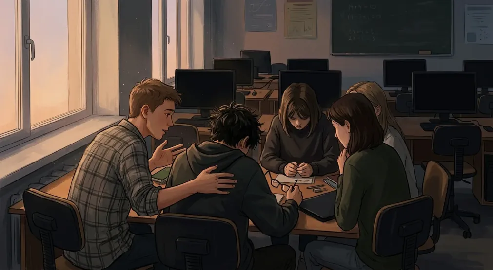
Мой телефон завибрировал. Я взглянул на экран.
Новое сообщение. Не в общий чат — лично мне.
«Через пять минут я возьму то, что мне нужно. Узнаем, успеешь ли ты меня остановить. Смотри внимательно, Shadowbyte» 👻
Я показал всем экран, не говоря ни слова.
Лиза зажала рот рукой. Стас выругался вполголоса.
У меня внутри всё сжалось — не от страха за себя. От того, что понял слишком поздно: пока я говорил про маски и гильдии, он готовил атаку, и предупреждать майора Островского было уже поздно — пяти минут не хватило бы даже на звонок.
Ноутбук на столе тихо завибрировал — уведомление. Я откинул крышку. Окно мониторинга бэкдора светилось красным. Подключение — впервые за много дней.
— Что это? — спросила Даша, наклоняясь.
— Он зашёл, — сказал я. Пальцы сами легли на клавиатуру. — Через тот же вход, который мы оставили специально, чтобы он попался.
Я открыл лог в реальном времени. Строки бежали быстро. Сначала было непонятно, куда именно он движется — пакеты шли не туда, где раньше стоял сервер с личными делами. Не туда, где была изоляция.
— Куда он идёт? — спросила она.
— Не знаю пока, — сказал я, вглядываясь в адреса. — Не к основному серверу — если бы он туда полез, я бы знал, как его остановить, мы готовы именно к этому. Он идёт куда-то ещё.
Строка за строкой адрес становился яснее. Я понял, куда он идёт — не сразу, а через секунду, которая показалась длиннее, чем была.
— Это резервная копия, — сказал я. Голос предательски дрогнул. — Бэкап персональных данных. Я даже не знал, что он существует отдельно от сервера — никто никогда не упоминал.
— Это плохо? — спросил Стас.
— Очень, — сказал я. — Если бы он шёл на основной сервер, я был бы спокоен — там защита, я бы знал, как её держать. Но это… — Я смотрел на экран, чувствуя, как внутри всё холодеет. — Это вообще никто не защищал. Пока не знаю, как это остановить. А если там лежит то же самое, что было на сервере — очень скоро все данные школы окажутся у него.
— Сколько у нас времени? — спросила Даша.
Я посчитал скорость передачи против объёма бэкапа.
— Минут пятнадцать. Может, меньше.
На экране дёрнулась цифра — три процента. Потом пять. Он уже качал.
— Окей, — сказала Даша, и в её голосе прорезалось что-то от тренировок, от голоса капитана команды на площадке. — Что нам нужно сделать? Распределяй роли. Сейчас.
Это было то, чего мне не хватало — не паника, а структура.
— Мне нужно перекрыть канал передачи, — сказал я. — Сам вход — тот же, что мы знаем, и его лучше не трогать целиком — пусть остаётся, если понадобится полиции. В логе видно — он зашёл через старую административную учётку Зайцева, тот же ключ, которым был создан бэкдор. Если отключить только её — он потеряет доступ, а вход останется на месте. Только я не уверен, как это правильно сделать, чтобы не задеть остальное.
— Звоню отцу, — сказал Стас, уже набирая номер. — У него знакомый сетевой админ в фирме, ставил им защиту в офисе. Может подсказать быстрее, чем мы будем гадать.
— Я напишу Косте, — сказала Вика, уже набирая сообщение. — Он сидел на этих форумах дольше всех нас. Может, знает что-то про то, как он обычно действует.
Она отправила сообщение и придвинулась чуть ближе к моему экрану — следить за прогресс-баром, пока ждала ответа.
— Лиза, можешь следить за временем и записывать всё, что происходит? Нам понадобится точная хронология.
Лиза кивнула, достала телефон, начала печатать заметку.
— Я звоню майору, — сказала Даша.
Никто не спросил, зачем — это было очевидно. Просто нужно было, чтобы это сделал кто-то, а не все одновременно.
Стас отошёл к окну с телефоном у уха, говорил быстро, нервно — не своим обычным тоном лёгкого пофигизма.
— Пап. Слушай внимательно. Мне нужен Серёга, тот, который вам сеть ставил. Срочно. Не объясню сейчас почему, просто… поверь, пожалуйста.
Через минуту он вернулся, протягивая телефон мне.
— Серёга на линии. Говорит, объясняй технически, он поймёт.
Я взял трубку, начал объяснять — что вижу в логе, какая учётка, какой объём трафика. Голос на другом конце был спокойным, деловым, задавал точные вопросы про версию системы и права доступа. Через две минуты он сказал:
— Не удаляй учётку и не меняй пароль через общую панель — он может это заметить и успеть переподключиться по-другому. Зайди через консоль, отключи именно сессию, не саму учётку, потом заблокируй её отдельной командой.
— Спасибо, — сказал я, уже вводя команды одну за другой.
— Это учётка Зайцева, — сказал я Даше, не отрываясь от консоли — она как раз пересказывала майору по телефону то, что я говорил секунду назад.
Ответ майора прозвучал неожиданно.
— Он говорит — не спеши, — передала Даша удивленно. — Держи его на линии, они отслеживают IP в реальном времени. Не давай прогресс-бару зайти за пятьдесят процентов — а до этого порога не разрывай, чем дольше он подключён, тем точнее они его определят.
Это звучало неправильно — всё во мне хотело защёлкнуть дверь немедленно. Но я кивнул и продолжил наблюдать, дав счётчику ползти дальше, не отрывая взгляд от цифры на экране.
Двадцать процентов. Тридцать. Я считал каждый процент как удар пульса.
— Майор говорит — есть, поймали адрес, — сказала Даша, не отрываясь от телефона. — Можно разрывать соединение.
— Разрываю, — сказал я, вводя команду. — Через три секунды не будет. Потом отдельно заблокирую саму учётку.
Прогресс-бар на экране замер на тридцати девяти процентах. Потом начал медленно откатываться назад — соединение разрывалось.
— Получилось? — спросила Вика, заглядывая через плечо.
— Получилось, — сказал я. Ввёл вторую команду — блокировку учётки — и только тогда заметил, что задерживал дыхание последние несколько минут.
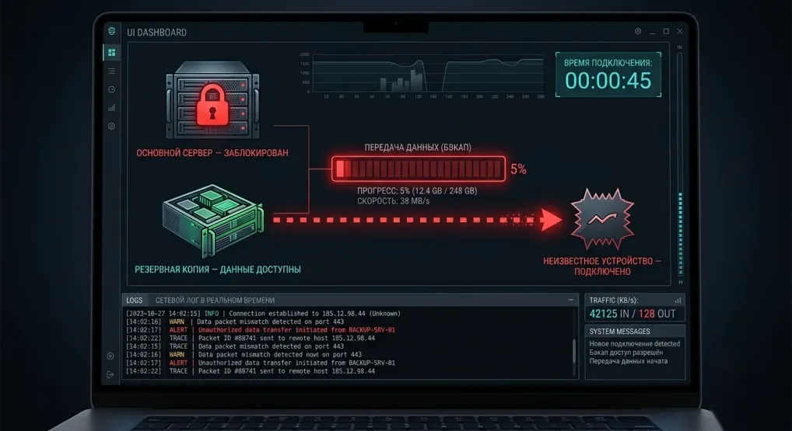
Даша опустила телефон — потом снова поднесла его, нажав что-то на экране.
— Включаю громкую, — сказала она. — Всем нужно это слышать.
— Получилось, — сказал голос майора из динамика, спокойный, почти довольный. — IP зафиксирован, адрес установлен. Молодцы.
— А данные? — спросил я. — Тридцать девять процентов всё-таки ушли. Разве это не проблема?
— Не в этот раз, — сказал майор. Пауза. — Можете не переживать про то, что он скачал. В бэкапе не было настоящих данных. Мы подменили его полторы недели назад, как только узнали про бэкдор. То, что он сейчас забрал, — это методические материалы про юридическую ответственность за хакерство и про принципы добросовестного раскрытия уязвимостей. Пусть почитает. Полезно будет.
Стас фыркнул от смеха — первый раз за весь день.
Я смотрел на остановившийся прогресс-бар, пытаясь это переварить.
— То есть всё это было… подставой? — спросил Стас, обращаясь прямо к телефону.
— Не всё, — сказал майор из динамика. — Реальный был только сам бэкдор и сам факт ловушки. А что лежало внутри — это мы решили подменить, как только узнали о нём.
— Почему нам не сказали? — спросил я.
— Не потому что не доверял вам, — сказал майор. — Доверял. Но в таких операциях правило простое: чем меньше людей знают детали заранее, тем меньше шанс, что что-то выдаст игру — фраза в чате, слишком спокойный взгляд в неправильный момент. Не из-за вас лично. Из-за того, как вообще работают подобные ловушки. — Пауза, и в его голосе прозвучало что-то похожее на улыбку. — Если честно, я рассчитывал именно на то, что вы будете нервничать настоящим образом. И вы не подвели.
Я не знал, злиться мне или восхищаться. Наверное, и то, и другое сразу.
— Я вам тогда написал, — сказал я. — На прошлой неделе, когда только заметил исходящие пакеты. Что он мог успеть забрать что-то с сервера ещё до того, как вы его закрыли.
В динамике повисла пауза.
— Помню, — сказал майор. — Проверяли. По логам полной выгрузки не было — успел заглянуть, но забрать весь объём не успел. Не идеально чисто, но и не катастрофа. Сколько именно он тогда унёс — точно не знаем до сих пор.
Я промолчал. Если не знают сколько — значит, не знают и где это теперь.
— А новый адрес совпадает с тем, что было у нас на Волкова из школьного архива? — спросил Стас.
— Нет, не совпадает, — сказал майор. — Новый адрес, не тот, что в личном деле. Провайдер дал его точно, прямо с этого подключения. Выезжаю проверить на месте. Свяжусь, как будет, что сказать.
Связь оборвалась. В кабинете стало непривычно тихо — без его голоса из динамика.
Я понял: ловушка майора сработала именно там, где должна была — не на содержимом, а на самом факте подключения.
Стас тяжело опустился на стул.
— Мы только что нашли, где живёт Призрак, — сказал он, и в его голосе не было ни капли обычной бравады.
— Может, его уже скоро поймают, — сказала Лиза. — Майор же за этим и поехал, разве нет?
В её голосе было что-то похожее на настоящую надежду — редкую гостью в этом разговоре.
— Хотелось бы, — сказала Даша осторожно. — Но мы уже несколько раз думали, что близко — а потом он снова оказывался на шаг впереди. Поживём — увидим.
Лиза кивнула, не сразу отпуская надежду. Потом закрыла заметку в телефоне, посмотрела на меня.
— А что будет с твоим секретом? — спросила она тихо. — Теперь, когда мы знаем?
— С вами — ничего страшного, — сказал я. — Вы уже знаете, и вы здесь. — Я помолчал. — А с гильдией — не знаю. Там тридцать человек. Они думают, что я старше, что я уже студент. Я пока не готов решить, что с этим делать.
Вика помолчала, потом сказала:
— Не обязательно решать прямо сейчас. Иногда правильный момент просто появляется сам, когда не торопишь его.
Телефон Даши завибрировал. Она взглянула на экран — и я увидел, как лицо у неё меняется.
— Новое сообщение, — сказала она. — В общий чат. От него.
Она положила телефон на стол, развернула экраном к нам.
«Вы закрыли дверь быстрее, чем я думал. Но дверей в этой школе больше, чем вы знаете» 👻
Конец главы 17
[Даша. Среда, 30 октября, 7:40]
Майор позвонил, когда я ещё завязывала шнурки.
— Адрес подтвердился, — сказал он без предисловий. — Квартира съёмная. Хозяйка говорит, парень жил один, тихий, платил исправно. Съехал вчера вечером — забрал вещи, оставил ключи в почтовом ящике.
— Вчера вечером, — повторила я. — Прямо перед тем, как…
— Прямо перед тем, как мы получили IP. Или сразу после. На этот раз его осторожность оказалась быстрее нашей реакции.
Я молчала, пытаясь представить: минуту назад выгружал методички про хакерство через нашу ловушку, а потом — собрал вещи и ушёл. Спокойно. Не в панике.
— Нашли что-нибудь в квартире? — спросила я.
— Немного. — Майор сделал паузу — той самой, что обычно предшествовала чему-то, что он решал, говорить ли вообще. — На столе остался блокнот. Не улика. Просто рисунки — школьные коридоры, по памяти. И фраза сверху на первой странице: «Я предупреждал».
Я не знала, что с этим делать. Не угроза. Не план. Просто фраза человека, который, кажется, верил, что делает что-то правильное.
— А про двери? — спросила я. — Артём проверяет?
— Проверяет, и мы тоже со своей стороны смотрим,— сказал майор. — Не торопитесь с выводами в обе стороны.
[Артём. Среда, 30 октября, 8:15]
Я просидел над логами почти час, прежде чем сказать команде то, что не хотелось говорить.
— Ничего, — сказал я. — Прогнал всё: бэкдор, школьную сеть, Wi-Fi роутеры в кабинетах. Никаких новых точек входа. Если есть техническая дверь, которую мы не нашли, она хорошо спрятана. Или её просто нет.
— То есть он соврал? — спросила Лиза.
— Не знаю, врал ли он, — сказал я. — Может, он просто говорил не про сервера.
Даша кивнула — она тоже об этом думала.
— Хозяйка сказала майору, что блокнот остался открытым на странице с рисунком школы, — сказала она тихо. — Может, «двери» — это не про сети вообще. Может, про то, что в любой школе дверей для боли больше, чем кажется. Травля. Молчание. То, что взрослые не замечают. Закрыть одну техническую дыру не значит закрыть всё остальное.
Я посмотрел на результат поиска — ничего.
— Это вероятнее, чем то, что мы упустили что-то техническое, — сказал я. — Но менее удобно. С сервером я хотя бы знаю, что делать.
— С остальным мы тоже знаем, — сказала Даша. — Просто это другой вид работы.
[Вика. Среда, 30 октября, 8:50]
Директорский кабинет пах кофе и чем-то цветочным.
Мы стояли всей командой — я, Даша, Артём, Стас, Лиза, и Мария Сергеевна.
— Вы предлагаете рассказать всей школе, — сказала Елена Викторовна. Не вопрос — утверждение, которое она проверяла на прочность вслух. — Без подробностей про то, кто это сделал.
— Без имени, — подтвердила Мария Сергеевна. — Но с правдой про масштаб. Дети и родители имеют право знать, что проверить.
— Это вызовет панику.
— Молчание вызовет худшую панику, — сказала Даша, — когда люди узнают сами. А они узнают — слухи в школе разлетаются быстрее, чем официальные объявления.
— Лучше мы скажем правду, чем кто-то добавит к ней то, чего не было, — сказал Стас. Без обычной бравады в голосе — впервые за долгое время серьёзно.
Елена Викторовна посмотрела на меня — наверное, потому что я единственная из присутствующих когда-то публично обвиняла Артёма перед всей школой.
— А ты что думаешь? — спросила она прямо.
Я не ожидала вопроса.
— Я думаю, что когда мне самой нужно было сказать правду — про то, что было у меня на телефоне, — было страшно. Но молчать было хуже. — Я смотрела на свои руки. — Если бы кто-то взрослый раньше сказал мне прямо, что бывает, и что это не стыдно, — я бы не тянула так долго.
Елена Викторовна долго молчала, глядя в окно.
— Хорошо, — сказала она, наконец. — Собрание после уроков. Я объявлю сама. Но это только начало — после собрания дальше работаете вы. Мне сложнее объяснять детям так, чтобы они слышали друг друга, а не меня.
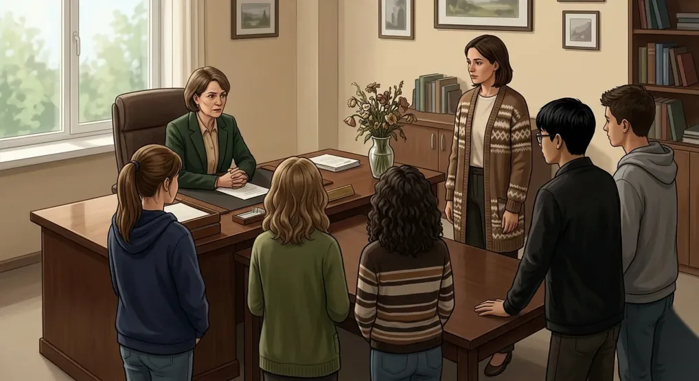
[Стас. Среда, 30 октября, 14:30]
Собрание в актовом зале — гул, пока Елена Викторовна не сказала «тише» в микрофон второй раз.
Я сидел в первом ряду, рядом с Артёмом. Месяц назад я бы сидел где угодно, только не рядом с ним, на виду у всей школы.
Директор сказала всё спокойно: была попытка получить доступ к личным данным учеников, школа взяла ситуацию под контроль, всем нужно проверить, не получали ли странные сообщения, не происходило ли что-то подозрительное в последние недели.
После — гул, как пчелиный рой.
В коридоре, пока расходились по кабинетам, я увидел двух девочек на подоконнике — одна листала что-то на экране, другая придвинулась ближе, чтобы видеть.
— Я тогда на тренировке перешла по той ссылке, — донеслось до меня. — Карту не ввела, что-то остановило в последний момент. Но если у них был доступ тогда — мало ли что они сделали с этим потом.
— Покажи мне свои настройки, — сказала вторая. — Артём показывал нашему классу, как проверять разрешения. Я покажу тебе.
Я не знал, кто это и о чём именно речь. Но дальше по коридору всё повторялось — другие лица, та же картина.
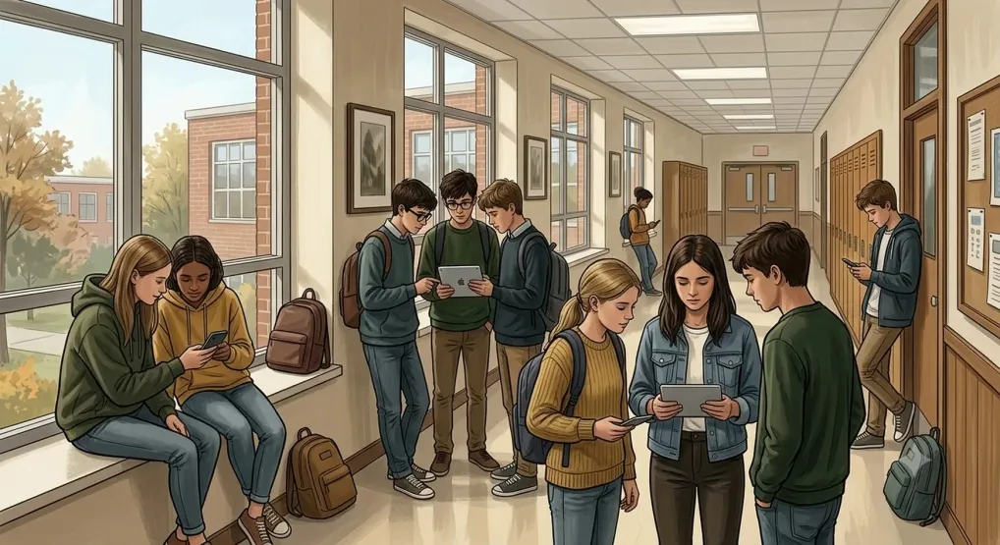
Игорь — одноклассник, с которым мы редко общались, — подошёл ко мне.
— Слышал, ты как-то связан с этим, — сказал он, не обвиняюще, скорее с интересом.
— Связан, — сказал я. — Если что-то странное видел или слышал — лучше скажи учителям. Без шуток, братан. Я серьёзно.
По всей школе в этот час происходило одно и то же — кучками по два-три человека, экраны телефонов друг у друга в руках.
[Лиза. Среда, 30 октября, 16:00]
В кабинете психолога после уроков набралось человек десять — те, кто остался, когда Мария Сергеевна сказала: «Если кто хочет поговорить — я здесь до вечера».
Я не планировала оставаться. Но когда в кабинет зашла заплаканная девочка из седьмого класса, на секунду никто не сдвинулся — все были заняты своими разговорами. Я подошла первой, показала на свободное кресло рядом.
— Садись, если хочешь, — сказала я.
Она села, не глядя на меня.
— Что случилось? — спросила я тихо.
Она долго молчала, прежде чем ответить — что-то про сообщения, которые приходили ей ещё в сентябре, про то, что она тогда никому не сказала.
— Я тоже когда-то долго молчала про похожее, — сказала я. — Восемь месяцев. Стало бы легче гораздо раньше, если бы я сказала сразу.
— А что если расскажу, и будет хуже? — спросила она.
— Иногда бывает, — сказала я честно. — Но реже, чем кажется. И почти всегда легче делить это с кем-то, чем нести одной.
Уже почти стемнело, когда я случайно заметила в дальнем углу кабинета знакомое лицо. Юля Соколова — та самая, чьи фотографии разлетелись по школьным чатам в начале октября. Она не приходила в школу почти три недели. Сидела тихо, никому не мешая, и слушала.
Я не знала, когда она пришла и кто её привёл. Но она была здесь — и этого, кажется, было достаточно для первого шага.
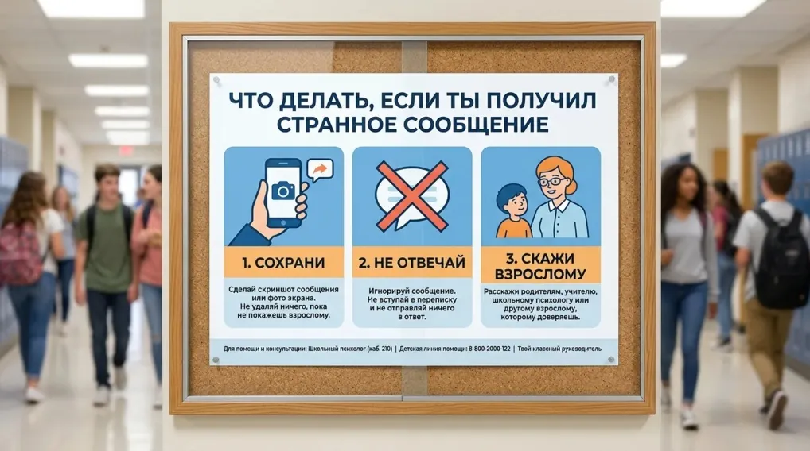
[Артём. Среда, 30 октября, 18:30]
Вечером я зашёл в кабинет психолога. Хотел проверить одну мысль, которая не давала мне покоя весь день.
— Даша считает, что «двери» — это вообще не про сети, — сказал я Марии Сергеевне. — Что это про школу. Про то, чего взрослые не замечают.
Мария Сергеевна выслушала, кивнула.
— Это многое объясняет, — сказала она тихо. — Если человек выбирает слово «дверь» не случайно — может, он действительно говорит не про сети. А про то, что школа сама не замечает, сколько таких дверей оставляет открытыми каждый день.
Я не нашёл, что на это ответить, и просто остался сидеть в углу.
Кабинет почти опустел, когда снова кто-то вошёл.
Незнакомая девочка, остановилась у двери, как будто не до конца решив, заходить ли дальше. Мария Сергеевна подняла взгляд, кивнула ей — мол, заходи, всё в порядке. Девочка подошла ближе, но обращалась не к ней — почему-то посмотрела на меня.
— Я писала анонимно в школьном паблике в начале месяца. Про сообщения от бота. Удалила пост через час, испугалась.
Что-то сместилось у меня в голове — медленно, как будто кто-то наконец нашёл нужный пазл среди десятков похожих. Одна из пятнадцати. Строчка в таблице, которую я окончательно составил неделю назад по анонимным следам, без имён — я смотрел на неё столько раз, что цифры почти перестали значить живых людей. А теперь у неё было лицо. Голос. Руки, которые теребили край рукава, пока она говорила.
Тогда я насчитал двадцать три человека всего — восьмерых, кого мы знали лично, и пятнадцать таких строчек без лиц. Эта была одной из них — вплоть до сегодняшнего дня.
— Я помню этот пост, — сказал я. — Спасибо, что пришла рассказать.
— После собрания поняла, что не одна, — сказала она. — Раньше казалось, что только я такая глупая, что попалась.
— Ты случайно не смотришь короткие видео часов по пять в день? — спросил я.
Она странно посмотрела на меня.
— Откуда ты знаешь?
— Не знаю, — сказал я. — Догадываюсь, по схеме. Он искал тех, кому сложно остановиться, — это не про тебя. Это про его метод отбора.
Мария Сергеевна подошла чуть ближе.
— Останься, если можешь, — сказала она девочке мягко. — Про бота — это одно. А про то, что сложно оторваться от видео — давай поговорим отдельно, если хочешь. Это не то, что решается за один разговор, но и не то, с чем нужно оставаться одной.
Мария Сергеевна жестом пригласила её сесть, и я понял — список из пятнадцати медленно обретал лица. Вика была первой. Эта — далеко не последняя.
[Даша. Среда, 30 октября, 20:00]
Майор приехал к нам домой вечером — мама впустила его на чай, как будто это было обычным делом, хотя месяц назад она бы насторожилась от одного его звания.
— Обыск, наконец, закончили, — сказал он, садясь за стол. — Сегодня прошли всё еще раз, с экспертами. Кроме блокнота — почти ничего личного. Он жил так, будто готовился уйти в любой момент. Месяцами.
— Куда он пойдёт теперь? — спросила я.
— Не знаю, — сказал майор. — Но круг сужается быстрее, чем у него остаётся пространство. Рано или поздно ему нужно будет либо остановиться, либо что-то решить окончательно.
Он помолчал, глядя куда-то мимо меня.
— Знаешь, что тревожит меня больше всего? Не то, что он сделает сам. А то, что он собрал. — Майор говорил медленно, будто взвешивал, стоит ли. — Такие архивы не лежат тихо в столе. Чужие доступы, переписки, данные — это стоит денег. Рано или поздно ими интересуется кто-то, кому уже нет дела ни до какой школы, и ни до каких детей. И вот это опаснее любого его манифеста.
Он посмотрел на меня — внимательно, чуть дольше обычного.
— Сегодня в школе было правильное решение, — сказал он. — Не все взрослые умеют признавать, что детям нужно знать правду. Передай своей команде — это было важно.
После того как он ушёл, я долго сидела за столом одна, глядя на пустую чашку.
Сегодня мы закрыли не одну дверь. Техническую — раньше. А теперь — ещё несколько, которые даже не считали дверями: молчание тех пятнадцати, мысль, что взрослым нельзя верить, привычку справляться одной, потому что так казалось проще. Школа сегодня немного честнее с собой, чем была вчера. Может, этого достаточно на один день.
Но где-то там, в городе, человек, который оставил после себя только блокнот с рисунками школьных коридоров, решал, что делать дальше.
Конец главы 18
[Лиза. Четверг, 31 октября]
Телефон зазвонил в семь вечера. На экране — Даша.
Мы почти не созванивались. Мы писали — в чате, все сразу, по сотне сообщений в день. Звонок означал, что писать слишком долго.
— Сейчас перешлю, — сказала она вместо «привет». — Артёму пришло. Лично, не в чат.
Она не спросила, чем я занята. Она всегда спрашивала.
Скрин пришёл через секунду. Я села на кровать, развела картинку пальцами.
«Двери. Хочу сказать остальное лично, не через переписку. Старый компьютерный клуб на Заречной, за гаражами, знаешь это место? Сегодня в восемь. Без полиции. Зови всю свою команду — раз вы всё расследовали вместе, заканчивать тоже нужно вместе.» 👻
Маленький силуэт призрака в конце. Я видела его весь октябрь — в сообщениях всей команде сразу.
Мне он его ни разу не поставил.
Мне он писал как Миша. Хвалил закат над городом, спрашивал, чем я развожу акварель. Даже когда пригрозил — остался Мишей. Эту маску не снял ни разу.
— Лиз? — сказала Даша. — Ты читаешь?
— Читаю.
— Что думаешь?
Я смотрела на слово «заканчивать».
— Что он зовёт всех, — сказала я. — Не Артёма одного. Всех.
— Вот и я про это. — Даша помолчала. — Это не угроза. Это приглашение.
— Он тебе первой позвонил?
— Первой. Сказал — если написать сразу в чат, все начнут отвечать одновременно. Кто-то запаникует, кто-то сразу напишет «идём», и мы не успеем подумать.
Похоже на Артёма. Он всегда сначала считал, потом говорил.
— Клуб он уже погуглил, — сказала Даша. — Заброшенный, закрылся два года назад. Раньше туда съезжались на турниры со всего города. Заречная — это даже не наш район.
Я прикинула дорогу. Двадцать минут на автобусе, если поторопиться.
Прикинула — и только потом заметила, что уже считаю время. Не «ехать или нет». Просто во сколько выходить.
— Артём звонит Стасу, я — Вике, — сказала Даша. — Через пятнадцать минут у меня. Приходи.
Бабушка была на кухне. Телевизор работал сам по себе, она его не смотрела.
— Я к Даше, — сказала я. — Ненадолго.
— Иди. — Она улыбнулась так, как улыбалась каждый раз, когда я куда-то шла к людям. — Хорошо, что вы дружите.
Я постояла в дверях лишнюю секунду.
Можно было сказать больше. Слова стояли в горле, готовые, но я смотрела на бабушкины руки на вязании и не находила, с чего начать.
У бабушки сердце. Ей нельзя вечером такого.
Так я себе это объяснила. Объяснение было гладким, ровным — как галька, которую специально подбирают, чтобы легла в руку удобно. Только правдой оно от этого не становилось.
Мы сидели на полу в комнате Даши — пятеро, впервые с начала октября без ноутбуков и таблиц. Просто разговор.
— Идём, — сказал Стас, как только дочитал. — Чего тут думать.
— Стоп, — сказала Вика. — А с чего мы вообще решили, что это он?
Все посмотрели на неё.
— В смысле? — спросил Стас.
— В прямом. Мне писал человек, которого я ни разу не видела. — Вика говорила без обычной усмешки. — Я так и не узнала, кто это был. И чуть не согласилась ему помогать.
Она подняла глаза на Артёма.
— Так что я теперь всегда думаю, кто это написал на самом деле.
Внутри у меня тихо сдвинулось что-то.
Это чувство я знала лучше всех в комнате. Две недели я была уверена, что переписываюсь с Мишей Крыловым из 8-А. У меня были доказательства. Он помнил мои работы. Он писал так, как пишет застенчивый человек. Все доказательства сходились — и все оказались ничьи.
Артём молчал секунды три, потом развернул телефон экраном к нам.
— «Двери», — прочитал он. — Это его слово. Он написал нам про двери в чат позавчера. Так больше никто не говорит.
— Значит, он, — сказал Стас.
— Значит, он, — согласился Артём.
Вика посмотрела на экран ещё секунду. Потом пожала плечами.
— Ладно. Убедил.
Я открыла рот — и не сказала.
Хотела сказать: слово можно прочитать. Оно лежит в чате, и в этот чат кто-то уже заглядывал. Хотела сказать, что «пишет, как он» — не доказательство. Это узнавание. Я на нём один раз уже попалась.
Но напротив сидел Артём, который разбирался в этом лучше всех нас вместе. А ещё я знала, что через минуту буду спорить с ними со всеми о другом.
Смелости во мне было на один спор.
Я выбрала другой.
— Тогда чего сидим, — сказал Стас.
— Без полиции, — напомнила Вика. — Он сам так написал.
— Значит, не звоним заранее, идём сами, — сказал Стас. — Просто по-тихому.
«По-тихому».
Я обхватила колени руками. Знала, что делаю так каждый раз, когда нервничаю. Знала, что это видно. И всё равно обхватила.
— «По-тихому» — это снова молчать, — сказала я. — Стас, мы весь месяц учим всех вокруг, что молчать — плохая идея. А теперь сами собираемся сделать то же самое.
— Это другое, — сказал Стас. — Он же написал — без полиции, иначе вообще ничего не скажет.
— Может, и не скажет, — ответила я. — Но если мы пойдём вообще без подстраховки, а там что-то случится — никто даже не будет знать, где нас искать.
Никто не ответил сразу.
Полчаса назад я стояла в дверях кухни и не сказала бабушке, куда собираюсь. У меня была уважительная причина. Уважительная причина есть всегда.
— Я не хочу врать кому-то, кто нам помогает, — сказала я. Голос дрожал. Взгляд я не отвела. — Я месяцами врала всем подряд про то, что у меня всё нормально. Знаю, как это работает изнутри. Сначала маленькая ложь — потому что кажется проще. Потом ты уже внутри неё и не знаешь, как выйти.
— Никто не предлагает врать, — сказал Артём осторожно. — Просто не звонить.
— Не сказать — тоже враньё, просто без слов, — сказала я.
Стас откинулся на спинку кровати, потёр лицо.
— Ладно, — сказал он, наконец. — Жиза. Не люблю это признавать, но жиза.
Я набрала майора раньше, чем успела передумать.
Гудки. Один, второй, третий. Потом механический голос: абонент не отвечает.
— Не берёт, — сказала я. — Тогда напишу. Просто сообщу, куда мы идём и зачем. Решать будем мы, не он. Но он должен знать.
— А если он увидит и сразу напишет «нет»? — спросила Вика.
Об этом я думала ровно секунду.
— Тогда нам придётся решать, — сказала я. — Послушаться или нет. Не знаю, что выберу. Но хотя бы буду решать это, зная его мнение, а не пряча от него правду, чтобы было проще.
Никто не спорил. Я писала прямо при них — коротко, без объяснений: куда, зачем, во сколько.
Отправила.
Сообщение осталось с одной галочкой. Не прочитано.
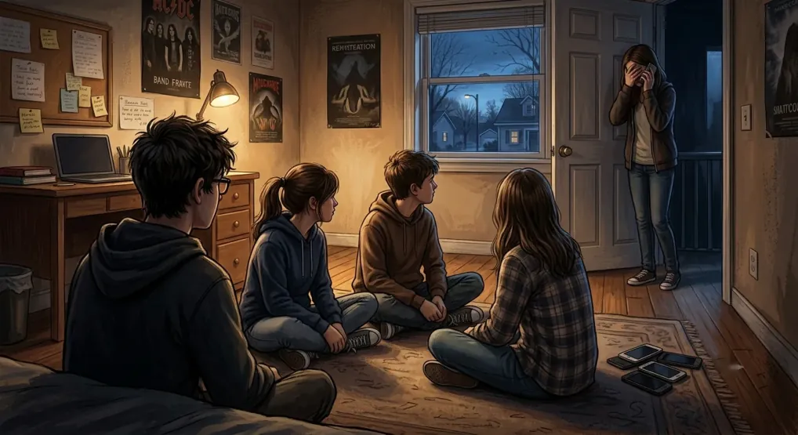
Мы оделись и вышли. Ждали у подъезда — минуту, две. Я держала телефон в руке, экраном к себе.
— Может, у него совещание, — сказал Артём. — Или он на другом вызове.
Галочка не менялась.
Одна серая галочка означала только то, что сообщение ушло. И больше ничего.
— Идём, — сказала Даша. — Он увидит, когда увидит. Мы написали — это главное.
Я пошла со всеми. И всю дорогу до остановки думала, что «мы написали» и «он прочитал» — это два разных события. И главное из них пока не случилось.
Автобус на Заречную шёл почти пустой.
За окном плыли освещённые окна квартир. Человек с собакой на поводке. Женщина с тяжёлыми пакетами из магазина. Обычный вечер для всех, кроме нас.
— Знаете, что странно, — сказал Стас, глядя в окно. — Я весь месяц боялся, что он придёт за мной снова. А теперь я иду за ним сам.
Никто не ответил. Автобус остановился — наша остановка.
Во двор с улицы вёл один проезд, между двумя пятиэтажками. Клуб стоял сразу за ним — тёмный прямоугольник, ни одного огня в окнах. Вывеска почти стёрлась — остались две буквы «КЛ» и контур чего-то, что раньше было, наверное, геймпадом. Дальше, за клубом, тянулись гаражи, и на них двор кончался.
Днём прошёл дождь. Асфальт ещё блестел и трава у стены не просохла.
Дверь была приоткрыта.
Артём посмотрел на Дашу. Она кивнула и толкнула дверь первой.
Я вошла четвёртой. Не последней — Вика шла за мной. Я почему-то отметила и это.
Дверь в последний момент скрипнула, и от дальнего окна метнулась тень — кто-то щёлкнул выключателем. Потом лампа под потолком дважды мигнула и разгорелась — тусклая, жёлтая, но достаточно яркая, чтобы теперь не щуриться в темноту.
Только теперь я разглядела помещение: пыль и сырость, ряды облезлых компьютерных столов, продавленные стулья, стопки коробок в углу. На одном из столов стоял термос, рядом — свёрнутый спальник и ноутбук.
В дальнем углу комнаты у окна стоял человек, и в его лице на секунду промелькнуло что-то похожее на панику.
Две недели я представляла себе лицо того, с кем переписывалась. Тихий мальчик из 8-А, который смотрит под ноги. Я знала это лицо наизусть. Я могла бы нарисовать его по памяти.
У того, кто стоял у окна, было другое лицо.
— Вы как здесь оказались? — спросил он, делая шаг назад.
Голос звучал хрипло. Как у человека, который давно ни с кем не разговаривал вслух.
Мы переглянулись.
Никто из нас никогда его не видел. Но больше стоять здесь было некому.
— Ты сам написал, — сказал Артём, поднимая телефон с открытым сообщением. — Лично мне. Сегодня в восемь, это место.
Алексей нахмурился, шагнул ближе, всматриваясь в экран.
— Я не писал этого, — сказал он медленно.
Внутри у меня что-то остановилось.
Сорок минут назад я это знала. Открыла рот — и не сказала.
— Я здесь с вечера вторника. А потом позвонили. — Я видела, как у него меняется лицо: от непонимания к чему-то похожему на страх. — И у меня не осталось выбора.
— Что значит «не осталось выбора»? — переспросила Даша.
— Кто-то нашёл меня, — сказал он быстро, понизив голос. — Не знаю точно, кто. Знают, кто я, знают, что я собрал за этот месяц. Пригрозили, если начну тормозить — найдут сами и заберут всё.
— Кто «они»? — быстро спросил Стас.
— Не знаю, — сказал он. — И это худшая часть. Я предложил переслать частями, показать, что не тяну просто так. Отправил вчера кусок архива для виду. Не устроило — сказали, издалека можно прислать что угодно, лишь бы отстали, а не то, что нужно на самом деле. Хотят забрать сами, из рук, и убедиться, что это всё. Назначил здесь — я и так уже был на месте, не было смысла срываться куда-то ещё. Согласился на встречу, чтобы понять, с кем имею дело. Не думал, что они приведут сюда ещё и вас.
Он замолчал, глядя на нас уже без паники — скорее с растущим, тяжёлым осознанием.
— Значит, кто-то знал, что вы поверите именно мне, — сказал он тихо. — Знал, как я пишу. Это не случайность.
Хватило слова «двери».
Не разгадка — просто узнавание, как лицо, которое видишь в трещинах на стене, если очень хочешь, чтобы оно там было.
Он выдохнул.
— Второпях собирал архив вчера. Не проверял внимательно, что туда попадает — лишь бы побыстрее. Переписка с вами вполне могла уйти туда же. Теперь, похоже, так и было.
В клубе стало очень тихо.
— Значит, кто-то узнал и про вас, — сказал он. — Вам нужно уходить. Сейчас же.
Но было уже поздно.
Двое вошли быстро, без лишних слов.
Первый — высокий, в тёмной куртке — остался у двери. Второй, пониже, в очках, прошёл к центру комнаты неторопливо — как человек, которому спешить незачем. Над правой бровью у него белела старая полоска пореза, разрывавшая линию волосков.
Я поймала себя на том, что разглядываю его, как разглядывала бы натуру.
— Валер, дверь, — сказал он, не оборачиваясь.
Высокий подвинулся и встал так, чтобы закрыть проём.
Валера. Его звали Валера.
Не знаю, почему из всего происходящего меня ударило именно это.
Алексей шагнул вперёд, заслоняя нас спиной.
— Они не должны быть здесь, — сказал он. — Отпустите их. Это не их дело.
— А чьё? — Мужчина в очках оглядел нас без интереса. — Мы написали им от твоего имени. Не идеально, наверное, но сработало — поверили же.
— Зачем они вам?
— Затем, что теперь ты поторопишься. — Он посмотрел на нас, потом обратно на Алексея. — Отдаёшь — они выходят отсюда прямо сейчас, и мы про них забыли. Не отдаёшь — поедут с нами. Мы подождём, сколько надо. Они подождут вместе с нами.
Он не стал объяснять, что это значит. Ему и не надо было.
Я стояла и понимала: он сказал это буднично. Так люди сообщают, что магазин закрывается в девять.
Стас закрыл меня плечом. Ничего не сказал. Просто встал так, чтобы до меня надо было идти через него.
Валера у двери качнул головой. Не угроза. Просто: я вижу, что ты сделал.
— Как вы вообще на меня вышли? — спросил Алексей.
Он спросил это не потому, что хотел знать. Мне показалось, он тянул время.
— Знакомый знакомого. — Мужчина пожал плечами. — Есть у вас такой Денис. Помните Дениса, молодёжь?
Он посмотрел на нас и подождал — как будто мы правда могли поддержать разговор.
— Разболтал, что ты объявился и что-то на школу собираешь. Подробностей не знаем. Знаем, что собрал немало. Достаточно, чтобы стоило тебя найти.
Он произносил это привычно, почти без интонации — как заученный текст.
— Ты ведь всё собирал, чтобы доказать, какая дырявая система? — Он потёр глаза под очками. — Благородно. А мы просто продадим это тому, кто больше заплатит. Никакой философии — обычный бизнес.
«Это».
Он сказал «это» — и я только теперь поняла, о чём речь.
Не файлы. Там была я. Две недели переписки. Кот, которого я не рисовала. Восемь месяцев, про которые я не говорила никому. Не сведения обо мне — я сама, собранная по кусочкам из того, что я же и выложила. Настолько похожая, что по мне можно было собрать человека, в которого я поверю.
Он его и собрал. Из меня — под меня.
И сейчас меня продавали, пока я стояла и смотрела.
— Ладно, — сказал мужчина. — Давай заканчивать. База школы, карты, переписки — всё, что собрал. Мог отдать спокойно ещё вчера.
— Я сказал, что подумаю.
— Подумал уже.
Воздух в комнате стал плотнее, как перед грозой.
И тогда у меня в кармане завибрировал телефон.
Один раз. Второй.
Мужчина повернул голову на звук.
— Выключи.
Я достала телефон. Руки тряслись — я видела это со стороны, будто они были не мои.
«Майор».
Отбой — красная кнопка, слева. Я знала, где она.
Палец соскользнул.
Зелёная.
Вызов принят.
Я опустила руку вдоль тела, экраном к полу. У бедра тонко зашуршало — так, что слышала, кажется, только я.
«Лиза? Лиза, ты меня слышишь?»
— Кто это? — спросил мужчина.
Соври, подумала я. Первый раз за месяц — соври.
— Никто, — сказала я, глядя прямо на него. — Реклама.
И нажала отбой.
Он не поверил. Но переспрашивать не стал.
— Телефон сюда, — сказал он мне. — Твой первый.
Я положила его в протянутую ладонь. Он не посмотрел на экран — просто убрал в карман куртки, отдельно от всего.
— Остальные — на стол.
Они выложили: Даша, Артём, Стас, Вика. Он смахнул четыре телефона в рюкзак одним движением, даже не глянув.
А мой лежал у него в кармане. Тот самый, на котором только что высветилось «Майор».
Но я знала: майор не просто написал. Он позвонил сам. Значит, забеспокоился уже по-настоящему.
Он был где-то там, ещё далеко. А мы — здесь.
— Подождите, — сказал Алексей, подняв руки. Не сдаваясь — скорее прося паузу. — Дайте мне минуту. Я расскажу им, зачем это делал. Потом может не быть случая. После этого отдам всё.
Мужчина в очках посмотрел на Валеру. Тот едва заметно пожал плечами: мне всё равно.
— Минута. — Мужчина присел на край стола. — Нам сегодня ещё обратно ехать.
Алексей повернулся к нам. В жёлтом свете лампы стали видны тёмные круги под глазами — так выглядит человек, который давно плохо спит.
— Я учился в нашей школе, — сказал он. — Ушёл три года назад. Меня травили. Два года, может, больше. Я ходил к классному руководителю три раза.
Он отвёл взгляд на секунду.
— Первый раз мне сказали: сами разберитесь. Второй: не преувеличивай. Третий раз она даже не подняла глаз от журнала.
Он говорил это без жалости к себе, просто перечислял факты.
Даша не двигалась. Артём смотрел в пол — не на Алексея, будто само место, куда падал взгляд, могло что-то изменить.
— Дверь так и оставалась закрытой. Каждый раз.
Три раза в одну и ту же дверь.
Я не постучала ни разу. Сказала Даше — и дальше открылось само. Артём, полиция, бабушка со своим «молодец» без единой лекции.
Ему не открыли. Мне открыли все.
— Я потом пошёл к школьному психологу, — продолжил Алексей. — Она пыталась. По-настоящему пыталась. Но её слушали не больше, чем меня.
— Мария Сергеевна, — сказала я.
Он повернул голову. Кивнул — чуть удивлённо.
— Она хорошая, — сказал он. — Просто одна не может изменить систему. Я подумал: если что-то пойдёт не так по-крупному — такое, что нельзя отмахнуться «сами разберитесь», — тогда придётся обратить внимание. На детей. На то, что их порой вообще не слушают.
Он на секунду сжал кулаки — и разжал.
— Я хотел не разрушить. Я хотел, чтобы стало видно.
Он сказал «система». Одно слово на всех сразу.
Но Мария Сергеевна не отмахнулась. И Елена Викторовна собрала всю школу, когда узнала. Кто-то в школе его подвёл — но не школа целиком.
Его не услышал один человек за одной дверью. А вычеркнул он всех.
— Видно для кого? — спросил Артём.
— Для всех, кто решал, что меня можно не услышать.
Мужчина в очках взглянул на свой телефон, но перебивать не стал.
— Я написал программу, — сказал Алексей. — Простую. Она должна была собрать данные, чтобы доказать: система дырявая. Но работала она не только так, как я задумал.
Он помолчал дольше.
— Она списывала деньги. Маленькими суммами, у тех, кто переходил по ссылкам. Я узнал не сразу. Но узнал. И не остановил.
— Почему? — спросила Даша.
Он посмотрел на неё прямо — впервые за весь разговор.
— Сказал себе, что это компенсация. За то, что сделали со мной. — Он сглотнул. — Это была ложь. Я просто зашёл слишком далеко, чтобы остановиться и признать, что всё было напрасно.
Лампа под потолком качнулась от сквозняка — тени на стенах дрогнули и замерли.
Я не собиралась ничего говорить. Открыла рот — и услышала собственный голос как будто со стороны.
— Кафе «Радуга».
Он обернулся.
— В тот вечер я проходила мимо, — сказала я. — У стены напротив стоял человек и смотрел на кафе. Это был ты?
— Я. — Он ответил сразу. — Стоял недолго, с другой стороны улицы. Хотел посмотреть на место заранее, я никогда не приходил вслепую. Но внутрь не заходил и не собирался. Встреча была не нужна. Нужно было другое — понять, насколько человек верит тому, кого выдумали. Как далеко заходит доверие, прежде чем появляются сомнения.
— Значит, ты бы не…
Я не договорила.
— Нет, — быстро сказал он. — Не для этого. Важно было не встретиться. Важно было, поверишь ли ты. Ты почти поверила. Это тоже был ответ, я его себе записал.
— Я не была ответом, — сказала я. — Мне было одиноко, а ты сделал из этого опыт. И знаешь, что хуже всего? Тебе даже приходить не понадобилось. Ты своё уже получил — просто заставив меня поверить.
Он молчал.
Я кивнула — коротко, для себя. Не ему.
Стас смотрел на Алексея не отрываясь. Весь разговор он молчал. А теперь заговорил, и голос был не злой, а какой-то пустой.
— Деньги — ладно, программа. Не ты сам. — Он качнул головой. — А видео? Где я сижу и клянчу донаты, как последний нищий. Где я реву в камеру про то, что не могу остановиться с лутбоксами. Программа его не делала. Его сделал ты. Сел и собрал по кадру.
Алексей долго не отвечал — дольше, чем Лизе.
— Пересмотрел все твои стримы, — сказал он, наконец, тихо. — Нашёл, что нужно. Не горжусь этим.
— И ведь про лутбоксы — правда, — сказал Стас. Голос дрогнул, но взгляда он не отвёл. — Это про меня было по-настоящему. Никто не знал. А ты узнал — и вставил. Чтобы било больнее.
Он шагнул ближе.
— Ты знаешь, каково это, когда тебя не слышат. Сам всё рассказал. А потом взял чужое личное и вывернул на весь чат. Мне. За что?
— Ты был просто точкой в списке, — сказал Алексей. — Именем в таблице. Я не думал про тебя как про…
Он не закончил.
— Ага, — сказал Стас. — Как и ты для той классной. Именем в журнале, от которого она глаз не подняла.
Алексей открыл рот — и не нашёл, что ответить. Что-то в его лице дрогнуло, но слова не пришли.
Вот теперь я знала, что сказать.
— Мне было так же плохо, как тебе, — сказала я. — Я тоже молчала. Восемь месяцев. И всё равно не пошла делать так другим.
— Знаю. — Он посмотрел на меня. — Я не прошу простить. Я просто хотел сказать это лично, раз уж выпал случай.
— Всё? — спросил мужчина в очках.
Он не издевался. Он правда уточнял, закончили ли мы.
— Тогда давай базы.
Он поднялся и пошёл ко мне — не за данными, я поняла это сразу. Ему нужен был не архив, а рычаг понадёжнее. Шёл не быстро. Так подходят, чтобы забрать со стола чужую кружку.
Стас, всё это время стоявший между нами, шагнул ещё ближе, заслоняя меня полностью.
— Не трогай её.
Голос у него был жёстче, чем я слышала за весь месяц.
Мужчина посмотрел на Стаса — не зло. Как смотрят на стул, который стоит поперёк прохода.
— Убери руки. Мне без разницы, кто кого закрывает. Всем домой хочется.
— Данные не при мне. — Алексей кивнул на ноутбук на столе. — Там уже пусто, я всё перенёс на флешку и стёр. Она в соседней комнате, спрятана — сам не найдёшь. Пойдём вдвоём, отдам, и всё закончится.
Мужчина помедлил.
— Валера, смотри за ними.
Алексей повернулся и пошёл в другой конец комнаты. В следующий момент он резким движением дёрнул шнур, висевший у окна.
Я не успела понять, что это, — просто лампа под потолком моргнула и погасла.
Темнота упала сразу, вся целиком. Кто-то вскрикнул — кажется, Вика. Грохот: Валера налетел на стол и выругался.
— Не туда! — крикнул Алексей. — Окно в углу, слева от вас! Оно без стекла!
Даша схватила меня за руку и потянула — крепко, за запястье, так же, как тогда у окна, когда сказала «ты не виновата».
Сзади была возня и злой голос — но не за нами. Звуки уходили вглубь здания, туда же, куда ушёл Алексей.
Пустой проём. Кто-то подтолкнул меня снизу, я перевалилась через край и упала в мокрую траву.
Холодный воздух ударил в лицо.
Мы побежали. Впятером, не разбирая дороги, прочь от здания, дыша ртом. Артём споткнулся, Стас поймал его за куртку, не останавливаясь.
Гаражи. За гаражами — забор.
Мы встали не потому, что устали. Просто дальше не было ничего: бетонные плиты вдвое выше меня, серые, без щелей и без единого выступа. За ними не слышно ни машин, ни голосов, ни собак.
Вика согнулась пополам, упираясь руками в колени. Артём оглядывался назад.
Даша беззвучно считала нас по головам — раз, два, три, четыре — одними губами, будто цифры могли что-то изменить.
— Куда? — выдохнул Стас.
И тут я поняла, что ответа нет.
Со двора вёл один проезд — тот, которым мы пришли. И начинался он у крыльца клуба.
Позвонить не с чего: четыре телефона уехали в чужой рюкзак, мой — в кармане куртки того, в очках. Кричать некому: пятиэтажки остались далеко, у самого въезда. А до самого клуба отсюда было полторы минуты шагом.
Из здания мы выбрались. Из ловушки — нет.
Они получат флешку и выйдут. Может быть, прямо сейчас. Двор один, дорога одна, и мы стоим в её конце, у стены, впятером, и деться нам некуда.
Стас шагнул вперёд и встал перед нами. Просто встал.
И тогда с той самой единственной дороги ударил свет.
Две машины остановились у крыльца. Синие всполохи по стенам гаражей, по мокрому асфальту. Двери хлопнули, и люди в форме пошли к зданию — быстро, не оглядываясь по сторонам.
Нас они не видели. Мы стояли в самом конце двора, там, куда свет доходил только краем.
Даша шагнула к границе света первой — и не остановилась.
— Мы здесь! — крикнул Артём.
От клуба к нам шёл человек. Он оказался рядом раньше, чем я успела его узнать.
— Все целы? — спросил майор.
Мы кивали — у кого-то тряслись руки, кто-то просто стоял, не двигаясь. Стас держал меня за плечи и ничего не говорил. Вика так и стояла, прислонившись затылком к бетону, бледная, но на ногах.
Из клуба вывели сначала мужчину в очках. Он шёл, ни на кого не глядя, с тем же лицом, что и весь вечер, — как человек, у которого не задалась смена. Потом Валеру, тот вообще не поднимал головы.
Алексея вывели последним.
Он не сопротивлялся и ничего не пытался сказать на ходу. Просто шёл между двумя полицейскими, глядя прямо перед собой. Поравнявшись с нами, на секунду замедлил шаг.
— Спасибо, что выслушали, — сказал он тихо, ни к кому не обращаясь.
Никто из нас не ответил. Может, потому что не знали, что сказать. Может, потому что некоторые ответы требуют больше времени, чем есть на тротуаре в половине девятого вечера.
Его увели к машине. Дверца захлопнулась.
Майор пробыл с нами ещё полчаса — формальности и звонки родителям, которые он взял на себя, чтобы мы не объясняли всё это сами и в панике. За это время кто-то из полицейских принёс наши телефоны — все пять, в прозрачном пакете.
Бабушке майор позвонил первой. Я слышала, как он сказал: «Маргарита Семёновна, с Лизой всё хорошо, она рядом со мной».
Когда он, наконец, отпустил нас по домам, я обернулась на клуб.
Пока полиция работала внутри, кто-то зажёг фонарь над крыльцом. Теперь его жёлтый свет выхватывал приоткрытую дверь, ту самую, в которую мы вошли час назад. Её покачивало ветром.
Странно — весь месяц мы учились закрывать разные двери. Ту, о которой он рассказал, хотелось бы наоборот — открыть.
Просто не получилось. Не получилось вовремя.
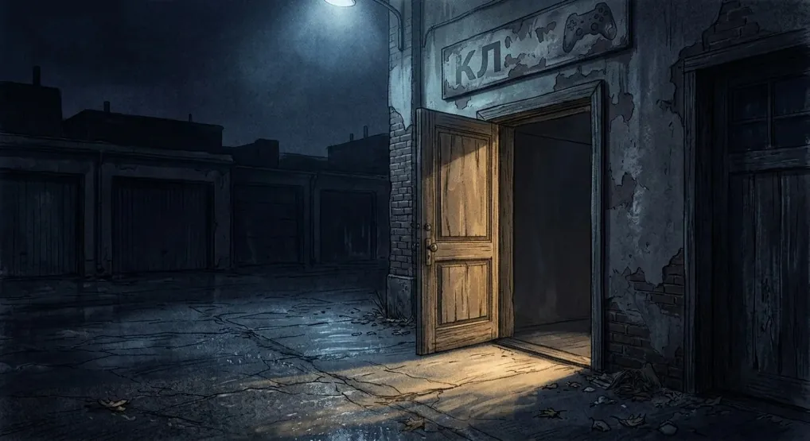
Конец главы 19
[Даша. Понедельник, 11 ноября]
Полторы недели — это не так много. Но в школе №7 за это время изменилось больше, чем за весь прошлый год.
Кабинет информатики на третьем этаже теперь называли по-новому — не «компьютерный класс», а «штаб». Никто не помнит, кто это придумал, но прижилось быстро.
— Через двадцать минут начинаем, — сказал Артём, не поднимая головы от ноутбука. — Стас, у тебя слайды готовы?
— Готовы, готовы. — Стас развалился на стуле, листая телефон. — Я их раз пять проверил.
На стене висел стенд — большой лист ватмана, разделённый на разделы. «Как распознать фишинг». «Что делать, если попросили личные фото». «Куда обращаться, если страшно рассказать родителям». Лиза рисовала последний раздел сама — простые, понятные значки вместо длинного текста.
— Может, добавим про VPN? — спросила Вика, разглядывая стенд. — Я только сейчас узнала, что бесплатные часто сами продают твои данные.
— Уже есть, — сказал Артём, ткнув пальцем в нижний угол. — Маленькими буквами, но есть.
Я смотрела на этот стенд и думала о том, сколько всего здесь — без единого упоминания Призрака, без подробностей того, что случилось с каждым из нас. Просто то, что мы теперь знаем. Просто способ передать это дальше.
Я ещё раз сверила время выступлений по своему листку — десять минут Стасу, десять Владу, плюс вопросы в конце, если будут — а они бывают почти всегда.
Артём возился с проводом от проектора — тот, как обычно, цеплялся не сразу.
— Как гильдия? — спросила я.
Он не сразу ответил — поправил разъём, дождался, пока экран не мигнёт.
— Написал всем. Позавчера. Одним сообщением, без черновиков — иначе никогда бы не отправил.
— И как?
— По-разному. Кто-то отписался сразу. Кто-то сказал, что уже подозревал — я слишком грамотно писал для двадцатилетнего. — Он усмехнулся, не очень весело. — Один до сих пор не ответил. Может, и не ответит.
— А ты как?
— Легче, чем я представлял, когда только рассказал вам про Shadowbyte. — Он пожал плечами.
Вика была права. Правильный момент действительно появился сам — просто его нужно было не торопить.
Лиза доклеивала последний угол стенда. Вика забирала с собой стопку распечаток для следующего занятия — таких теперь будет много, регулярно, для разных классов.
Я отвернулась от Артёма и вернулась к своему листку.
Получилось, что в этот раз организатором была я. Считала, распределяла, держала тайминг. Не геройство — просто работа. Но без неё ничего бы не сложилось.
Катя — та самая, у которой бот выманил три тысячи в самый первый день всей этой истории, — заглянула в дверь за пару минут до начала. Принесла печенье, «на удачу», как она сказала.
— Помню, как сама тогда даже не знала, кому сказать, — призналась она, ставя пакет на стол. — Хорошо, что теперь есть куда прийти.
— Заходи, если что, — сказала я. — Эта дверь теперь всегда открыта.
Она улыбнулась и вышла.
К двум часам в кабинет набились шестиклассники — человек двадцать, шумные, толкающиеся за места поближе к экрану. Мария Сергеевна стояла у двери, скорее наблюдая, чем ведя — это был наш кружок теперь, не её.
Стас включил проектор и встал рядом с первым слайдом — спортивные метафоры зашли на ура у шестиклашек.
— Короче, как в хоккее, — говорил он, тыча в схему на экране. — Видишь шайбу — не бросаешься сразу. Смотришь, кто рядом, откуда идёт пас. В интернете так же. Видишь сообщение — не бросаешься отвечать. Смотришь, кто прислал, откуда.
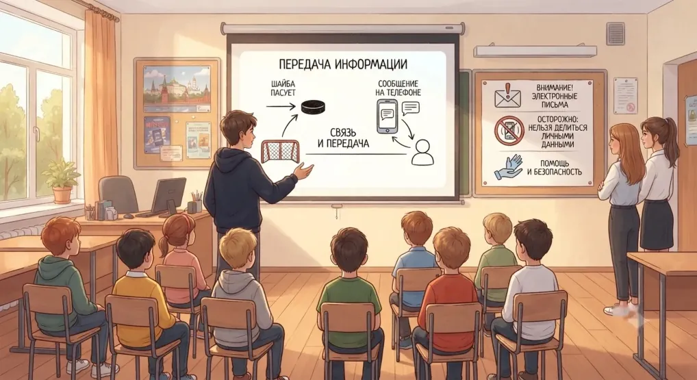
Кто-то засмеялся. Стас расцвёл — он явно скучал по тому, чтобы быть в центре внимания, просто теперь по другой причине.
Он сел рядом со мной, ещё не отдышавшись от собственного выступления.
— Слышала, ты новый формат запустил, — сказала я тихо.
— Ага. — Он пожал плечами, но не смог скрыть, что доволен. — «Как меня развели на пятьдесят тысяч». Артём в октябре говорил — перекрыть, не стереть. Я тогда не поверил. А зашло лучше, чем обычный геймплей.
— А донаты? Лутбоксы?
Он помолчал секунду.
— Отключил на месяц. Пару раз заходил к Марии Сергеевне после уроков — просто поговорить, не за советом даже. — Пауза. — Понял, что на счётчик смотрю чаще, чем на игру. Не понравилось это.
— И как без него?
— Странно. — Он усмехнулся. — Но нормально странно.
Я хотела спросить про отца, но не успела — он сам сказал, будто прочитал мысли.
— Батя на прошлой неделе первый раз посмотрел стрим целиком. Не хоккей — стрим. Написал потом: «Смешно рассказываешь». Всё.
— Это много, — сказала я.
— Ага, — сказал Стас. — Для него — очень много.
Потом встал Влад.
Он не был частью нашей пятёрки всю историю — просто парень из параллельного класса, который в начале октября скачал что-то с форума и поделился с половиной школы, не зная, что внутри. Сейчас он стоял у доски, чуть неловко, как человек, которому непривычно быть впереди.
— Я не знал, — сказал он просто. Без предисловий. — Скачал файл, поделился. Думал — полезная штука. Оказалось, что нет.
В классе было тихо.
— Теперь знаю, как проверять. И хочу, чтобы вы тоже знали.
Я смотрела на него и думала: вот так это и работает. Не злой умысел. Просто незнание. И именно поэтому важно говорить об этом — не чтобы обвинять, а чтобы в следующий раз кто-то знал.
После занятия, когда шестиклассники разошлись, я заметила в дальнем углу знакомую фигуру — Юля Соколова, та самая, чьи фотографии разлетелись по школьным чатам в начале октября. Она помогала Лизе сворачивать стенд, о чём-то негромко переговариваясь.
Я подошла ближе, чтобы забрать последний рулон скотча, и услышала обрывок разговора — не специально, просто оказалась рядом.
— Знаешь, что странно, — сказала Юля, складывая уголок ватмана. — После того, что случилось, я почти три недели из дома не выходила. Со мной психолог созванивалась через день, и классная заходила пару раз — просто посидеть, без вопросов. Думала, вернусь — и все будут коситься. А вернулась — и почти никто ничего не сказал. Просто как обычно.
— Это хорошо, — сказала Лиза.
— Ага, — Юля улыбнулась, чуть смущённо. — Не думала, что так получится.
— Хочешь, как-нибудь порисуем вместе? — спросила Лиза. — У тебя же неплохо получалось с оформлением.
— Хочу, — сказала Юля.
Я отступила на шаг — не хотела мешать. Не главная героиня момента — просто Юля, человек, который снова здесь, снова в школе, снова разговаривает с кем-то вживую.
Этого, кажется, было достаточно.
У дверей штаба меня перехватил майор Островский — заглянул «на минуту», как он выразился, хотя минута у него обычно растягивалась.
— Хорошая работа со стендом, — сказал он, кивнув на дверь кабинета. — Слышал, вы затеяли то же самое для других классов.
— Спасибо. — Я вытерла испачканные маркером пальцы о джинсы — руки за день успели стать чёрно-синими от исправлений на ватмане.
Майор помолчал, потом сказал то, ради чего, кажется, и зашёл.
— Даша. Хочу сказать одну вещь. Не в наказание — для памяти.
Я напряглась.
— В тот вечер, когда вы поехали в клуб. Вас позвали — вы пришли. По одному сообщению, с дедлайном «сегодня в восемь», без проверки, кто на самом деле зовёт. Знаешь, как это называется?
Я знала. Слышала эти слова от Артёма весь октябрь, пока мы разбирались, как работает Призрак.
— Социальная инженерия, — сказала я тихо.
— Именно, — сказал майор. Не отчитывал — просто констатировал, как всегда. — Вы весь месяц лучше меня разбирались, как это работает. А потом сами попались на тот же приём.
Я промолчала — спорить было не с чем.
— Так вы правда приехали из-за сообщения Лизы? — спросила я. — Или просто оказались рядом, и оно не сыграло роли?
— Прочитал не сразу, — сказал майор. — Где вы были в этот момент — не знаю, не отслеживал. Позвонил проверить — мне ответили «реклама» и бросили трубку. Не понравилось. Поднял ребят, поехали. Из здания вы вышли сами — тут ваша заслуга, не наша. Только окно вывело вас к гаражам, а там забор и всё. Обратно на улицу дорога одна — мимо той самой двери. Так что успели мы впритык.
Я вспомнила бетонные плиты в два моих роста. И как мы стояли перед ними впятером, и деться было некуда.
— Хочу, чтобы ты запомнила именно это, — сказал он. — Не то, что всё обошлось. А то, что обошлось на грани.
— Мы не должны были туда ехать.
— Не должны. — Он не стал смягчать. — Написать мне и остаться дома — этого хватило бы. Я бы всё равно приехал.
Он помолчал.
— Но вы написали. Вот это вы сделали правильно, и это вас вытащило. Заметить и написать — ваше дело. Самим ехать туда, где может быть опасно, — уже нет.
Он кивнул на стенд за моей спиной.
— Про фишинг у вас есть. Про фото, про то, куда идти, если страшно, — тоже. А вот то, что вас торопят и просят никому не звонить — этого нет нигде. Хотя именно на это вы и попались.
— Это отдельная тема, — сказала я. — Для ещё одного занятия. И плаката.
— Вот и я о том же, — сказал майор.
— А Денис? — спросила я. — Тот, из паблика. В клубе сказали, что это он разболтал про Алексея. У него будут проблемы?
Майор покачал головой.
— Кому-то в своём кругу обмолвился — не рассчитал, куда дойдёт. Мы объяснили ему, что из этого вышло. — Пауза. — Он ведь и вам рассказал немало, когда сам пришёл. Без него мы бы, наверное, ещё неделю топтались на месте. Одно другого не отменяет. Попросил больше не звонить ему — на этом и остановились.
— Можно ещё вопрос? — сказала я, когда он уже повернулся к выходу.
Майор остановился.
— Флешка. Та, что была у него в кармане. Что с ней?
— Скажу то, что уже не тайна следствия, — начал майор. — Изъяли в тот же вечер. Экспертиза закончилась на прошлой неделе. — Он ответил сразу, без паузы. Значит, этот вопрос задавала не я одна. — Всё, что он собрал за месяц. Переписки, пароли, фотографии.
— Пятнадцать человек, — сказала я.
— Девятнадцать, — поправил майор.
Я не сразу поняла, что услышала.
— Артём говорил — возможно, больше, — сказал майор. — Он был прав. Четверо не оставили следа нигде. Ни жалобы, ни поста, ни строчки в чате. Мы бы про них не узнали, если бы не флешка.
Я быстро посчитала: двадцать три из таблицы Артёма, плюс он сам — двадцать четыре к ноябрю, и ещё эти четверо сверху. Из них девятнадцать молчали, каждый по-своему, пока мы искали.
Четверо, о которых мы так и не догадались. Которые весь октябрь сидели с этим в одиночку, пока мы пытались сложить всю картину по кусочкам.
— И теперь это у вас?
— Та копия, которую мы нашли, — у нас, — сказал майор. — Была ли она единственной, никто не скажет. Поэтому всем девятнадцати мы посоветовали поменять пароли и какое-то время присматривать за аккаунтами.
Я хотела спросить что-то ещё и не нашла что.
— Флешку мы забрали, — сказал он. — А что он успел скопировать до этого — никто не знает.
Значит, где-то они, может быть, до сих пор есть. Девятнадцать человек, собранных по кусочкам из того, что каждый выложил сам. Не люди — копии, очень похожие. Фантомы. Другого слова я не подобрала.
Наши цифровые фантомы ходят где-то сами, без нас.
Мария Сергеевна попросила меня зайти к ней, когда кабинет информатики опустел. Её кабинет был таким же, как всегда.
— Сядь на секунду, — сказала она, разливая чай, который я не просила, но была ему рада.
Мы сидели молча какое-то время.
— Вам пишут про него? — спросила я, наконец. — Про Алексея.
— Иногда. Через адвоката, формально. — Она смотрела в чашку. — Не подробности. Просто, что процесс идёт.
— Не знаю, что чувствовать, — сказала я честно. — С одной стороны — он сделал то, что сделал. Со Стасом, с Лизой. И с теми, кто молчал. Их оказалось девятнадцать.
Мария Сергеевна не переспросила. Значит, знала. Наверное, раньше меня.
— С другой — ты слышала от него, почему, — закончила она.
Я кивнула.
— Они приходили? — спросила я. — Те четверо, которых нашли только по флешке.
— Приходили, — сказала она. Без имён, без подробностей — и я не стала спрашивать.
Мария Сергеевна долго молчала, прежде чем сказать что-то ещё.
— Он сделал неправильные вещи, — произнесла она, наконец, медленно, как будто подбирая слова, которые носила в себе давно. — Но начал он с правильного вопроса: почему его никто не защитил? Вопрос был правильный. А ответ, который он выбрал, — нет. Теперь этот же вопрос задаём мы. И, кажется, ищем ответ получше, чем нашёл он.
Я думала об этом всю дорогу до спортзала.
Тренировка начиналась в пять. Я пришла без предупреждения — просто открыла дверь и встала у стены. Тренер посмотрел на меня. Долго. Потом коротко кивнул в сторону площадки — мол, давай, не стой.
Я встала в линию у сетки. Кто-то из девочек уже разыгрывал атаку с другой стороны — нападающий удар пошёл точно на меня. Я прыгнула. Блок получился чистым — один из лучших за сезон, я чувствовала это по рукам.
— Козлова, — сказал тренер. Без интонации.
— Я знаю, — сказала я. — Больше не пропущу.
— Посмотрим, — сказал он так же ровно. — Столько недель без тренировок просто так не проходит. Но один блок тоже кое-что стоит.
Он кивнул. Тренировка продолжилась.
За окном спортзала темнело — ноябрь, в пять вечера уже ночь. Почти месяц назад я стояла в другом окне и думала, что жизнь сдвинулась с места и катится непонятно куда. Теперь было понятно.
Мяч снова летел в мою сторону. Я была готова.
Конец главы 20
После прочтения
Вопросы, памятки, глоссарий, куда обратитьсяЭто не домашка. Просто, если захочется, — есть о чём подумать. Одному, с другом или с близкими за столом.
К части I. Невидимая угроза
- Даша, Катя, Лиза и Стас попались на разные ловушки — программу со скинами, ссылку в Telegram, фейкового друга, «крипто-гуру». Что у всех этих обманов было общего?
- Даша решила два дня разбираться сама, а не сразу идти к взрослым. Как думаешь, это было ошибкой или разумной попыткой сначала понять, что происходит? Могут быть правы обе позиции?
- Взрослый в школе сказал пострадавшей девочке, что она «сама виновата». Почему такие слова опасны — и как бы ты поддержал того, с кем это случилось?
- Артём умеет то же, что и Призрак, но выбрал другую сторону. Что, по-твоему, удерживает человека на светлой стороне?
К части II. Цифровые следы
- Стаса опозорили поддельным видео, куда вставили его настоящую тайну. Почему фейк ударил так больно именно из-за правды внутри?
- Даша понимает, что «поставить галочку» в соглашении — это как подписать договор не читая. Что приложения на твоём телефоне могли получить от тебя, пока ты не смотрел?
- К концу недели герои видят: почти всё в сети оставляет след. Это их пугает — или помогает? Кому следы вредят, а кому, наоборот, спасают?
- Лиза, наконец, показывает переписку с «Мишей» друзьям и взрослым. Что для неё изменилось, когда она перестала молчать?
К части III. Сеть смыкается
- Призрак публикует манифест и объясняет, зачем всё это делает. Его боль можно понять — но делает ли она его поступки правильными?
- Артём разбирает, как игры и ленты «подсаживают» через награды и страх что-то упустить. Замечал ли ты такие приёмы на себе?
- Одна из глав называется «Цена молчания». Что герои теряли, пока молчали, — и что изменилось, когда заговорили?
- Майор специально не сказал ребятам, что бэкап на сервере — подделка, чтобы их тревога выглядела настоящей для Призрака. Это было оправданно — или он не имел права так рисковать их спокойствием?
К части IV. Разоблачение
- Из прошлого Алексея мы узнаём, что его травили, а никто не защитил. Психолог говорит: вопрос он задал правильный, а ответ выбрал неправильный. Как ты это понимаешь?
- Артём, который учил всех «не выдавай себя за другого», сам два года вёл гильдию под чужим возрастом. Почему даже те, кто знает правила, их нарушают — и что помогло Артёму признаться?
- Елена Викторовна признаёт перед Артёмом, что была неправа — и что должна была извиниться и перед ним, и перед Юлей. Но самой Юле она так ничего и не говорит. Может, чтобы не тревожить её лишний раз. А может, потому что признаться было проще тому, кто оказался рядом. Как думаешь, почему?
- В финале взрослый проводит черту: заметить и написать — ваше дело, а самим ехать туда, где может быть опасно, — уже нет. Согласен ли ты с этой границей? Где она, по-твоему, проходит?
Это справочные карточки — на случай, если что-то из книги случится в жизни. Ты не обязан справляться один.
Если тебе или другу очень плохо
Тяжёлые мысли — не слабость и не стыд.
- Не оставайся с этим один: расскажи взрослому сегодня, не «потом».
- Если про друга — не обещай хранить тайну, когда речь о его безопасности.
- Есть люди, чья работа — просто выслушать, бесплатно и анонимно.
К кому: родители, психолог; телефон доверия — см. «Куда обратиться».
Если общаешься с тем, кого не знаешь в реальной жизни
Аккаунт может быть не тем, кем кажется — это не значит, что ты плохо разбираешься в людях.
- Проверь: давно ли создан аккаунт, есть ли общие знакомые — пустой новый профиль красный флаг.
- Не сообщай адрес, школу, расписание, не шли фото.
- Не иди на встречу один и не тайком; зовут — расскажи взрослому.
- Что-то «не сходится» — доверься этому чувству.
К кому: родители, психолог; см. «Куда обратиться».
Если тебя торопят и просят никому не звонить
Срочность плюс секретность — это не совпадение. Это связка. Настоящей просьбе не мешает, если ты спросишь у кого-то ещё.
- Скажи вслух или про себя: «Я решу завтра». Настоящее дело подождёт до завтра, ловушка — нет.
- Проверь, кто пишет, по другому каналу: позвони, спроси общего знакомого, напиши на старый аккаунт.
- Расскажи взрослому до, а не после. Даже если просили не рассказывать. Особенно если просили не рассказывать.
- Если после твоего вопроса собеседник начал злиться или торопить сильнее — ты уже получил ответ.
К кому: любой взрослый, которому доверяешь; 112, если зовут куда-то прямо сейчас.
Если просят прислать личные или интимные фото
Просьба — не то же самое, что согласие. Стыдиться нечего, даже если уже отправил.
- Не отправляй. Никакая «проверка возраста» или «докажи, что доверяешь» твоих фото не требует.
- Тот, кто просит такое у подростка, нарушает границу — даже если он «друг».
- Скажи взрослому сразу.
- Если уже отправил — ты не виноват, всё равно расскажи: чем раньше, тем проще помочь.
К кому: родители, психолог; см. «Куда обратиться».
Если тебя шантажируют
Стыд и страх — вот на чём держится шантаж. Без них у шантажиста нет рычага.
- Не отвечай и не выполняй требование — ни разу, даже «только один раз, а потом отстанет».
- Сохрани всё: сообщения, скриншоты, даты — это докажет, что происходило.
- Не решай сам, обошлось или нет, — расскажи взрослому сразу, как только появилась угроза.
- Даже если что-то уже случилось или ты уже что-то отправил — ты не виноват, помощь всё равно есть.
К кому: родители, полиция, психолог; см. «Куда обратиться».
Если тебя вербуют — просят стать информатором или сделать что-то ради «справедливости»
Лесть и напоминание о твоей обиде — вот на чём обычно держится вербовка. Уже то, что ты это знаешь, немного защищает.
- Если тебе льстят («ты один всё понимаешь») и напоминают об обиде, которая у тебя правда есть, — это приём, а не совпадение.
- Не соглашайся сразу, даже если предложение звучит правильно и справедливо — взять время подумать нормально.
- Если просят не просто последить и рассказать, а сделать что-то незаконное — это уже не мелочь, а преступление, в которое тебя втягивают.
- Расскажи взрослому, даже если уже согласился или что-то сделал — чем раньше, тем проще всё остановить.
К кому: родители, полиция, психолог; см. «Куда обратиться».
Если тебя травят в сети
Это не твоя вина и не про тебя.
- Не вступай в спор — это не остановит, а силы отнимет.
- Сохрани доказательства: скриншоты, ссылки, даты.
- Заблокируй и пожалуйся на аккаунт в приложении.
- Расскажи взрослому, которому доверяешь — молчание защищает не тебя.
К кому: родители, классный руководитель, психолог; см. «Куда обратиться».
Если тебе прислали чужое фото или видео
Не пересылать дальше — это тоже помощь, а не просто «ничего не делать».
- Не пересылай, не сохраняй и не комментируй — даже если «все уже видели».
- Если знаешь, кто на фото — не показывай специально, спроси, нужна ли помощь.
- Пожалуйся на пост или сообщение в приложении.
- Скажи взрослому, если ситуация серьёзная или продолжает расходиться.
К кому: родители, классный руководитель; см. «Куда обратиться».
Если списали деньги или это оказался скам
Деньги — неприятно, но решаемо; здоровье и доверие важнее.
- Скажи родителям сразу, пока не нашли сами — признаться первым легче.
- Смени пароли, отвяжи карту, сообщи в банк.
- Сохрани переписку и чеки.
К кому: родители, банк; см. «Куда обратиться».
Если думаешь, что установил вирус
Такое бывает даже у тех, кто хорошо разбирается в телефонах и компах.
- Не паникуй и не «чини» скрытно.
- Отключи устройство от интернета и не вводи с него больше паролей.
- Со взрослым смени пароли важных аккаунтов с другого устройства.
- Включи двухфакторную защиту, где её не было.
К кому: родители, айтишник, которому доверяешь.
Если не можешь оторваться от игры или донатов
Это не «слабая воля» — игры специально тянут.
- Признаки: тратишь больше, чем хотел; злишься, когда отрывают; скрываешь, сколько играешь.
- Поставь внешние границы: лимиты времени, отвязанная карта, договор с родителями.
- Не справляешься сам — это повод поговорить, а не стыдиться.
К кому: родители, психолог; см. «Куда обратиться».
Если наткнулся на запрещённый или пугающий контент
То, что тебе это попалось, — не твоя вина.
- Не пересылай и не сохраняй — даже «чтобы показать».
- Закрой и не ищи дальше.
- Скажи взрослому — ты не виноват, что это тебе попалось.
К кому: родители; горячая линия — см. «Куда обратиться».
Если новый знакомый зовёт встретиться и просит никому не говорить
Просьба сохранить это в секрете — сама по себе главный признак. Тому, у кого хорошие намерения, скрывать нечего.
- Не иди на встречу, не договорившись со взрослым. Не «потом расскажу» — до.
- Проверь, тот ли это человек: общие знакомые, живой аккаунт, разговор голосом или видео.
- Сохрани переписку. Не удаляй, даже если стыдно.
- Расскажи взрослому. Если знакомый после этого начнёт злиться или торопить — ты всё сделал правильно.
К кому: родители или любой взрослый, которому доверяешь; полиция — 112; см. «Куда обратиться».
Если страшно рассказать взрослым (или тебе не поверили)
Страх и недоверие — не повод останавливаться.
- Страх понятен — но молчание обычно делает хуже.
- Выбери одного взрослого, которому доверяешь больше всех: не обязательно родителя.
- Начни с малого: «мне нужно кое-что рассказать, и мне страшно».
- Один не услышал — попробуй с другим.
К кому: любой взрослый, которому доверяешь; см. «Куда обратиться».
Если хочешь убрать свой цифровой след
Это не про идеальную чистоту — это про контроль.
- Полностью «стереть себя» нельзя — но уменьшить след реально.
- Закрой лишние аккаунты, сделай профили приватными, убери геометки.
- Погугли своё имя — посмотри, что видно чужим.
- На будущее: прежде чем выложить, спроси — ок ли, если это увидят все и навсегда?
К кому: родители; настройки — см. «Глоссарий».
Если правила дома кажутся тебе несправедливыми
Хотеть больше самостоятельности — нормально, даже если родители пока не готовы её дать.
- Не ищи обходных путей молча — скрытые аккаунты чаще портят доверие, чем решают проблему.
- Выбери спокойный момент для разговора, а не середину конфликта.
- Предложи компромисс — например, показывать переписку выборочно вместо полного запрета телефона.
- Если правило выглядит двойным стандартом — можно сказать об этом спокойно, без обвинений.
К кому: родители; если совсем не получается договориться — школьный психолог как посредник.
Бэкдор — тайный «чёрный ход» в систему в обход паролей. Его оставил бывший сисадмин, а Призрак им воспользовался. (Гл. 8, подробно — гл. 9)
Верификация — проверка, что человек или сайт — те, за кого себя выдают. Пустой новый аккаунт «Миши» проверку не прошёл. (Гл. 1, разоблачение — гл. 6)
Вредоносная программа (вирус) — программа, которая притворяется полезной («чит на скины»), а на деле крадёт сохранённые данные — пароли, данные карты. Так у Даши и увели деньги. Разновидность — программа-загрузчик: ставишь одно, а она тянет за собой другое. (Гл. 1, подробнее гл. 4).
Геолокация — метка места, где сделано фото или где ты сейчас. Если не отключить, телефон сохраняет её вместе со снимком. (Гл. 4).
Груминг — когда взрослый втирается в доверие к ребёнку, чтобы потом попросить фото, встречу или секрет «только между нами». Начинается всегда с интереса и заботы, а не с угроз. Просьба ничего не рассказывать взрослым — главный признак. (См. карточку «Если новый знакомый зовёт встретиться и просит никому не говорить»).
Двухфакторная защита — вход в два шага: пароль плюс код из приложения или сообщения. Даже если пароль украли, войти без второго шага не получится. (См. карточку «Если думаешь, что установил вирус»).
Дипфейк (deepfake) — поддельное фото или видео, где человека заставляют говорить и делать то, чего не было. Так на Стаса сделали фейковый ролик. (Гл. 7).
Договор-галочка — «принимаю условия», которое никто не читает. По сути ты подписываешь договор вслепую и разрешаешь приложению больше, чем думаешь. (Гл. 4).
Кэтфишинг — когда кто-то выдаёт себя за другого человека, чтобы втереться в доверие. «Миша» был не Мишей. (Гл. 2, подробнее гл. 6).
Крипто-скам / финансовая пирамида — обещание лёгких денег, которое заканчивается их потерей. Обёртка меняется быстро — сегодня крипта, завтра может быть что-то другое, — а механика одна: обещанная сверхприбыль, искусственная задержка вывода, поддельные отзывы «уже вложивших». Так Стас лишился пятидесяти тысяч. (Гл. 3).
Логи — записи о том, кто и когда заходил в систему. По ним видно каждый вход и выход — цифровые следы. (Гл. 5).
Метаданные — скрытая информация внутри файла: когда снято, каким телефоном, иногда — где. Фото хранит больше, чем видно глазом. (Гл. 4).
Ответственное раскрытие — если нашёл дыру в защите, о ней сообщают, а не используют во вред. Этим Артём и отличается от Призрака. (Гл. 5 — предпосылка; термин — гл. 9; финал — гл. 17).
Петля подкрепления — приём, которым игры и ленты «подсаживают»: награда приходит непредсказуемо, и остановиться трудно. Лутбоксы и донаты работают так же. (Гл. 13).
Приватность аккаунта — Настройки, которые решают, кто видит твои посты и данные. Открытый стримерский аккаунт Стаса стал материалом для дипфейка. (Гл. 7).
Профайлинг — сбор разрозненных мелочей о человеке, чтобы понять его привычки и слабые места. По отдельности каждая мелочь безобидна, вместе — портрет. Именно так Призрак выбирал, на кого и чем давить. (Гл. 13).
Разрешения приложений — доступ, который ты даёшь программе: к камере, геолокации, контактам. Часто даёшь не глядя. (Гл. 4).
Скам — любой обман ради денег или данных: фейковый конкурс, «бесплатный сыр», поддельный сайт. (Гл. 1).
Социальная инженерия — обман, который бьёт не по технике, а по доверию: торопят, пугают, притворяются своим. Именно так героев и «позвали» в клуб. (Гл. 2, 6, разбор — гл. 14, полностью — гл. 19-20).
Стилер — программа, которая молча выгребает сохранённые пароли и данные карт. Ничего не ломает и не показывает — поэтому её замечают позже всего. (Механизм показан в гл. 1).
Фишинг — поддельные сообщения и сайты, которые выманивают пароли и данные карты. Ссылка «RobIox» с латинской «I» вместо «l» — это оно. Кстати, если увидишь ссылку, написанную как «сайт[.]ru» — с точкой в скобках, — это не опечатка: так специалисты по безопасности нарочно ломают ссылку, чтобы её нельзя было случайно открыть одним кликом. (Показано в гл. 1, термин — на стенде в гл. 20).
Цифровой след — всё, что ты оставляешь в сети: посты, лайки, логи, метаданные. Его почти невозможно стереть полностью. (Гл. 5, углубляется до гл. 12).
Цифровой фантом — копия человека, собранная из его же следов: постов, переписок, привычек, мелочей. Достаточно подробная, чтобы с ней можно было разговаривать вместо тебя — или чтобы обмануть тебя тем, кому ты поверишь. (Гл. 19–20).
Этичный хакинг (белый хакер, CTF) — искать уязвимости, чтобы защищать, а не вредить. Есть соревнования, где это делают легально. (Гл. 5).
FOMO — страх упустить что-то важное, если выйдешь из сети. На нём держится половина уведомлений. (Гл. 14).
IP-адрес — «адрес» устройства в сети, по которому можно определить примерное место. По нему майор и вышел на Призрака. (Гл. 5, трассировка — гл. 10 и 17).
Spyware — программа-шпион: следит за тобой и передаёт данные третьим лицам без твоего ведома. Иногда прячется даже в приложениях «родительского контроля». (Гл. 4, разоблачение — гл. 8).
VPN — сервис, который прячет твой IP. Но бесплатный VPN часто сам продаёт твои данные — «бесплатный сыр». (Гл. 12).
Звонить и писать в такие службы — это нормально. Почти все они бесплатны и анонимны: тебя не отругают, а на том конце — люди, чья работа просто выслушать и помочь.
Если тяжело, страшно или не с кем поговорить — о чём угодно
Детский телефон доверия — 8-800-2000-122 (с мобильного — короткий номер 124). Круглосуточно, бесплатно, анонимно.
Если проблема именно в интернете — преследование, шантаж, груминг, мошенничество, пугающий контент
Линия помощи «Дети онлайн» — 8-800-250-00-15 (будни, 9:00–13:00 и 14:00–18:00, обед 13:00–14:00, бесплатно), почта helpline@detionline.com. Здесь и психологи, и технические специалисты.
Если тебя травят или буллят
Телефон доверия «Травли NET» — 8-800-500-44-14 (будни, 10:00–20:00) или форма на травлинет.рф, если дозвониться не получилось.
Если наткнулся на запрещённый или опасный контент и хочешь, чтобы его убрали
Горячая линия по противоправному контенту — анонимно, через сайт rushotline.ru.
Если кто-то в опасности прямо сейчас
Единый номер экстренных служб — 112, с любого телефона.
Если списали деньги
Позвони в свой банк (номер на обороте карты) — там умеют блокировать карту и оспаривать списание. О мошенничестве можно сообщить и по 112.
Телефоны действуют на момент выхода книги; если номер не отвечает — начни с 8-800-2000-122.
История выдумана — но всё, что сделал Призрак, это настоящие преступления, за которые в России отвечают по закону.
Первое, что нужно знать
.
Если обманули, обокрали, затравили именно тебя или слили твои фото — преступник не ты. Жертва закон не нарушает. Ты можешь спокойно пойти в полицию или к взрослым: тебя не накажут за то, что это с тобой случилось. Молчание выгодно только тому, кто это сделал.
А теперь — что именно он нарушил:
— Влезть в чужую систему, воспользоваться бэкдором — неправомерный доступ к компьютерной информации (ст. 272 УК РФ).
— Сделать или запустить вирус, стилер, программу-загрузчик — создание и распространение вредоносных программ (ст. 273 УК РФ).
— Собирать и хранить чужие персональные данные, добытые таким доступом, а потом передавать или продавать их — отдельное преступление (ст. 272.1 УК РФ). Именно за этим архивом и приходят к Призраку в конце книги.
— Выманить или списать чужие деньги через поддельный сайт, бота или чужую карту — мошенничество, в том числе компьютерное (ст. 159.6, 159.3 УК РФ).
— Собрать и разнести чужую переписку и фото — нарушение неприкосновенности частной жизни (ст. 137 УК РФ).
— Слепить порочащий фейк — клевета (ст. 128.1 УК РФ).
— Требовать деньги, помощь или молчание под угрозой раскрыть то, что человек хочет скрыть, — вымогательство (ст. 163 УК РФ).
Про возраст — важно.
«Мне же нет 18, мне ничего не будет» — это миф. За большинство таких дел отвечают с 16 лет, а за кражу, грабёж и ряд тяжёлых преступлений — уже с 14. И даже если ты младше — последствия есть: с тобой разбирается полиция по делам несовершеннолетних, отвечают родители, история остаётся с тобой.
Это короткая справка, а не юридическая консультация. Законы иногда меняются — точную статью подскажут взрослые или юрист.
Для педагогов и родителей подготовлены отдельные материалы: методическое приложение для уроков и памятка о разговоре с подростком. Ссылка: https://obzr77.github.io/demin-obzr-site
Там же — больше о безопасности: не только цифровой.
Отсканируйте, чтобы перейти на сайт с материалами